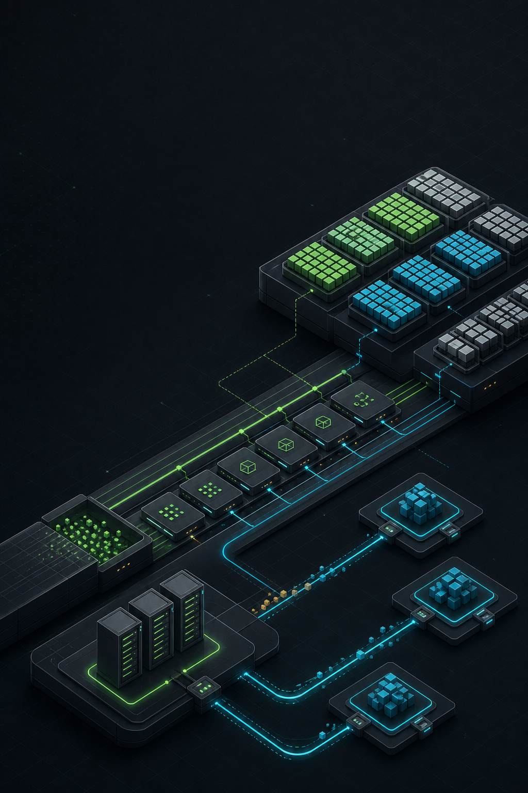
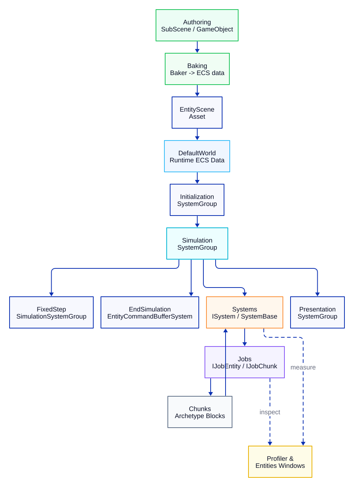
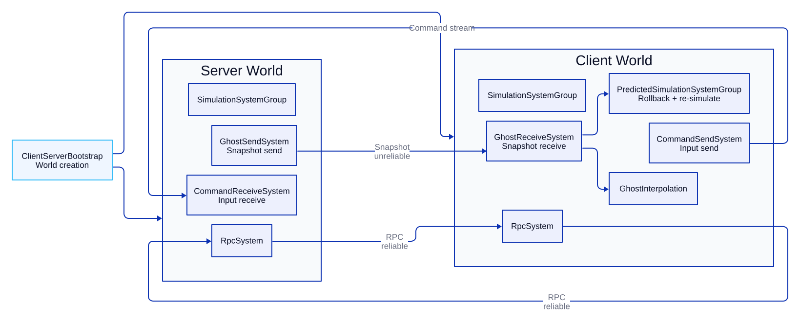
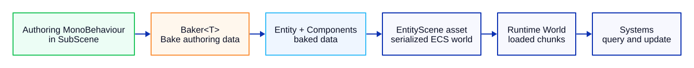
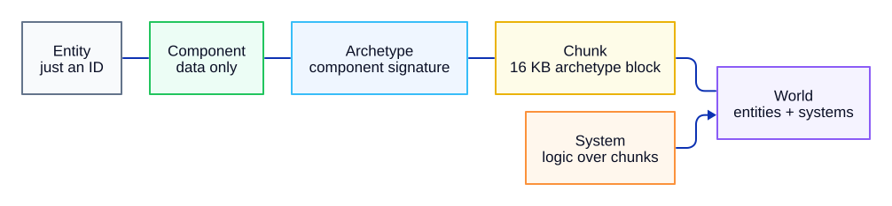
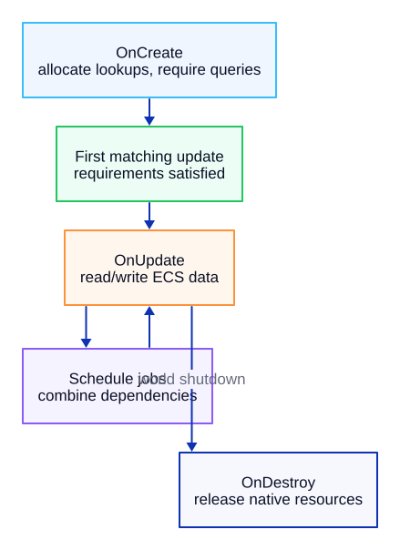
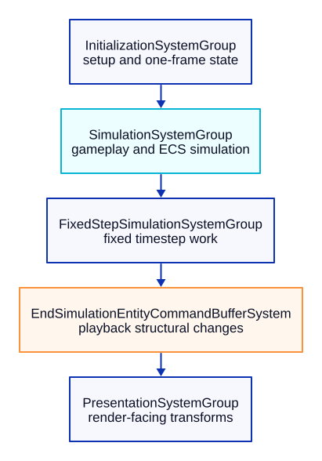
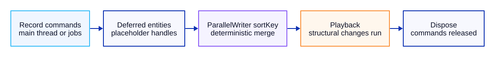
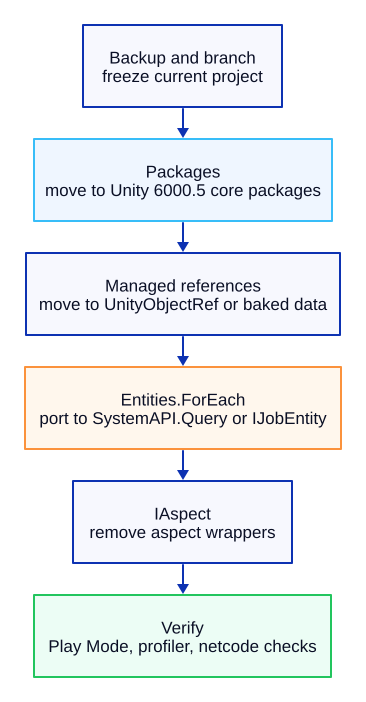

Unity 6000.5 · Entities 6.5
Unity DOTS
입문
Entities, Netcode, ECS 워크플로우, job, 디버깅, 최적화, 마이그레이션.
Unity DOTS 입문
Entities 6.5, Netcode for Entities, ECS 워크플로우, 최적화, 마이그레이션을 다루는 실전 안내서.
Unity DOTS Introduction 저장소에서 2026-05-21에 생성한 한국어판.
지은이: 조영민 (SillyToolValley) / UCI (Unity Certified Instructor)
Unity, Entities, Netcode for Entities 및 관련 패키지 이름은 Unity Technologies의 상표 또는 제품명이다. 이 책은 커뮤니티 학습 정리 자료이며 Unity 공식 문서가 아니다.
공개적인 읽기와 인용은 허용된다. 자동 스크래핑, 데이터셋 포함, AI 학습, AI 답변 수집은 서면 허가 없이 허용되지 않는다.
Unity DOTS 입문
Entities 6.5, Netcode for Entities, ECS 워크플로, 최적화, 마이그레이션을 다루는 실무 안내서.
이 책은 Unity DOTS 가이드라인 저장소를 한 권의 책으로 엮어 처음부터 끝까지 읽을 수 있게 정리했다. 다루는 내용은 모두 실무에 바로 쓰는 것들이다. 설정, SubScene과 Baker 워크플로, ECS Component와 System 패턴, Job 스케줄링, 구조적 변경의 안전성, EntityCommandBuffer 활용, Netcode for Entities, 최적화, 디버깅, 마이그레이션, 그리고 용어집까지 담았다.
기준 환경은 Unity 6000.5 이상, Entities 6.5.0, Netcode for Entities 6.5.0, 그리고 Editor에 함께 들어 있는 DOTS 핵심 패키지다.
이 책을 읽는 방법
DOTS를 처음 접한다면 Part I을 먼저 읽고, Netcode로 넘어가기 전에 Part II의 Chapter 4~15를 차례로 본다.
이미 Entities 1.x를 써 봤다면 핵심 챕터는 가볍게 훑고 마이그레이션 내용을 다루는 Part IV로 바로 넘어가도 된다.
성능 작업은 ECS 워크플로 챕터를 끝낸 뒤에 다루는 편이 좋다. 데이터 모델에 익숙해진 다음에야 Chunk 레이아웃과 프로파일링이 제대로 와닿기 때문이다.

Figure: Unity DOTS Architecture Flow.

Figure: Netcode for Entities Architecture Flow.
목차
| 섹션 | 주제 |
|---|---|
| Part I. 시작하기 | |
| Chapter 1 | 환경 설정 — Unity 6000.5 + Entities 6.5.0 |
| Chapter 2 | 핵심 패키지 설명 |
| Chapter 3 | Hello DOTS — 첫 번째 Entity |
| Part II. DOTS 워크플로 | |
| Chapter 4 | Baker 패턴 & SubScene |
| Chapter 5 | Spawner 예제 |
| Chapter 6 | ECS 핵심 개념 |
| Chapter 7 | Entity 참조 — Entity · EntityPrefabReference · UnityObjectRef |
| Chapter 8 | Component 타입 |
| Chapter 9 | Enableable Component |
| Chapter 10 | Singleton Component |
| Chapter 11 | System — ISystem vs SystemBase |
| Chapter 12 | System Group & 업데이트 순서 |
| Chapter 13 | JobSystem & Burst |
| Chapter 14 | IJobEntity · SystemAPI.Query |
| Chapter 15 | IJobEntity vs IJobChunk |
| Chapter 16 | 구조적 변경 & 안전성 |
| Chapter 17 | EntityCommandBuffer · Deferred Entity |
| Chapter 18 | ParallelWriter · 결정론적 플레이백 |
| Chapter 19 | Netcode 클라이언트-서버 World & Bootstrap |
| Chapter 20 | Netcode 네트워크 연결 & 승인 |
| Chapter 21 | Netcode Ghost 스냅샷 & 동기화 |
| Chapter 22 | Netcode 예측 & 롤백 |
| Chapter 23 | Netcode 커맨드 스트림 & 입력 |
| Chapter 24 | Netcode RPC |
| Chapter 25 | Netcode Ghost 최적화 · 중요도 · 관련성 |
| Chapter 26 | Netcode 물리 통합 & 래그 보정 |
| Chapter 27 | Netcode Profiler & 디버깅 |
| Part III. 최적화와 디버깅 | |
| Chapter 28 | Chunk 레이아웃 & TypeManager |
| Chapter 29 | Systems · Entity Inspector · Query Window |
| Chapter 30 | Profiler · 병목 분석 |
| Chapter 31 | 관리형 객체 참조 감사 |
| Part IV. 마이그레이션 | |
| Chapter 32 | Entities 1.x → 6.5 개요 |
| Chapter 33 | Package Manager → Core Package |
| Chapter 34 | 관리형 객체 참조 → UnityObjectRef |
| Chapter 35 | foreach → IJobEntity 마이그레이션 |
| Chapter 36 | IAspect 지원 중단 — Aspect에서 벗어나기 |
| 부록. 변경 이력 | |
| Appendix A | Entities 1.4 → 6.5 주요 변경 사항 |
| Appendix B | Netcode for Entities 1.4 → 6.5 주요 변경 사항 |
| 참고. 용어집 | |
| Glossary | 용어집 |
Part I. 시작하기
Chapter 1. 환경 설정 — Unity 6000.5 + Entities 6.5.0
1. 개요
Unity 6000.4부터 Entities는 Core Package로 Editor에 포함되어 나온다. 따라서 Package Manager로 따로 추가할 필요가 없다. 이번 장에서는 Editor 설치부터 DOTS 프로젝트 생성, Entities 활성화 확인까지 순서대로 짚는다.
기준 프로젝트 환경: Unity 6000.5.0b2 · Entities 6.5.0 · Collections / Mathematics / Entities Graphics (모두 Core Package).
2. Unity 6000.5+ 설치
- Unity Hub를 연다. 설치되어 있지 않다면
Unity Hub부터 설치한다 (https://unity.com/download). - Hub에서 Installs → Install Editor로 이동한다.
- 6000.5.x 버전을 하나 고른다(베타 b 시리즈 이상). Entities 6.5는 6000.5 이상에서만 쓸 수 있다.
- 모듈은 기본값 그대로 둔다. ECS만 쓴다면 추가 모듈이 필요 없다.
"DOTS" 모듈을 따로 선택할 필요는 없다. Entities는 6000.4부터 Editor에 내장되어 있다.
3. 새 프로젝트 생성
Hub → Projects → New project에서:
| 필드 | 값 |
|---|---|
| Editor Version | 6000.5.x |
| Template | Universal 3D (또는 3D (Built-in), HDRP — 모두 가능) |
| Project Name | 임의 |
Create project를 클릭하면 Editor가 빈 씬을 띄운다.
6000.4부터는 전용 "DOTS template"이 필요 없다. 어떤 템플릿에서든 Entities 워크플로를 쓸 수 있다.
4. Core Package 활성화 확인
Window → Package Manager를 열고 범위를 In Project로 바꾼다. 다음 패키지가 "Built-in"으로 표시되어야 한다.
- Entities
- Collections
- Mathematics
- Entities Graphics
파일로 확인하려면 Packages/manifest.json을 열어 본다. Editor에 함께 들어 있으므로 com.unity.entities 항목이 없어야 정상이다.
다음으로 ECS 창을 연다.
- Window → Entities → Hierarchy — 런타임의 Entity를 보여 준다.
- Window → Entities → Systems — 등록된 System을 보여 준다.
- Window → Entities → Archetypes — Chunk 레이아웃을 보여 준다.
세 메뉴가 모두 있으면 Entities가 제대로 연결된 것이다.
5. 스모크 테스트 — SubScene 생성
- Hierarchy에서 우클릭 → New Sub Scene → Empty Scene…
- 이름을
MainSubScene.unity로 정하고 저장한다. - 새 SubScene 안에 아무 기본 도형이나 하나 넣는다(3D Object → Cube).
- 씬을 저장한다. SubScene을 닫거나(노란 아이콘) 빌드하는 시점에 Cube가 Entity로 Baking된다.
- Play를 누른다. Window → Entities → Hierarchy를 열어
CubeEntity가 보이면 스모크 테스트 통과다.
SubScene은 Authoring의 진입점이다. 내부의 GameObject는 저장하거나 빌드할 때 Entity로 Baking된다.
03_Hello DOTS — First Entity.md의 튜토리얼도 여기서 이어진다.
6. 트러블슈팅
| 증상 | 원인 / 해결 |
|---|---|
Window → Entities 메뉴가 없음 |
Editor가 6000.4보다 낮은 버전이다. Entities가 아직 Core Package가 아니므로 Editor를 업그레이드한다. |
Baker<T> / IComponentData를 찾을 수 없음 |
어셈블리 정의 파일이 Unity.Entities를 참조하지 않는다. 참조에 추가하거나, 간단히 테스트만 할 거라면 asmdef를 삭제한다. |
| SubScene이 GameObject로 남고 Baking되지 않음 | Baking된 Entity가 보이려면 SubScene을 닫아야 한다(노란 아이콘). Hierarchy에서 이름 옆 체크박스로 열고 닫는다. |
| Play 모드에서 Entities Hierarchy 창에 아무것도 안 보임 | SubScene이 현재 씬에 포함되어 있는지, 그리고 Window → Entities → Hierarchy의 "World" 드롭다운이 DefaultGameObjectInjectionWorld인지 확인한다. |
빌드 오류: com.unity.entities not found |
1.x 프로젝트에서 넘어온 com.unity.entities 항목이 manifest.json에 남아 있다. 삭제한다. Migration/02_Package Manager → Core Package.md 참조. |
Chapter 2. 핵심 패키지 설명
1. 개요
Entities 패키지 6.4.0 릴리스를 기점으로(Unity Editor 6000.4와 함께 출시) 주요 DOTS 패키지가 Package Manager에서 Editor 안으로 들어와 Core Package가 되었다. 패키지 변경 이력에는 이렇게 적혀 있다.
"Package is now a core package embedded in Unity."
이 변화는 com.unity.entities, com.unity.collections, com.unity.mathematics, com.unity.entities.graphics, 그리고 (대응되는 6.5 릴리스의) Netcode for Entities에 적용되었다. 설치와 버전 관리, 추적 방식이 달라지지만 어디까지나 배포 방식이 바뀐 것이지 API가 바뀐 것은 아니다.
이 장에서 다루는 내용은 다음과 같다.
- 어떤 패키지가 Core Package가 되었고, 어떤 패키지는 아닌지.
- 버전 번호가 어디서 정해지는지.
manifest.json과packages-lock.json이 어떻게 달라지는지.- 왜 이렇게 바뀌었는지.
2. Core Package란?
Core Package는 Editor 안에 함께 들어 있는 패키지다. Package Manager로 추가할 필요가 없고, Editor와 따로 버전을 바꿀 수 없으며, 릴리스 주기도 Editor를 따른다.
| 특성 | Package Manager 패키지 | Core Package |
|---|---|---|
| 설치 단계 | UPM으로 추가 | 없음 — Editor에 포함 |
| 버전을 정하는 주체 | 개발자 (manifest.json에서) |
Unity, Editor 버전에 따라 |
| 릴리스 주기 | UPM에서 독립 | Editor 릴리스에 맞춤 |
manifest.json에 표시 |
표시됨 | 표시 안 됨 |
packages-lock.json에 표시 |
표시됨 | 표시됨, builtin으로 표기 |
| Package Manager 표시 | "In Project" 아래 | "In Project" 아래 Built-in 태그 |
3. Unity 6000.5+에서의 DOTS 패키지 목록
| 패키지 | Unity 6000.5+ 상태 | 목적 |
|---|---|---|
| Entities | Core Package (6.5) | ECS 런타임: Entity, Component, System, World |
| Collections | Core Package | 네이티브 컨테이너 타입 (NativeList<T>, NativeHashMap<K,V> 등) |
| Mathematics | Core Package | Burst에 최적화된 float3, quaternion, int4 등 |
| Entities Graphics | Core Package | SRP로 Entity 기반 그래픽을 렌더링 |
| Netcode for Entities | Core Package (6.5) | Entity용 클라이언트-서버 네트워킹 |
| Unity Physics | Package Manager | Entity용 무상태 결정론적 물리 |
| Character Controller | Package Manager | ECS 기반 캐릭터 컨트롤러 |
| Burst Compiler | 엔진 내장 기능 | Job과 System을 군더더기 없는 네이티브 코드로 컴파일 |
| Job System | 엔진 내장 기능 | 멀티스레드 Job 스케줄링 |
참고로 Job System과 Burst는 애초에 UPM 패키지였던 적이 없다. 엔진의 일부다. 6000.4의 변화는 그 위에 얹히는 DOTS 패키지에 한정된 이야기다.
4. 전환 이후의 버전 번호
Core Package의 버전은 Editor 버전을 따라간다.
| Editor | Core Entities |
|---|---|
| Unity 6000.4 | Entities 6.4 |
| Unity 6000.5 | Entities 6.5 |
아직 6000.4 이상으로 옮기기 어려운 프로젝트를 위해 1.x 라인도 그대로 유지된다. 두 트랙은 서로 독립적이며, 6.x로 넘어가려면 Editor를 업그레이드하면 된다.
Entities 전환 관련 내용은 Changelog/Entities 1.4 → 6.5 Key Changes.md를, Netcode 쪽 변경 사항은 Changelog/Netcode for Entities 1.4 → 6.5 Key Changes.md를 참고한다.
5. 프로젝트 파일에 미치는 영향
manifest.json
com.unity.entities, com.unity.collections, com.unity.mathematics, com.unity.entities.graphics 항목이 더는 필요 없다. 1.x 프로젝트를 업그레이드하는 경우 이 항목들을 지운다. Migration/02_Package Manager → Core Package.md를 참고한다.
packages-lock.json
Core Package는 버전 URL 대신 "source": "builtin"으로 적힌다.
어셈블리 정의 파일 (.asmdef)
.asmdef 파일은 그대로 어셈블리 이름(예: Unity.Entities, Unity.Collections)을 참조한다. 바뀌는 것은 없다. 패키지 배포 계층만 달라졌을 뿐이다.
6. 전환 이유
Unity가 밝힌 목표는 두 가지다. 먼저 DOTS 업데이트를 별도의 패키지 일정이 아니라 Editor 릴리스에 묶어, ECS 팀이 기능을 더 빠르고 잘게 나눠 내놓을 수 있게 하려는 것이다. 또 엔진이 내부적으로 ECS를 쓸 수 있게 된다. 패키지가 선택 사항이던 시절에는 이 부분이 껄끄러웠다.
7. 트러블슈팅
| 증상 | 원인 / 해결 |
|---|---|
Package Manager의 "Unity Registry"에 오래된 버전의 Entities가 보임 |
6000.4 이전 버전의 Editor를 쓰고 있다. Editor를 업그레이드하거나 1.x 라인을 그대로 쓴다. |
com.unity.entities를 지운 뒤 manifest.json 해석 오류 |
packages-lock.json을 삭제해 Editor가 다시 만들도록 한다. |
샘플이나 애셋 스토어 패키지가 com.unity.entities@1.x를 요구함 |
6000.5 이상에서는 1.x API가 대부분 대체되었다. 대응되는 항목은 Migration 폴더에서 확인한다. |
| 두 Editor 설치본이 서로 다른 Entities 버전을 보고함 | 정상이다. 버전은 Editor 설치마다 다르다. |
Chapter 3. Hello DOTS — 첫 번째 Entity
1. 만들 것
ECS System이 Y축을 기준으로 돌리는 큐브를 만든다. 한 번의 실습으로 핵심 개념을 모두 거친다. SubScene, Authoring → Baker, IComponentData, ISystem, 그리고 Entities Hierarchy / Systems 창이다. 끝에서는 메인 스레드 System을 IJobEntity로 바꿔, 병렬 처리가 어떻게 들어오는지 살펴본다.
전제 조건: [01_Environment Setup.md](01_Environment Setup (Unity 6000.5 + Entities 6.5.0).md) — SubScene과 Entities 메뉴가 확인된 Unity 6000.5 프로젝트.
2. SubScene 생성
- 빈 씬을 연다.
- Hierarchy에서 우클릭 → New Sub Scene → Empty Scene…
Assets/Scenes/안에HelloDots.unity로 저장한다.- 새 SubScene 안에서 우클릭 → 3D Object → Cube를 선택하고, 이름을
RotatingCube로 바꾼다. - 씬을 저장한다(
Ctrl/⌘ + S). Hierarchy에서 SubScene 이름 옆 체크박스를 클릭해 SubScene을 닫는다. 아이콘이 노란색으로 바뀌면 내용이 Entity로 Baking되고 있다는 뜻이다.
이제부터
RotatingCube의 Component를 수정하면, SubScene을 다시 열고 닫을 때 리베이킹이 자동으로 일어난다.
3. Component 정의 — RotationSpeed
Assets/Scripts/RotationSpeed.cs를 만든다.
using Unity.Entities;
public struct RotationSpeed : IComponentData
{
public float RadiansPerSecond;
}
참고할 점은 다음과 같다.
- 비관리형
struct에IComponentData를 붙이는 것이 기본 선택이다. Chunk에 그대로 저장되고 Burst와도 잘 맞는다. - 필드는 블리터블 타입으로 유지한다(기본형,
Unity.Mathematics타입, 그 밖의 비관리형 struct).
4. Authoring + Baker 정의
Assets/Scripts/RotationSpeedAuthoring.cs를 만든다.
using Unity.Entities;
using Unity.Mathematics;
using UnityEngine;
public class RotationSpeedAuthoring : MonoBehaviour
{
public float DegreesPerSecond = 90f;
class Baker : Baker<RotationSpeedAuthoring>
{
public override void Bake(RotationSpeedAuthoring authoring)
{
// Dynamic — this entity will have its transform written each frame.
var entity = GetEntity(TransformUsageFlags.Dynamic);
AddComponent(entity, new RotationSpeed
{
RadiansPerSecond = math.radians(authoring.DegreesPerSecond)
});
}
}
}
큐브에 Authoring 컴포넌트 부착
- SubScene에서
RotatingCube를 선택한다. - Inspector → Add Component → Rotation Speed Authoring.
DegreesPerSecond = 90그대로 둔다.
SubScene을 닫는 순간(노란 아이콘) Baker가 실행되어, 큐브는 RotationSpeed Component를 가진 Entity로 변환된다.
Baking 결과 확인
- Window → Entities → Hierarchy — 목록에
RotatingCube가 보여야 한다. - 클릭하면 오른쪽 Inspector에 Component가 나온다.
RotationSpeed { RadiansPerSecond: ~1.5708 }(π/2)인지 확인한다.
5. System 작성 — RotationSystem
Assets/Scripts/RotationSystem.cs를 만든다.
using Unity.Burst;
using Unity.Entities;
using Unity.Mathematics;
using Unity.Transforms;
[BurstCompile]
public partial struct RotationSystem : ISystem
{
[BurstCompile]
public void OnUpdate(ref SystemState state)
{
float dt = SystemAPI.Time.DeltaTime;
foreach (var (transform, speed) in
SystemAPI.Query<RefRW<LocalTransform>, RefRO<RotationSpeed>>())
{
transform.ValueRW = transform.ValueRO.RotateY(speed.ValueRO.RadiansPerSecond * dt);
}
}
}
참고할 점은 다음과 같다.
partial struct+ISystem은 비관리형 System 형태다. Burst로 컴파일되고 GC 부담 없이 실행된다.SystemAPI.Query<RefRW<A>, RefRO<B>>()는 최신 순회 API로, deprecated된Entities.ForEach를 대신한다.LocalTransform.RotateY(radians)는 회전된 복사본을 돌려준다.transform.ValueRW = …으로 그 값을 다시 써 준다.
Play 누르기
큐브가 회전한다. Window → Entities → Systems를 보면 시뮬레이션 그룹 아래에 RotationSystem이 프레임별 측정 시간과 함께 나타난다.
6. 만든 것 확인
Play 모드에서 쓸모 있는 창은 다음과 같다.
| 창 | 표시 내용 |
|---|---|
| Entities Hierarchy | Entity 실시간 목록. Entity를 클릭하면 해당 Chunk와 Component를 보여 준다. |
| Systems | 실행 중인 모든 System을 SystemGroup별로 묶어 보여 준다. System별 측정 시간도 함께 나온다. |
| Archetypes | Component 구성별로 묶인 Chunk. 단편화를 살필 때 쓸모 있다. |
다음 두 가지를 확인한다.
RotatingCubeEntity가 있고,LocalTransform과RotationSpeed를 가지고 있다.RotationSystem이SimulationSystemGroup아래에 있고 프레임 시간을 누적한다.
7. IJobEntity로 교체 (병렬 처리)
RotationSystem.cs를 Job 기반 버전으로 바꿔, 병렬 처리가 어떻게 맞물리는지 살펴본다.
using Unity.Burst;
using Unity.Entities;
using Unity.Mathematics;
using Unity.Transforms;
[BurstCompile]
public partial struct RotateJob : IJobEntity
{
public float DeltaTime;
void Execute(ref LocalTransform transform, in RotationSpeed speed)
{
transform = transform.RotateY(speed.RadiansPerSecond * DeltaTime);
}
}
[BurstCompile]
public partial struct RotationSystem : ISystem
{
[BurstCompile]
public void OnUpdate(ref SystemState state)
{
new RotateJob { DeltaTime = SystemAPI.Time.DeltaTime }
.ScheduleParallel();
}
}
참고할 점은 다음과 같다.
- 소스 생성기가
IJobEntity.Execute(ref A, in B)를 Chunk 단위 Job으로 만들어 낸다. 매개변수는 곧 다루는 Component다. .ScheduleParallel()은 Chunk를 워커 스레드로 나눠 처리한다. 큐브 하나로는 속도가 빨라지는 게 느껴지지 않지만, 같은 코드 그대로 Entity 수천 개까지 확장된다.- System의 의존성은 알아서 처리된다.
ISystem.OnUpdate에서ScheduleParallel()을 호출하면state.Dependency가 자동으로 합쳐진다.
8. 다음에 읽을 것
| 하고 싶은 것 | 읽을 곳 |
|---|---|
| Authoring이 Entity로 어떻게 매핑되는지 자세히 알고 싶다 | DOTS Workflows/01_Baker Pattern & SubScene.md |
| 런타임에 Entity를 많이 스폰하고 싶다 | DOTS Workflows/02_Spawner Example.md |
| Entity / Component / Chunk를 이해하고 싶다 | DOTS Workflows/03_ECS Core Concepts.md |
ISystem과 SystemBase 중 무엇을 쓸지 정하고 싶다 |
DOTS Workflows/08_System — ISystem vs SystemBase.md |
9. 트러블슈팅
| 증상 | 원인 / 해결 |
|---|---|
| 큐브가 Entities Hierarchy에 안 보임 | SubScene이 아직 열려 있다(흰색 아이콘). Hierarchy의 체크박스로 닫는다. |
큐브는 보이는데 RotationSpeed Component가 없음 |
RotationSpeedAuthoring을 붙이지 않았거나, 붙인 뒤 SubScene을 리베이킹하지 않았다. SubScene 체크박스를 껐다 켠다. |
| 큐브가 회전하지 않음 | RotationSystem이 Systems 창에 없다. 흔한 원인은 struct에 partial 키워드가 빠졌거나, 스크립트에 컴파일 오류가 있는 경우다. |
컴파일 오류: TransformUsageFlags does not exist |
Authoring 파일에 using Unity.Entities;가 빠졌다. |
컴파일 오류: math.radians does not exist |
using Unity.Mathematics;가 빠졌다. |
SystemAPI.Query<...>를 찾을 수 없음 |
using Unity.Entities;가 빠졌거나, struct에 partial이 붙지 않았다. |
Inspector에서 Entity에 LocalTransform이 없음 |
Baker가 Dynamic 대신 GetEntity(TransformUsageFlags.None)을 호출했다. 플래그를 바꾼다. |
ScheduleParallel()에서 "LocalTransform에 경쟁 조건" 예외 발생 |
같은 프레임에 다른 System이 순서 없이 LocalTransform에 쓰고 있다. [UpdateBefore]나 [UpdateAfter]를 붙이거나 공유 EntityCommandBuffer를 쓴다. |
Part II. DOTS 워크플로
Chapter 4. Baker 패턴 & SubScene
1. 개요
Entity는 Hierarchy에서 바로 Authoring할 수 없다. 대신 SubScene 안에서 GameObject를 Authoring하면, SubScene을 닫거나 빌드할 때 Baker가 이를 Entity로 변환한다.

Figure: Baker and SubScene Pipeline.
2. SubScene 라이프사이클
SubScene은 세 가지 상태로 표시된다.
| Hierarchy 아이콘 | 상태 | 의미 |
|---|---|---|
| ⬜ (흰색 체크박스) | 열림 | GameObject를 편집할 수 있다. 아직 GameObject 상태이며 Baking되지 않았다. |
| 🟨 (노란색 체크박스) | 닫힘 | Baker가 실행되어 내용이 Entity로만 존재한다. |
| ⏳ | Baking 중 | 증분 Baking이 진행 중이다(잠깐). |
SubScene 생성
- Hierarchy → 우클릭 → New Sub Scene → Empty Scene… —
.unity애셋이 저장되고, 부모 GameObject에SubSceneComponent가 붙는다. - SubScene 이름 옆 체크박스로 열고 닫는다. 닫으면 Baking이 시작된다.
증분 Baking
SubScene이 열린 상태에서 GameObject를 편집하면, 수정된 Authoring과 관련된 Baker만 다시 실행된다. 그래서 Bake()에서는 무거운 작업을 피해야 한다.
3. Baker<T> API
Baker는 Authoring MonoBehaviour 하나를 Entity와 Component 한 묶음 이상으로 매핑한다.
public class EnemyAuthoring : MonoBehaviour
{
public float MaxHealth = 100f;
public GameObject ProjectilePrefab;
class Baker : Baker<EnemyAuthoring>
{
public override void Bake(EnemyAuthoring authoring)
{
// Primary entity for this GameObject.
var self = GetEntity(TransformUsageFlags.Dynamic);
AddComponent(self, new Health { Value = authoring.MaxHealth });
// Bake a GameObject reference into an Entity reference.
AddComponent(self, new ProjectilePrefabRef
{
Value = GetEntity(authoring.ProjectilePrefab, TransformUsageFlags.Dynamic)
});
}
}
}
주요 API는 다음과 같다.
| API | 목적 |
|---|---|
GetEntity(TransformUsageFlags) |
현재 Authoring GameObject에 대응하는 Entity. |
GetEntity(Object, TransformUsageFlags) |
다른 GameObject나 Prefab에 대응하는 Entity(Prefab Entity를 등록한다). |
CreateAdditionalEntity(TransformUsageFlags) |
같은 Authoring에 묶이는 두 번째 Entity(예: 하위 부품). |
AddComponent<T>(entity, value) |
Component 데이터를 붙인다. |
AddBuffer<T>(entity) / SetBuffer<T> |
DynamicBuffer<T>를 붙인다. |
AddSharedComponent<T> |
ISharedComponentData를 붙인다. |
DependsOn(asset) |
애셋이 바뀌면 Baker가 다시 실행되도록 애셋 의존성을 선언한다. |
4. TransformUsageFlags
Baking은 TransformUsageFlags로 요청한 경우에만 LocalTransform / LocalToWorld / Parent를 추가한다. 쓰지도 않는 Transform Component는 괜히 Chunk만 키운다. 따라서 동작에 지장 없는 선에서 가장 좁은 플래그를 고른다.
| 플래그 | 추가되는 Component | 주로 쓰는 경우 |
|---|---|---|
None |
없음 | 순수 데이터 Entity (설정, Singleton, 로직 전용). |
ManualOverride |
없음. Transform을 직접 관리한다 | Transform 레이아웃을 직접 짜는 경우. |
Renderable |
LocalToWorld |
움직이지 않는 정적 메시. |
Dynamic |
LocalTransform, LocalToWorld (부모가 있으면 Parent도) |
움직이거나 System이 값을 쓰는 모든 것. |
WorldSpace |
LocalTransform, LocalToWorld. 부모 설정을 막는다 |
계층 구조를 따르지 않는 Entity. |
NonUniformScale |
PostTransformMatrix 추가 |
비균일 스케일 (DOTS에서는 드물다). |
System이 옮기거나 돌릴 대상이라면
Dynamic이 무난한 기본값이다.
5. Baking System (고급)
Baker는 Authoring 하나에서 Component를 만든다. Baking System은 모든 Baker가 끝난 뒤에 실행되며, 완전히 Bake된 World 전체를 본다. Entity 사이를 가로지르는 후처리(참조 해결, 파생 데이터 계산)에 쓸모 있다.
[WorldSystemFilter(WorldSystemFilterFlags.BakingSystem)]
public partial struct EnemyWaveLinkSystem : ISystem
{
public void OnUpdate(ref SystemState state)
{
// Runs during bake only. Query entities tagged earlier by Bakers
// and wire them together.
}
}
Baker 혼자서는 필요한 정보를 다 알 수 없을 때 쓴다(예: 개수 집계, 교차 참조). 단, 반드시 결정론적이어야 한다. Baking은 매번 같은 결과를 내야 하기 때문이다.
6. 예제 — 발사체 스포너 Authoring하기
Authoring:
using Unity.Entities;
using UnityEngine;
public class ProjectileSpawnerAuthoring : MonoBehaviour
{
public GameObject Prefab;
public float Interval = 0.5f;
class Baker : Baker<ProjectileSpawnerAuthoring>
{
public override void Bake(ProjectileSpawnerAuthoring authoring)
{
var self = GetEntity(TransformUsageFlags.Dynamic);
AddComponent(self, new ProjectileSpawner
{
Prefab = GetEntity(authoring.Prefab, TransformUsageFlags.Dynamic),
Interval = authoring.Interval,
TimeLeft = authoring.Interval
});
}
}
}
Component:
using Unity.Entities;
public struct ProjectileSpawner : IComponentData
{
public Entity Prefab;
public float Interval;
public float TimeLeft;
}
그러면 런타임 System이 타이머에 맞춰 Prefab을 인스턴스화한다. 02_Spawner Example.md를 참고한다.
7. 문제 해결
| 증상 | 원인 / 해결 |
|---|---|
| Entity는 보이는데 Component가 없음 | Baker가 실행되지 않았다(SubScene을 닫은 뒤에 Authoring을 추가한 경우). SubScene을 껐다 켜서 다시 Bake한다. |
GetEntity(prefab, ...)가 Entity.Null을 반환 |
참조한 GameObject가 Prefab 에셋이 아니거나, Baker가 닿을 수 없는 Scene 객체다. Prefab인지, 또는 같은 SubScene 안에 있는지 확인한다. |
| Editor에서 Baker가 매 프레임 실행됨 | Bake() 안에 비결정론적 로직이 있다(예: Random, Time.time). Baker는 Authoring만 입력으로 받는 순수 함수여야 한다. |
Entity에 LocalToWorld는 있는데 LocalTransform이 없음 |
TransformUsageFlags.Renderable을 썼다. Entity가 움직인다면 Dynamic으로 바꾼다. |
| Authoring 필드를 바꿔도 다시 Bake되지 않음 | Baker가 그 필드를 읽지 않거나, 외부 에셋에 대해 DependsOn을 호출하지 않았다. |
| Baking이 느림 | Bake() 안에서 무거운 작업을 하고 있다. 여러 Entity에 걸친 로직은 Baking System이나 런타임 일회성 초기화로 옮긴다. |
Chapter 5. Spawner 예제
1. 개요
스포너는 다른 Entity를 만들어 내는 Entity 하나를 가리킨다. 시작할 때, 타이머에 맞춰, 또는 이벤트가 일어날 때 Entity를 생성한다. 이 장에서는 스포너 하나를 처음부터 끝까지 만들면서 다음을 다룬다.
- SubScene에서 스포너 Authoring하기.
- Prefab Entity 참조 저장하기 (GameObject Prefab에서 Bake된다).
- 구조적 변경이 안전하게 일어나도록 EntityCommandBuffer로 런타임에 인스턴스화하기.
01_Baker Pattern & SubScene.md를 먼저 읽어 두면 이해하기가 한결 수월하다.
2. 데이터 모델
using Unity.Entities;
using Unity.Mathematics;
public struct Spawner : IComponentData
{
public Entity Prefab; // baked prefab entity
public float3 SpawnPoint;
public float Interval;
public float TimeLeft;
public int RemainingCount; // stop when 0
}
설계상 짚어 둘 선택이 두 가지 있다.
Prefab은GameObject가 아니라Entity다. Baker가 GameObject Prefab을 Prefab Entity로 변환하므로, 런타임은 Entity만 다룬다.TimeLeft와RemainingCount를 스포너 Entity에 두었다. 덕분에 System은 상태를 들고 있을 필요가 없다.
3. Authoring + Baker
using Unity.Entities;
using Unity.Mathematics;
using UnityEngine;
public class SpawnerAuthoring : MonoBehaviour
{
public GameObject Prefab;
public float Interval = 0.5f;
public int Count = 100;
class Baker : Baker<SpawnerAuthoring>
{
public override void Bake(SpawnerAuthoring authoring)
{
var self = GetEntity(TransformUsageFlags.Dynamic);
AddComponent(self, new Spawner
{
Prefab = GetEntity(authoring.Prefab, TransformUsageFlags.Dynamic),
SpawnPoint = authoring.transform.position,
Interval = authoring.Interval,
TimeLeft = 0f, // fires immediately on first update
RemainingCount = authoring.Count
});
}
}
}
SubScene의 빈 GameObject에 SpawnerAuthoring을 붙이고 Prefab을 지정한 다음 Count를 정한다. SubScene을 닫으면 스포너가 Entity로 바뀐다.
4. 런타임 System
using Unity.Burst;
using Unity.Entities;
using Unity.Mathematics;
using Unity.Transforms;
[BurstCompile]
public partial struct SpawnerSystem : ISystem
{
[BurstCompile]
public void OnCreate(ref SystemState state)
{
state.RequireForUpdate<Spawner>();
}
[BurstCompile]
public void OnUpdate(ref SystemState state)
{
float dt = SystemAPI.Time.DeltaTime;
// Use the EndSimulation ECB so structural changes flush at a safe point.
var ecb = SystemAPI
.GetSingleton<EndSimulationEntityCommandBufferSystem.Singleton>()
.CreateCommandBuffer(state.WorldUnmanaged);
foreach (var (spawnerRW, spawnerEntity) in
SystemAPI.Query<RefRW<Spawner>>().WithEntityAccess())
{
ref var spawner = ref spawnerRW.ValueRW;
if (spawner.RemainingCount <= 0)
{
ecb.DestroyEntity(spawnerEntity); // done — remove the spawner
continue;
}
spawner.TimeLeft -= dt;
if (spawner.TimeLeft > 0f) continue;
spawner.TimeLeft = spawner.Interval;
spawner.RemainingCount--;
var instance = ecb.Instantiate(spawner.Prefab);
ecb.SetComponent(instance, LocalTransform.FromPosition(spawner.SpawnPoint));
}
}
}
눈여겨볼 점은 다음과 같다.
RequireForUpdate<Spawner>()는 스포너가 하나도 없으면 System 실행 자체를 건너뛴다.EndSimulationEntityCommandBufferSystemSingleton은 프레임 끝에 플러시되는 공유 ECB를 내어 준다. 루프 도중EntityManager로 직접 변경하는 것보다 안전하다.ecb.Instantiate(prefab)은 지연 Entity를 만들고,ecb.SetComponent(instance, …)는 그 Entity에 쓸 Component를 예약한다.instance핸들은 이 ECB가 Playback되는 동안만 유효하다.14_EntityCommandBuffer · Deferred Entity.md를 참고한다.
5. 규모 확장 — 병렬 스포너
여러 스포너에서 프레임마다 수천 개를 스폰해야 한다면, 병렬 ECB writer를 쓰는 IJobEntity로 바꾼다.
[BurstCompile]
public partial struct SpawnJob : IJobEntity
{
public float DeltaTime;
public EntityCommandBuffer.ParallelWriter ECB;
void Execute([ChunkIndexInQuery] int chunkIndex,
Entity entity,
ref Spawner spawner)
{
if (spawner.RemainingCount <= 0)
{
ECB.DestroyEntity(chunkIndex, entity);
return;
}
spawner.TimeLeft -= DeltaTime;
if (spawner.TimeLeft > 0f) return;
spawner.TimeLeft = spawner.Interval;
spawner.RemainingCount--;
var inst = ECB.Instantiate(chunkIndex, spawner.Prefab);
ECB.SetComponent(chunkIndex, inst, LocalTransform.FromPosition(spawner.SpawnPoint));
}
}
System 쪽 코드는 다음과 같다.
var ecb = SystemAPI
.GetSingleton<EndSimulationEntityCommandBufferSystem.Singleton>()
.CreateCommandBuffer(state.WorldUnmanaged)
.AsParallelWriter();
new SpawnJob { DeltaTime = SystemAPI.Time.DeltaTime, ECB = ecb }
.ScheduleParallel();
chunkIndex 정렬 키가 병렬 Playback을 결정론적으로 유지해 준다. 15_ParallelWriter · Deterministic Playback.md를 참고한다.
6. 문제 해결
| 증상 | 원인 / 해결 |
|---|---|
| 아무것도 스폰되지 않음 | Spawner Entity가 없다. SubScene을 열어 SpawnerAuthoring이 붙어 있는지, 그리고 SubScene이 닫혀 있는지(노란색 아이콘) 확인한다. |
| Prefab이 월드 원점에 스폰됨 | ECB가 LocalTransform을 설정하지 않았다. ecb.SetComponent(instance, LocalTransform.FromPosition(...))을 추가하거나, Prefab에 원하는 위치의 Transform이 이미 있는지 확인한다. |
| Prefab은 보이는데 움직이지 않음 | Prefab을 Dynamic이 아니라 TransformUsageFlags.Renderable로 Bake했다. |
SystemAPI.GetSingleton<...ECBS.Singleton>()이 예외를 던짐 |
ECB System이 등록되지 않았다. 군더더기를 덜어낸 World에서 일어난다. state.EntityManager와 수동 ECB로 대체하거나, Bootstrap에서 ECB System을 등록한다. |
| 스포너가 멈추지 않음 | RemainingCount를 spawnerRW.ValueRW가 아니라 캐시해 둔 Spawner에서 줄이고 있다. 쓸 때는 항상 RefRW.ValueRW를 거친다. |
지연 인스턴스에 대한 ecb.SetComponent가 무시됨 |
Instantiate와 SetComponent에 서로 다른 ECB를 썼다. 두 호출은 같은 ECB 인스턴스를 써야 한다. |
Chapter 6. ECS 핵심 개념
1. 다섯 가지 명사
Entities ECS는 결국 다섯 가지 명사로 정리된다.

Figure: ECS Core Nouns.
이 다이어그램을 몸에 익히면 기존 DOTS 코드를 읽는 데 필요한 대부분을 갖춘 셈이다.
2. Entity
Entity는 단순한 64비트 핸들이다. struct Entity { int Index; int Version; } 정도다. 데이터도 없고, 식별 말고는 메서드도 없다. 모든 데이터는 Component에 들어간다.
Entity e = state.EntityManager.CreateEntity(); // fresh, no components
state.EntityManager.AddComponent<Health>(e); // now it has data
state.EntityManager.DestroyEntity(e); // handle becomes stale
Version 필드는 오래된 참조를 무효로 만든다. 같은 Index에서 Entity를 없앴다가 다시 만들면, 이전 Entity 값은 더 이상 들어맞지 않는다.
3. Component
Component는 순수한 데이터 컨테이너다. 동작은 담지 않는다. 코드는 System에 둔다.
public struct Health : IComponentData
{
public float Value;
public float Max;
}
Component에는 여러 종류가 있다(비관리형, 관리형, 버퍼, 공유, 정리, 태그, Chunk, 활성화 가능). 05_Component Types.md를 참고한다.
4. Archetype
Archetype은 여러 Entity가 함께 가지는 Component 타입의 고유한 조합이다.
{ LocalTransform, Health, Enemy }를 가진 Entity는 Archetype A에 속한다.{ LocalTransform, Health, Enemy, Burning }을 가진 Entity는 Archetype B에 속한다.Burning을 더하면 Component 조합이 달라지므로 다른 Archetype이 된다.
Archetype을 옮기는 일(Component를 더하거나 빼는 일)은 구조적 변경이며, Entity를 실제로 새 Chunk로 이동시킨다. 13_Structural Change & Safety.md를 참고한다.
5. Chunk
같은 Archetype의 Entity는 16 KB Chunk에 빽빽이 담긴다. Chunk 안에서 Component 타입마다 연속된 배열을 이룬다. 캐시 지역성에 아주 유리한 구조다.
| 사실 | 의미 |
|---|---|
| Chunk 크기는 16 KB | Component마다 일정 영역을 차지한다. Archetype에 Component가 많거나 클수록 Chunk 하나에 담기는 Entity 수가 줄어든다. |
| 데이터는 Component별로 열 방향(SoA)으로 배치된다 | IJobChunk가 Component 배열을 하나씩 순회하면서 Burst로 벡터화할 수 있다. |
| Component를 더하거나 빼면 Entity가 이동한다 | 구조적 변경이다. Query 반복자는 순회하는 동안 Archetype이 그대로라고 전제한다. |
| Chunk는 Component 변경 버전을 추적한다 | System은 지난 실행 이후 바뀌지 않은 Chunk를 건너뛸 수 있다 (EntityQuery.SetChangedVersionFilter). |
실행 중인 Chunk 레이아웃은 Window → Entities → Archetypes에서 들여다볼 수 있다.
6. System
System은 매 프레임 실행되는 로직 단위다. 보통 Entity Query를 대상으로 동작한다.
[BurstCompile]
public partial struct HealthRegenSystem : ISystem
{
[BurstCompile]
public void OnUpdate(ref SystemState state)
{
float dt = SystemAPI.Time.DeltaTime;
foreach (var health in SystemAPI.Query<RefRW<Health>>())
{
health.ValueRW.Value = math.min(health.ValueRW.Value + dt, health.ValueRW.Max);
}
}
}
System은 자동으로 등록되며 SystemGroup 안에 들어간다. 08_System — ISystem vs SystemBase.md와 09_System Group & Update Order.md를 참고한다.
7. World
World는 다음을 품는 컨테이너다.
- EntityManager (Entity를 만들고, 없애고, 쿼리한다).
- System과 SystemGroup의 집합.
- Chunk 자체 (EntityManager를 거쳐 다룬다).
기본 런타임 World는 DefaultGameObjectInjectionWorld다. 대부분의 게임은 출시 빌드에서 World를 하나만 둔다. 여러 World를 쓰는 구성은 Netcode(서버/클라이언트)나 Editor 도구에서 나타난다. Netcode의 World 분리는 16_Netcode Client-Server World & Bootstrap.md를 참고한다.
World world = World.DefaultGameObjectInjectionWorld;
EntityManager em = world.EntityManager;
Entity e = em.CreateEntity(typeof(Health));
em.SetComponentData(e, new Health { Value = 100, Max = 100 });
8. EntityManager
EntityManager는 구조적 변경을 다루는 메인 스레드 API다. Entity 생성과 소멸, Component 추가와 제거, Prefab Entity 인스턴스화, World 복사 등을 처리한다. EntityManager를 통한 구조적 변경은 곧바로 반영되며, 진행 중인 Query 반복자나 Job 참조를 무효로 만들 수 있다.
Job에서, 또는 순회 도중에 구조적 변경을 미뤄 두려면 EntityCommandBuffer를 쓴다. 14_EntityCommandBuffer · Deferred Entity.md를 참고한다.
9. 종합
World
└── EntityManager
└── Archetype { LocalTransform, Health, Enemy }
└── Chunk (up to ~N entities)
└── Entity { Index, Version }
├── LocalTransform
├── Health
└── Enemy (tag)
{ LocalTransform, Health }를 쿼리하는 System은 Archetype이 두 Component를 모두 가진 모든 Chunk를 훑는다. 위의 Archetype은 물론, Enemy와 다른 Component를 더 가진 모든 Archetype도 함께 들어온다.
10. 문제 해결
| 증상 | 원인 / 해결 |
|---|---|
Entity 조회에서 오래된 데이터가 나옴 |
Entity가 소멸됐다가 다시 생성됐다. Version이 더는 맞지 않으므로 Entity를 다시 가져온다. |
| Entity에 분명히 Component가 있는데 Query가 아무것도 잡지 못함 | Component가 다른 World에서 추가됐거나, 활성화 가능한 Component가 지금 비활성 상태다. |
Archetype 수가 폭증함 |
값의 종류가 많은 Entity별 태그 때문에 Component 조합이 너무 많아졌다. Shared Component나 활성화 가능한 플래그로 묶는다. |
| Chunk에 Entity가 한두 개뿐임 | Archetype이 너무 크다. Entity에 필요 없는 Component를 빼거나, 여러 Entity 또는 Archetype으로 나눈다. |
순회 도중 InvalidOperationException: … invalidated … |
Query 도중 구조적 변경이 일어났다. ECB를 쓰거나, 변경을 모아 두었다가 루프 뒤에 처리한다. |
Chapter 7. Entity 참조 — Entity · EntityPrefabReference · UnityObjectRef
1. 개요
DOTS 코드는 몇 가지 참조 타입을 쓴다. 모두 "무언가"를 가리키다 보니 헷갈리기 쉽지만, Authoring에서 런타임으로 이어지는 파이프라인에서 저마다 다른 지점에 자리한다.
| 타입 | 네임스페이스 | 참조 대상 | 주로 쓰는 경우 |
|---|---|---|---|
Entity |
Unity.Entities |
ECS World 하나 안의 Entity. |
런타임 관계, Component 필드. |
EntityPrefabReference |
Unity.Entities.Serialization |
나중에 로드할 수 있는, Bake된 Entity Prefab 에셋. | 스트리밍, 콘텐츠 워크플로. |
UnityObjectRef<T> |
Unity.Entities |
비관리형 래퍼로 감싼 UnityEngine.Object 에셋이나 객체. |
ECS 데이터에서 메시, 머티리얼, 텍스처, 오디오 클립, Authoring 에셋을 참조할 때. |
이 장은 DOTS와 Entities의 참조 타입만 다룬다. 엔진 전반의 UnityEngine.Object 식별자 API는 이 책의 범위 밖이다.
2. Entity
Entity는 런타임 ECS 핸들이다. World 하나 안에서 Component 데이터의 한 행을 식별하는 비관리형 값이다.
using Unity.Entities;
public struct Target : IComponentData
{
public Entity Value;
}
꼭 지킬 규칙은 다음과 같다.
Entity값은 그 값을 만든World안에서만 의미가 있다.- Entity를 소멸시키면 이전 핸들은 무효가 된다.
- Entity 인덱스는 재사용될 수 있다. 방금 쿼리한 핸들이 아니라 저장해 둔 핸들을 역참조할 때는 먼저
EntityManager.Exists(entity)로 확인한다. Entity값을 그대로 디스크에 저장하거나, 안정적인 ID인 양 독립된 World 사이로 넘기지 않는다.
if (state.EntityManager.Exists(target.Value))
{
var transform = state.EntityManager.GetComponentData<LocalTransform>(target.Value);
}
3. Baking에서의 Entity 참조
Baker가 Authoring 객체를 ECS 데이터로 변환할 때는 GetEntity로 참조 대상인 Authoring 객체나 Prefab을 Entity 참조로 바꾼다.
using Unity.Entities;
using UnityEngine;
public class SpawnerAuthoring : MonoBehaviour
{
public GameObject Prefab;
}
public struct Spawner : IComponentData
{
public Entity Prefab;
}
public class SpawnerBaker : Baker<SpawnerAuthoring>
{
public override void Bake(SpawnerAuthoring authoring)
{
var entity = GetEntity(TransformUsageFlags.None);
AddComponent(entity, new Spawner
{
Prefab = GetEntity(authoring.Prefab, TransformUsageFlags.Dynamic)
});
}
}
결과로 얻는 것은 런타임 ECS 참조이지, 관리형 GameObject 참조가 아니다.
4. EntityPrefabReference
EntityPrefabReference는 현재 Scene에 Entity 참조로 바로 박아 넣는 대신, Entities 콘텐츠 파이프라인을 거쳐 로드해야 하는 Prefab 콘텐츠에 쓴다.
using Unity.Entities;
using Unity.Entities.Serialization;
using UnityEngine;
public class ProjectileLibraryAuthoring : MonoBehaviour
{
public GameObject ProjectilePrefab;
}
public struct ProjectileLibrary : IComponentData
{
public EntityPrefabReference ProjectilePrefab;
}
public class ProjectileLibraryBaker : Baker<ProjectileLibraryAuthoring>
{
public override void Bake(ProjectileLibraryAuthoring authoring)
{
var entity = GetEntity(TransformUsageFlags.None);
AddComponent(entity, new ProjectileLibrary
{
ProjectilePrefab = new EntityPrefabReference(authoring.ProjectilePrefab)
});
}
}
Prefab이 콘텐츠 관리나 스트리밍 워크플로에 속한다면 EntityPrefabReference를 쓴다. Prefab이 같은 SubScene에 Bake되어 Scene과 함께 바로 쓸 수 있다면 일반 Entity Prefab 참조를 쓴다.
5. UnityObjectRef<T>
UnityObjectRef<T>를 쓰면 Component를 관리형으로 만들지 않고도 비관리형 ECS 데이터에서 UnityEngine.Object를 참조할 수 있다.
using Unity.Entities;
using UnityEngine;
public struct ProjectileVisual : IComponentData
{
public UnityObjectRef<Mesh> Mesh;
public UnityObjectRef<Material> Material;
}
Authoring 데이터에서 다음처럼 Bake한다.
using Unity.Entities;
using UnityEngine;
public class ProjectileVisualAuthoring : MonoBehaviour
{
public Mesh Mesh;
public Material Material;
}
public class ProjectileVisualBaker : Baker<ProjectileVisualAuthoring>
{
public override void Bake(ProjectileVisualAuthoring authoring)
{
var entity = GetEntity(TransformUsageFlags.Dynamic);
AddComponent(entity, new ProjectileVisual
{
Mesh = new UnityObjectRef<Mesh>(authoring.Mesh),
Material = new UnityObjectRef<Material>(authoring.Material)
});
}
}
.Value 역참조는 메인 스레드나 관리형 프레젠테이션 코드에서만 한다.
Mesh mesh = visual.Mesh.Value;
Material material = visual.Material.Value;
규칙은 다음과 같다.
- 저장되는 래퍼는 비관리형이므로
IComponentData안에 둘 수 있다. - 대상 객체는 여전히 관리형 Unity 객체다. 따라서
.Value는 Burst Job 안에서 쓸 수 없다. - 역참조하는 시점에 참조 대상 객체가 로드되어 있어야 한다.
6. 올바른 참조 선택
| 하고 싶은 일 | 쓸 것 |
|---|---|
| 같은 World 안에서 한 Entity가 다른 Entity를 가리키게 한다 | Entity |
| 같은 SubScene에 Bake된 Prefab을 저장한다 | GetEntity(authoring.Prefab, ...)가 돌려주는 Entity Prefab 참조 |
| 콘텐츠 스트리밍이나 지연 로딩용 Prefab을 저장한다 | EntityPrefabReference |
| 비관리형 ECS 데이터에 메시, 머티리얼, 텍스처, 오디오 클립, ScriptableObject 참조를 저장한다 | UnityObjectRef<T> |
| 세션이 바뀌어도 Entity를 유지한다 | Entity 값이 아니라 게임이 직접 관리하는 안정적인 ID |
7. 문제 해결
| 증상 | 원인 / 해결 |
|---|---|
저장해 둔 Entity가 더 이상 존재하지 않음 |
Entity가 소멸됐거나 다른 World에 속한다. 다시 가져오거나 EntityManager.Exists로 확인한다. |
Baking 후 Prefab 참조가 Entity.Null임 |
Baker가 Prefab에 대해 GetEntity를 호출하지 않았거나, Prefab이 Bake된 Scene이나 콘텐츠 워크플로에 포함되지 않았다. |
UnityObjectRef<T>.Value가 null을 반환 |
참조 대상 Unity 객체가 로드되지 않았거나 소멸됐다. 역참조를 방어하고 에셋을 다시 로드하거나 다시 가져온다. |
| Burst Job에서 메시나 머티리얼 참조를 쓸 수 없음 | UnityObjectRef<T> 저장 자체는 비관리형이지만 .Value는 관리형 Unity 객체에 접근한다. 역참조는 메인 스레드 프레젠테이션 코드로 옮긴다. |
저장 파일에 Entity 값을 그대로 저장함 |
Entity 핸들은 World 안에서만 유효하고 안정적이지 않다. 게임이 관리하는 ID나 콘텐츠 키를 저장한다. |
Chapter 8. Component 타입
1. 개요
ECS에서 "Component"는 Entity에 붙은 데이터 컨테이너를 두루 가리킨다. Entities는 저장 방식과 수명, 비용 특성이 제각각인 여러 종류를 제공한다. 어떤 것을 고를지 잘 정하는 것만으로도 ECS System 설계의 절반은 끝난 셈이다.
한눈에 보면 다음과 같다.
| 인터페이스 / 형태 | 저장 위치 | 변경 시 구조적 변경? | 주로 쓰는 경우 |
|---|---|---|---|
IComponentData (비관리형 struct) |
Chunk 안, SoA | 아니오 (값만 바뀔 때) | 기본 Component |
IComponentData (관리형 class) |
별도 사이드 테이블 | 아니오 | 참조 타입 (메시, GameObject 참조) |
IBufferElementData |
Chunk 안 + 힙으로 넘침 | 아니오 | Entity별 동적 배열 |
ISharedComponentData |
Chunk 단위 | 예 (Entity가 새 Chunk로 이동) | 설정을 공유하는 Entity 묶기 |
ICleanupComponentData |
Chunk 안 | 일반 | Entity 소멸 시 정리 프로토콜 |
ICleanupSharedComponentData |
Chunk 단위 | 일반 | 공유 리소스 정리 프로토콜 |
태그 (빈 IComponentData) |
Chunk 안, 크기 0 | 아니오 | 필터용 마커, 데이터 없음 |
| Chunk Component | Chunk 단위 | 예 | Chunk마다 한 번 계산하는 메타데이터 |
활성화 가능 (IEnableableComponent) |
Chunk 안 + 비트 마스크 | 아니오 | Entity별로 동작을 켜고 끄기 |
이 장의 나머지에서 각 항목을 하나씩 자세히 풀어 본다.
2. 비관리형 IComponentData
기본값이다. Chunk 안에 촘촘하게 채운 SoA 데이터로 직접 들어간다. Burst와 잘 맞는다.
public struct Velocity : IComponentData
{
public float3 Value;
}
규칙은 다음과 같다.
- 반드시
struct여야 한다. 참조 필드는 둘 수 없다(class,string,List<T>모두 불가). - 쓸 수 있는 필드 타입은 기본형,
Unity.Mathematics, 그 밖의 비관리형 struct,Entity,FixedString*,BlobAssetReference<T>,UnityObjectRef<T>다. SystemAPI.Query에서 읽을 때는RefRO<T>, 쓸 때는RefRW<T>를 쓴다.
3. 관리형 IComponentData
Entity로 색인되는 별도 사이드 테이블에 들어간다. 참조 타입을 담을 수 있지만, GC 할당 비용이 따르고 그 Component는 Burst 호환성을 잃는다.
public class EnemyAI : IComponentData
{
public AIModel Brain; // a managed class
public List<Entity> Allies;
}
관리형 참조(메시, 텍스처, Authoring한 ScriptableObject)가 정말로 필요할 때만 쓴다. UnityEngine.Object에 대한 약한 참조만 있으면 된다면, 비관리형 Component 안에 UnityObjectRef<T>를 쓰는 편이 낫다.
4. IBufferElementData — 동적 버퍼
DynamicBuffer<T>는 Entity마다 갖는, 크기가 늘었다 줄었다 하는 배열이다.
public struct Waypoint : IBufferElementData
{
public float3 Position;
}
var buffer = state.EntityManager.AddBuffer<Waypoint>(entity);
buffer.Add(new Waypoint { Position = new float3(1, 0, 0) });
저장 방식을 보면, InternalBufferCapacity까지의 요소는 Chunk 안에 들어가고 그 이상은 힙으로 넘어간다. 용량은 [InternalBufferCapacity(N)]으로 조정한다.
5. ISharedComponentData — 그룹화
Shared Component는 Chunk를 묶는 값을 담는다. 같은 ISharedComponentData 값을 가진 Entity는 같은 Chunk에 모이고, 값이 다르면 서로 다른 Chunk로 나뉜다.
public struct RenderMeshGroup : ISharedComponentData
{
public int MaterialID;
}
이로부터 따라오는 점은 다음과 같다.
- 값을 바꾸면 Entity가 다른 Chunk로 이동한다. 곧 구조적 변경이라 비용이 크다.
- 자주 바뀌지는 않지만 그룹마다 다른 데이터(머티리얼 세트, 팀 ID, Bake 영역)에 잘 맞는다.
- 타입에 참조가 들어 있으면 값은 관리형 테이블에 저장된다(
ISharedComponentData는 관리형일 수 있다).
6. 정리 Component — ICleanupComponentData
Entity가 "소멸"되더라도 System이 처리할 때까지는 정리 Component만 남긴 채 살아 있도록 Entity에 표시를 남긴다.
public struct ConnectionCleanup : ICleanupComponentData
{
public int ConnectionHandle;
}
// DestroyEntity(e) removes all normal components but leaves ConnectionCleanup
// behind so you can close the socket in a dedicated system, then destroy the
// cleanup component explicitly.
짝이 되는 ICleanupSharedComponentData는 같은 프로토콜을 공유 리소스에 적용한다.
쓰임새로는 네이티브 리소스 해제, 외부 시스템에서 등록 해제, 여러 프레임에 걸친 단계적 소멸 등이 있다.
7. 태그 Component
태그는 비어 있는 IComponentData다.
public struct Enemy : IComponentData {}
Chunk에서 0바이트를 차지하며, 다른 Component처럼 쿼리할 수 있다. "X에 해당함" 같은 마커로 안성맞춤이다. 다만 태그를 남발하면(고유한 태그가 수백 개) Archetype이 잘게 쪼개진다. 값의 종류가 많은 상태라면 활성화 가능한 Component나 Shared Component를 쓴다.
8. Chunk Component
Chunk Component는 Entity마다가 아니라 Chunk마다 값 하나를 갖는다.
state.EntityManager.AddChunkComponentData<RegionBounds>(query, new RegionBounds { ... });
주로 Chunk 안의 모든 Entity에 공통으로 적용되는, 미리 계산해 둔 데이터(경계, 지역 ID, 파티션 키)에 쓴다. Chunk Component를 바꾸면 구조적 변경이 일어난다.
9. 활성화 가능한 Component (IEnableableComponent)
자세한 내용은 06_Enableable Component.md에서 따로 다룬다. 간단히 말하면, 구조적 변경 없이 Chunk 단위 비트 마스크로 Entity별 켜고 끄기를 할 수 있는 Component다.
public struct Stunned : IComponentData, IEnableableComponent
{
public float Duration;
}
state.EntityManager.SetComponentEnabled<Stunned>(entity, false); // no structural change
Query는 활성화 가능한 Component가 꺼진 Entity를 알아서 건너뛴다. System에서 Entity를 잠시 빼 두는 가볍고 흔한 방법이다.
10. 결정 가이드
| 하고 싶은 일 | 쓸 것 |
|---|---|
| Entity별 수치 데이터를 저장한다 | 비관리형 IComponentData |
| Entity별로 관리형 참조를 갖는다 | 관리형 IComponentData 또는 UnityObjectRef<T> |
| Entity별 가변 길이 리스트를 저장한다 | IBufferElementData |
| 배치 처리를 위해 Entity를 묶는다 | ISharedComponentData |
| 매 프레임 Component를 켜고 끈다 | 활성화 가능한 Component |
| 타입만 표시하면 된다 | 태그 (빈 IComponentData) |
| Chunk 전체에 쓸 데이터를 미리 계산한다 | Chunk Component |
| Entity가 소멸될 때 코드를 실행한다 | 정리 Component |
11. 문제 해결
| 증상 | 원인 / 해결 |
|---|---|
InvalidOperationException: The type T must be unmanaged |
비관리형 타입이 필요한 자리에 관리형 타입을 썼다. Component나 API를 바꾼다(예: ComponentLookup<T> 대 ManagedAPI.GetComponent<T>). |
| Shared Component 값을 설정할 때 끊김이 생김 | 값을 바꿀 때마다 구조적 변경이 일어난다. ECB로 모아 처리하거나, 이 값을 거의 바꾸지 않는 선에서 받아들인다. |
DynamicBuffer<T>가 힙으로 넘어감 |
[InternalBufferCapacity(N)]이 실제 사용량에 비해 너무 작다. 값을 키우거나 크기를 일정 범위로 제한한다. |
DestroyEntity 뒤에도 Entity가 다시 보임 |
정리 Component가 아직 붙어 있다. 정리가 끝나면 직접 제거한다. |
| Archetype이 너무 많아짐 | 태그가 폭증했다. Entity별로 제각각인 "상태"를 활성화 가능한 Component로 바꾼다. |
| 태그 Component로 Query가 걸러지지 않음 | 태그 Component에는 데이터가 없어서 SystemAPI.Query<...> 튜플에 RefRW<Tag>나 RefRO<Tag>를 넣을 수 없다. 대신 .WithAll<Tag>()나 .WithNone<Tag>()로 적용한다. |
Chapter 9. 활성화 가능한 Component
1. 활성화 가능한 Component가 존재하는 이유
Component를 더하거나 빼는 일은 구조적 변경이다. Entity가 다른 Chunk로 옮겨 가고, Query는 다시 풀어야 하며, 참조가 무효가 될 수 있다. 이 작업을 Entity마다 매 프레임 한다면(예: "Stunned"를 켰다 껐다 하는 경우), 그 비용이 프레임 시간을 잡아먹는다.
활성화 가능한 Component는 구조적 변경 없이 동작을 켜고 끄는 길을 열어 준다. Component는 늘 Chunk에 들어 있고, Chunk 단위 마스크의 비트가 Query 입장에서 각 Entity가 그 Component를 "가졌는지"를 결정한다.
2. 인터페이스
IComponentData와 IEnableableComponent를 함께 구현한다.
using Unity.Entities;
public struct Stunned : IComponentData, IEnableableComponent
{
public float Duration;
}
IBufferElementData도 활성화 가능하게 만들 수 있다.
3. 토글
System에서는 다음처럼 한다.
// Turn Stunned off without removing the component
state.EntityManager.SetComponentEnabled<Stunned>(entity, false);
// From an ECB (deferred, safe mid-iteration)
ecb.SetComponentEnabled<Stunned>(entity, true);
// From a job with a ComponentLookup
var stunnedLookup = SystemAPI.GetComponentLookup<Stunned>();
stunnedLookup.SetComponentEnabled(entity, false);
현재 상태는 다음처럼 읽는다.
bool isStunned = state.EntityManager.IsComponentEnabled<Stunned>(entity);
세 방법 모두 비트 마스크만 다루므로 구조적 변경이 일어나지 않는다.
4. Query 동작
SystemAPI.Query<...>와 EntityQuery 기반 순회는 활성화 가능한 Component가 지금 꺼져 있는 Entity를 건너뛴다. 기본 동작상 나열한 Component가 모두 켜진 Entity만 보인다.
foreach (var stunned in SystemAPI.Query<RefRW<Stunned>>())
{
// only fires for entities where Stunned is enabled
}
꺼진 Entity까지 봐야 한다면 다음처럼 기본 동작을 바꾼다.
foreach (var (stunnedRW, entity) in SystemAPI
.Query<RefRW<Stunned>>()
.WithEntityAccess()
.WithOptions(EntityQueryOptions.IgnoreComponentEnabledState))
{
// fires for ALL entities with the component, enabled or not
}
5. 예제 — 시간이 지나면 풀리는 기절
IJobEntity 하나는 같은 Component에 대해 ref Stunned(RefRW<T>)와 EnabledRefRW<Stunned>를 동시에 받을 수 없다. Entities는 한 Job에서 같은 Component를 두 형태로 감싸는 것을 명시적으로 막는다. 쓸 수 있는 패턴은 두 가지다.
5.1 값을 읽고 쓰면서 ECB로 활성화 비트 토글하기
[BurstCompile]
public partial struct StunTickJob : IJobEntity
{
public float DeltaTime;
public EntityCommandBuffer.ParallelWriter ECB;
void Execute([ChunkIndexInQuery] int chunkIndex,
Entity entity,
ref Stunned stunned)
{
stunned.Duration -= DeltaTime;
if (stunned.Duration <= 0f)
ECB.SetComponentEnabled<Stunned>(chunkIndex, entity, false);
}
}
Playback은 다음 ECB 경계에서 일어난다(예: EndSimulationECBS). 14_EntityCommandBuffer · Deferred Entity.md를 참고한다. 구조적 변경 없이, 정해진 지점에서 비트 마스크만 뒤집는다.
5.2 Component 값이 필요 없을 때 활성화 비트를 바로 토글하기
[BurstCompile]
public partial struct StunDisableJob : IJobEntity
{
void Execute(EnabledRefRW<Stunned> stunnedEnabled)
{
stunnedEnabled.ValueRW = false; // no structural change
}
}
이 Job에서 Stunned 참조는 EnabledRefRW<T> 하나뿐이므로 컴파일된다. System이 순전히 스위치 역할만 한다면 이 형태를 쓴다.
같은 Entity에서 값을 읽으면서 활성화 비트도 한 번에 토글하고 싶다면, 메인 스레드에서
EntityManager.SetComponentEnabled<T>(entity, false)로 처리하거나,state.Dependency로 이어지는 두 Job으로 나눈다.
6. 활성화 가능과 추가/제거, 언제 무엇을 쓸까
| 상황 | 선택 |
|---|---|
| 자주 토글한다 (매 프레임, 매 이벤트) | 활성화 가능 |
| 항상 있지는 않은 상태를 더한다 (가변 필드를 가진 Entity별 수정자) | 활성화 가능 |
| Archetype을 드물게 바꾼다 (예: 영구적인 기능 추가) | 평소대로 Component 추가/제거 |
| 여러 System에서 똑같이 거른다 | 활성화 가능 (Query가 알아서 처리) |
대원칙은 이렇다. "이 Component를 가졌는가" 비트가 Entity가 사는 동안 여러 번 뒤집힌다면, 활성화 가능하게 만든다.
7. 다른 기능과의 상호작용
| 기능 | 동작 |
|---|---|
WithChangeFilter<T> |
활성화 비트를 토글하면 Component의 변경 버전도 함께 올라간다. |
ICleanupComponentData |
정리 Component는 활성화 가능하게 만들 수 없다. |
| Netcode for Entities | 활성화 가능한 Component도 ghost 동기화할 수 있지만, 토글은 권한을 가진 쪽에서 해야 한다. |
| 직렬화 / World 내보내기 | 활성화 비트가 그대로 보존된다. |
8. 문제 해결
| 증상 | 원인 / 해결 |
|---|---|
| 꺼져 있어야 할 Entity가 Query에 들어옴 | Component가 IEnableableComponent를 구현하지 않았거나, WithOptions(EntityQueryOptions.IgnoreComponentEnabledState)가 걸려 있다. |
SetComponentEnabled<T>가 "type T does not support being enableable" 오류를 던짐 |
struct가 IComponentData만 구현했다. IEnableableComponent를 추가한다. |
EnabledRefRW<T> 매개변수를 소스 생성기가 거부함 |
Job이나 System에 partial이 없거나, Component가 활성화 가능하지 않다. |
| 소스 생성기 오류 "cannot have both RefRW and EnabledRefRW for the same component" | 로직을 나눈다. Job 하나에서 ref T 또는 EnabledRefRW<T> 중 하나만 쓰고, 같은 Component에 둘 다 쓰지 않는다. §5의 두 패턴을 참고한다. |
| 변경 필터가 엉뚱하게 발동함 | Enabled를 토글하면 WithChangeFilter 입장에서는 변경으로 친다. 의도된 동작이다. 토글 대신 EnabledRefRO 읽기와 함께 쓴다. |
ECB의 SetComponentEnabled가 무시됨 |
Entity를 만든 ECB가 플러시되기 전에 그 지연 Entity에 대해 호출했다. 둘 다 같은 ECB 사이클 안에 있어야 한다. |
Chapter 10. Singleton Component
1. Singleton이란 (그리고 아닌 것)
Entities에서 Singleton은 World 안의 Entity 단 하나에만 존재한다고 전제하는 Component다. 별도의 ISingleton 인터페이스는 없다. 모든 IComponentData가 관례에 따라 Singleton이 될 수 있으며, SystemAPI는 "딱 하나"라는 규칙을 검증하는 편리한 접근자를 제공한다.
주로 게임 상태, 전역 설정, 시간이나 틱 소스, 네트워크 상태, 중앙 ECB 등록 등에 쓴다.
public struct GameState : IComponentData
{
public int Score;
public float TimeScale;
public bool Paused;
}
2. 접근자
ISystem이든 SystemBase든 그 안에서 다음처럼 쓴다.
// Reads
GameState gs = SystemAPI.GetSingleton<GameState>();
RefRW<GameState> gsRW = SystemAPI.GetSingletonRW<GameState>();
bool has = SystemAPI.HasSingleton<GameState>();
bool got = SystemAPI.TryGetSingleton<GameState>(out var gs2);
// Writes
SystemAPI.SetSingleton(new GameState { Score = 10 });
// Entity handle, if you need it
Entity e = SystemAPI.GetSingletonEntity<GameState>();
// Buffers work too
DynamicBuffer<Waypoint> buf = SystemAPI.GetSingletonBuffer<Waypoint>();
Get* 계열은 Singleton이 없거나 둘 이상이면 예외를 던진다. TryGet*는 같은 경우에 false를 반환한다. RW 계열은 변경 추적을 위해 Component를 변경됨으로 표시한다.
3. Singleton 생성
흔히 쓰는 패턴은 두 가지다.
3.1 SubScene에서 Bake하기
public class GameStateAuthoring : MonoBehaviour
{
public float InitialTimeScale = 1f;
class Baker : Baker<GameStateAuthoring>
{
public override void Bake(GameStateAuthoring authoring)
{
var e = GetEntity(TransformUsageFlags.None);
AddComponent(e, new GameState
{
Score = 0,
TimeScale = authoring.InitialTimeScale,
Paused = false
});
}
}
}
SubScene의 GameObject 하나에 GameStateAuthoring을 붙이면, Baker가 Singleton을 가진 Entity를 정확히 하나 만들어 낸다.
3.2 System 시작 시 생성하기
public void OnCreate(ref SystemState state)
{
var e = state.EntityManager.CreateEntity(typeof(GameState));
state.EntityManager.SetComponentData(e, new GameState { TimeScale = 1f });
}
Authoring에 두면 안 되는 데이터(서버에서 주입하는 설정, 절차적으로 생성하는 데이터 등)에 쓴다.
4. Singleton에 System 게이팅
Singleton이 생긴 뒤에야 System이 의미가 있다면 다음처럼 한다.
public void OnCreate(ref SystemState state)
{
state.RequireForUpdate<GameState>();
}
RequireForUpdate<T>()는 Component가 없으면 OnUpdate를 아예 건너뛰도록 System에 알려 준다. 덕분에 OnUpdate 안에서 방어용 null 검사를 할 필요가 없다.
5. 읽기 전용 vs 읽기-쓰기 성능
GetSingleton<T>()— 복사본을 읽는다. 변경 추적은 하지 않는다.GetSingletonRW<T>()— Chunk 안을 가리키는RefRW<T>를 반환한다..ValueRW에 값을 넣으면 Component가 변경됨으로 표시되는데, 다른 System이WithChangeFilter<T>를 쓴다면 바로 이 동작이 필요하다.SetSingleton— 전체를 쓰며, 언제나 버전을 올린다.
읽기가 잦은 System에서는 GetSingleton을 쓰고, 실제로 값을 바꿀 때만 GetSingletonRW로 바꾼다.
6. 여러 후보 — "Singleton이 둘 이상" 함정
같은 Singleton Component를 가진 Entity가 둘이 되면 GetSingleton<T>는 InvalidOperationException: expected exactly one entity with component T, found N을 던진다. 흔한 원인은 다음과 같다.
- SubScene의 GameObject 두 개에 모두 Authoring 스크립트가 붙어 있다.
- 테스트 픽스처가 런타임에 Singleton을 만들었는데, SubScene도 같은 Singleton을 Bake한다.
- System이
HasSingleton으로 막지 않은 채OnCreate에서 Singleton을 만든다.
다음은 이를 막는 방어 패턴이다.
public void OnCreate(ref SystemState state)
{
if (!SystemAPI.HasSingleton<GameState>())
{
var e = state.EntityManager.CreateEntity(typeof(GameState));
state.EntityManager.SetComponentData(e, new GameState { TimeScale = 1f });
}
}
7. 버퍼 Singleton
DynamicBuffer<T>도 Singleton이 될 수 있다.
public struct QueuedEvent : IBufferElementData
{
public int Type;
public int Payload;
}
// Access:
DynamicBuffer<QueuedEvent> events = SystemAPI.GetSingletonBuffer<QueuedEvent>();
events.Add(new QueuedEvent { Type = 1 });
전역 이벤트 큐나 명령 스트림에 쓸모 있다.
8. 문제 해결
| 증상 | 원인 / 해결 |
|---|---|
InvalidOperationException: expected exactly one entity with component T, found 0 |
Singleton Entity를 만든 적이 없다. Baker를 추가하거나, HasSingleton으로 막은 채 OnCreate에서 만든다. |
... found 2 |
Entity 두 개가 Component를 가졌다. Authoring에서 중복을 없애거나 시작 시 정리한다. |
GetSingletonRW가 Component를 변경됨으로 표시하지 않는 듯함 |
.ValueRO에 썼거나 RefRW를 그냥 버렸다. 변경 추적은 .ValueRW로 써야만 작동한다. |
| System이 Singleton 생성보다 먼저 실행됨 | RequireForUpdate<T>를 쓰거나, 생성하는 System이 먼저 실행되도록 순서를 잡는다([UpdateBefore]). |
| 순서 없이 두 System이 Singleton을 수정함 | [UpdateAfter]나 [UpdateBefore]를 붙이거나 로직을 합친다. Singleton의 경쟁 조건은 특히 디버그하기 까다롭다. |
| Netcode: 클라이언트와 서버의 Singleton 값이 어긋남 | Singleton을 ghost 동기화하거나, 동기화된 입력에서 결정론적으로 다시 만든다. |
Chapter 11. System — ISystem vs SystemBase
1. 개요
Entities에서 System을 선언하는 방법은 두 가지다. ISystem(비관리형 struct)과 SystemBase(관리형 class)다. SystemBase가 주는 기능이 꼭 필요한 게 아니라면 ISystem을 쓴다.
ISystem |
SystemBase |
|
|---|---|---|
| 선언 | partial struct : ISystem |
partial class : SystemBase |
| 메모리 | 비관리형, 스택 할당 가능 | 관리형, GC 소유 |
| Burst 컴파일 | 가능 ([BurstCompile] 추가) |
불가능 |
| 관리형 필드 | 불가 | 가능 |
| 관리형 API 접근 | EntityManager와 ManagedAPI를 거쳐 |
직접 |
| 기본 선택 | ✅ | 꼭 필요할 때만 |
2. ISystem — 기본값
using Unity.Burst;
using Unity.Entities;
[BurstCompile]
public partial struct EnemyAISystem : ISystem
{
[BurstCompile]
public void OnCreate(ref SystemState state)
{
// Called once when the system is created.
state.RequireForUpdate<EnemySpawnConfig>();
}
[BurstCompile]
public void OnUpdate(ref SystemState state)
{
var config = SystemAPI.GetSingleton<EnemySpawnConfig>();
// ... logic
}
[BurstCompile]
public void OnDestroy(ref SystemState state)
{
// Called once when the system is destroyed.
}
}
반드시 지킬 점은 다음과 같다.
- struct는
partial이어야 한다. 소스 생성기가 숨은 래퍼를 덧붙이기 때문이다. - 세 메서드(
OnCreate,OnUpdate,OnDestroy)는 모두 선택 사항이다. 필요 없는 것은 빼면 된다. - struct에, 그리고 Burst로 컴파일할 메서드마다
[BurstCompile]을 붙인다.
3. SystemBase — 관리형 System이 불가피할 때
using Unity.Entities;
public partial class PlayerInputSystem : SystemBase
{
private InputActions _input; // managed field — the reason SystemBase exists
protected override void OnCreate()
{
_input = new InputActions();
_input.Enable();
}
protected override void OnUpdate()
{
var move = _input.Gameplay.Move.ReadValue<Vector2>();
// ... dispatch to components
}
protected override void OnDestroy() => _input.Dispose();
}
SystemBase를 꺼내야 할 때는 다음과 같다.
- System과 수명을 함께해야 하는 관리형 필드가 있을 때(Input System 객체, UI Toolkit 핸들, 관리형 서비스 등).
EntityManager를 거치지 않고OnUpdate안에서 관리형 API를 바로 호출해야 할 때.
SystemBase의 코드는 모두 Burst 없이 메인 스레드에서 돈다.
4. System 수명 주기
두 종류 모두 같은 훅 이름을 쓴다.

Figure: System Lifecycle.
| 훅 | 실행 시점 | 주로 쓰는 경우 |
|---|---|---|
OnCreate |
System이 생성될 때 한 번 | Query 캐시, RequireForUpdate<T>, 네이티브 컨테이너 할당 |
OnStartRunning |
Query가 비어 있다가 비지 않게 바뀔 때 | 세션별 상태 초기화 |
OnUpdate |
부모 SystemGroup 안에서 매 프레임 | 핵심 작업 |
OnStopRunning |
Query가 비지 않았다가 비게 바뀔 때 | 모아 둔 상태 플러시 |
OnDestroy |
World가 정리될 때 한 번 | 네이티브/관리형 리소스 해제 |
RequireForUpdate<T>()
필요한 Component나 Singleton이 없으면 OnUpdate를 통째로 건너뛰게 한다.
public void OnCreate(ref SystemState state)
{
state.RequireForUpdate<EnemySpawnConfig>();
state.RequireForUpdate<GameRunning>();
}
"설정이 존재한다"거나 "게임이 시작됐다"는 조건이 충족될 때만 System을 실행하게 하는 표준 방법이다.
5. 둘 중 선택
대략 이렇게 판단한다.
ISystem으로 시작한다. Burst와 잘 맞고 GC가 없다.- 관리형 필드 때문에 어쩔 수 없을 때만
SystemBase로 바꾼다. 그때도 둘로 나누는 편을 고려한다. 결과를 Component에 넣어 주는 얇은SystemBase와, 그 Component를 읽어 무거운 로직을 도는ISystem으로 나눈다. ISystemstruct에 관리형 필드를 넣어 섞지 않는다. 컴파일되지 않는다. 위처럼 나누는 것이 관용적인 해법이다.
나누는 예는 다음과 같다.
// Managed — bridges Input System into components.
public partial class InputBridgeSystem : SystemBase
{
private InputActions _input;
// ... fills a PlayerInput singleton each frame
}
// Unmanaged + Burst — reads the PlayerInput singleton and drives gameplay.
[BurstCompile]
public partial struct PlayerMoveSystem : ISystem
{
[BurstCompile]
public void OnUpdate(ref SystemState state) { /* ... */ }
}
6. SystemState 빠른 참조
ISystem 안에서 ref SystemState state는 World를 들여다보는 창이다.
| 멤버 | 역할 |
|---|---|
state.EntityManager |
메인 스레드에서 구조적 변경. |
state.World |
이 System이 속한 World. |
state.Dependency |
현재 Job 의존성 핸들. 예약한 Job과 합친다. |
state.GetEntityQuery(...) |
캐시된 Query를 만들거나 가져온다. |
state.RequireForUpdate<T>() |
Component가 있는지로 System 실행을 막는다. |
state.Enabled |
false로 두면 System을 없애지 않고 건너뛴다. |
SystemBase에서는 이들이 클래스 자체의 멤버다(예: this.EntityManager).
7. 문제 해결
| 증상 | 원인 / 해결 |
|---|---|
error CS0246: The type or namespace name 'Entities' could not be found |
using Unity.Entities;가 빠졌다. |
OnUpdate가 한 번도 실행되지 않음 |
RequireForUpdate<T>가 아직 없는 Component를 조건으로 걸고 있다. 그 Component가 다른 곳에서 생성되는지 확인한다. |
| 컴파일 오류: "partial struct must be declared partial" | ISystem은 소스 생성기가 struct를 확장할 수 있도록 partial이 필요하다. |
| Burst 경고: "method is not burst compiled" | 메서드에 [BurstCompile]이 없다. struct에만 붙여서는 부족하다. |
| System이 엉뚱한 World에서 실행됨 (Netcode의 클라이언트 대 서버) | [WorldSystemFilter(...)]를 붙여 ServerSimulation / ClientSimulation / LocalSimulation 중 하나를 고른다. |
관리형 필드를 ISystem에 추가할 수 없음 |
의도된 동작이다. 위 설명대로 관리형 부분을 SystemBase로 떼어 낸다. |
System이 Window → Entities → Systems에 보이지 않음 |
partial이 없거나, 기본 World 밖에 있거나, [DisableAutoCreation]으로 제외됐다. |
Chapter 12. System Group & Update Order
1. 개요
모든 System은 SystemGroup 안에 들어간다. Group은 자식 System이 매 프레임 언제 실행될지를 정하고, 순서 지정 속성은 Group 안에서의 순서를 정한다. 그룹을 제대로 잡아야 한 프레임 늦게 쓰는 문제, 경쟁 조건, "왜 이 Entity가 떨리지" 같은 버그를 피할 수 있다.
2. 내장 Group

Figure: System Group and Update Order.
| Group | 실행 시점 | 주로 담기는 것 |
|---|---|---|
InitializationSystemGroup |
프레임마다 한 번, 시뮬레이션 전 | 일회성 초기화, 부트스트랩 작업 |
SimulationSystemGroup |
프레임마다 한 번 | 대부분의 게임플레이 로직 |
FixedStepSimulationSystemGroup |
고정 타임스텝 (기본 60 Hz). 프레임마다 0번, 1번, 또는 N번 실행 | 물리, 결정론적 스텝 로직 |
PresentationSystemGroup |
프레임마다 한 번, 시뮬레이션 후 | 렌더링 준비, 보간 |
BeginSimulationEntityCommandBufferSystem |
Simulation의 맨 앞 | 순서가 정해진 ECB Playback (앞쪽) |
EndSimulationEntityCommandBufferSystem |
Simulation의 맨 끝 | 순서가 정해진 ECB Playback (뒤쪽) |
Netcode for Entities는 여기에 더 보탠다(PredictedSimulationSystemGroup, GhostSendSystem 등). 모두 위의 Group 안에 중첩된다. 16_Netcode Client-Server World & Bootstrap.md와 19_Netcode Prediction & Rollback.md를 참고한다.
3. Group에 System 배치
using Unity.Entities;
[UpdateInGroup(typeof(SimulationSystemGroup))]
public partial struct EnemyAISystem : ISystem { /* ... */ }
[UpdateInGroup]을 빼면 System은 기본적으로 SimulationSystemGroup에 들어간다.
중첩
Group은 다른 Group 안에 들어갈 수 있다.
[UpdateInGroup(typeof(SimulationSystemGroup), OrderFirst = true)]
public partial class GameplaySystemGroup : ComponentSystemGroup { }
[UpdateInGroup(typeof(GameplaySystemGroup))]
public partial struct MovementSystem : ISystem { /* ... */ }
ComponentSystemGroup은 커스텀 Group의 베이스 클래스다. System 역할과 컨테이너 역할을 겸한다.
4. Group 내 순서 지정
[UpdateInGroup(typeof(SimulationSystemGroup))]
[UpdateAfter(typeof(EnemyAISystem))]
[UpdateBefore(typeof(MovementSystem))]
public partial struct EnemyPathfindingSystem : ISystem { /* ... */ }
| 속성 | 의미 |
|---|---|
[UpdateBefore(typeof(X))] |
X보다 먼저 실행한다(둘 다 같은 Group에 있어야 한다). |
[UpdateAfter(typeof(X))] |
X 다음에 실행한다. |
OrderFirst = true ([UpdateInGroup]에 지정) |
Group 안에서 되도록 먼저 실행한다. |
OrderLast = true |
되도록 나중에 실행한다. |
팁:
OrderFirst나OrderLast보다[UpdateAfter]체인을 쓰는 편이 낫다. 코드 리뷰에서 읽기 좋고 리팩터링에도 잘 버틴다.
5. [RequireMatchingQueriesForUpdate]
System의 각 Query에 Entity가 적어도 하나 걸릴 때만 OnUpdate를 실행하도록 지시하는 비교적 새 속성이다(Entities 1.x 이상).
[RequireMatchingQueriesForUpdate]
public partial struct EnemyAISystem : ISystem
{
public void OnUpdate(ref SystemState state)
{
// Only runs when there is at least one entity matching every query the system uses.
}
}
특정 Component나 Singleton을 요구하는 state.RequireForUpdate<T>()와 견줘 보면 차이가 보인다. [RequireMatchingQueriesForUpdate]는 더 암묵적이다. System이 결국 갖게 되는 Query를 기준으로 동작한다.
6. 커스텀 Group
커스텀 Group을 만드는 이유는 다음과 같다.
- 하나로 묶이는 게임플레이 단계(예: "애니메이션 전에 데미지 적용").
- 다른 틱 레이트(예: 30 Hz로 도는 커스텀 고정 스텝).
- 기능 토글. Group 전체를 켜고 끈다.
using Unity.Entities;
[UpdateInGroup(typeof(SimulationSystemGroup))]
public partial class DamagePipelineGroup : ComponentSystemGroup
{
// You can override OnUpdate to customise how the group ticks.
}
[UpdateInGroup(typeof(DamagePipelineGroup), OrderFirst = true)]
public partial struct ApplyDamageSystem : ISystem { /* ... */ }
[UpdateInGroup(typeof(DamagePipelineGroup))]
[UpdateAfter(typeof(ApplyDamageSystem))]
public partial struct DeathSystem : ISystem { /* ... */ }
커스텀 틱 레이트
public partial class SlowTickGroup : ComponentSystemGroup
{
private float _accum;
protected override void OnUpdate()
{
_accum += (float)SystemAPI.Time.DeltaTime;
if (_accum < 0.1f) return; // 10 Hz
_accum = 0f;
base.OnUpdate(); // tick children
}
}
7. 고정 vs 가변 타임스텝
결정론이 중요하다면(물리, 네트워크 예측, 결정론적 Playback) System을 FixedStepSimulationSystemGroup에 둔다.
[UpdateInGroup(typeof(FixedStepSimulationSystemGroup))]
public partial struct PhysicsStepSystem : ISystem { /* ... */ }
주의할 점은 다음과 같다.
FixedStepSimulationSystemGroup은 실시간을 따라잡기 위해 한 프레임에 여러 번 실행되거나 한 번도 실행되지 않을 수 있다.SystemAPI.Time.DeltaTime을 쓴다. 이 Group 안에서는 고정 스텝의 dt를 가리킨다.- 입력을 읽거나 프레젠테이션을 만드는 작업은
SimulationSystemGroup이나PresentationSystemGroup에 둔다.
8. 런타임에서 순서 검사
Window → Entities → Systems는 다음을 보여 준다.
- 모든 Group과 자식 System을 실제 실행 순서대로.
- System별 측정 시간.
- 활성/비활성 상태(런타임에 토글하는 System).
속성으로 지정한 순서가 실제와 다르다면, 거의 틀림없이 순환 의존성이 있거나 [UpdateInGroup]을 빠뜨린 것이다.
9. 문제 해결
| 증상 | 원인 / 해결 |
|---|---|
| System이 엉뚱한 프레임 단계에서 실행됨 | [UpdateInGroup]이 없거나 잘못됐다. 기본값은 SimulationSystemGroup이다. |
[UpdateAfter]가 무시됨 |
대상 System이 다른 Group에 있다. 둘은 같은 Group에 있어야 한다. |
| 시작 시 순환 의존성 오류 | [UpdateBefore]나 [UpdateAfter] 체인이 사이클을 이뤘다. Systems 창이 그 사이클을 출력해 준다. |
| System이 한 프레임에 생각보다 여러 번 실행됨 | FixedStepSimulationSystemGroup에 두었다. 이 Group은 밀린 시간을 따라잡는다. 그럴 의도가 아니라면 SimulationSystemGroup으로 옮긴다. |
| 커스텀 Group이 멈추지 않고 계속 실행됨 | 재정의한 OnUpdate에서 base.OnUpdate()를 호출하지 않았다. |
| System은 실행되는데 아무 일도 일어나지 않음 | RequireForUpdate<T>가 충족되지 않았거나 모든 Query가 비어 있다. Window → Entities → Query를 확인한다. |
Chapter 13. JobSystem & Burst
1. 개요
DOTS의 성능은 Entities보다 먼저 나왔고 지금도 그 토대가 되는 두 엔진 기능에 기댄다.
- Job System — 의존성 그래프를 따라 워커 스레드에 작업을 예약한다.
- Burst Compiler — C# Job을 잘 최적화된 네이티브 코드(SIMD, GC 없음, 가상 디스패치 없음)로 컴파일한다.
둘 다 Entities에만 있는 개념이 아니다. IJobEntity와 IJobChunk는 IJob과 Burst 위에 얇게 얹힌 계층이다. 이 바탕 계층을 이해하면 그 위의 패턴들이 한결 또렷하게 읽힌다.
2. Job System — 핵심 타입
| 인터페이스 | 형태 | 쓰는 경우 |
|---|---|---|
IJob |
void Execute() |
한 번에 끝나는 단일 스레드 작업. |
IJobParallelFor |
void Execute(int index) |
0부터 N까지 병렬로 도는 루프. |
IJobParallelForBatch |
void Execute(int start, int count) |
병렬 배치 루프(인덱스 단위보다 캐시에 유리하다). |
IJobChunk |
void Execute(ArchetypeChunk chunk, int chunkIndex, bool useEnabledMask, in v128 enabledMask) |
ECS Chunk를 병렬로 순회. |
IJobEntity |
void Execute([component params]) |
ECS Entity 순회. 소스 생성을 거쳐 Chunk Job으로 바뀐다. |
모두 struct이며 Burst를 지원한다.
가장 단순한 IJobParallelFor 예제
using Unity.Burst;
using Unity.Collections;
using Unity.Jobs;
[BurstCompile]
struct ScaleJob : IJobParallelFor
{
public NativeArray<float> Data;
public float Factor;
public void Execute(int index) => Data[index] *= Factor;
}
// Scheduling:
var handle = new ScaleJob { Data = arr, Factor = 2f }.Schedule(arr.Length, 64);
handle.Complete();
참고할 점은 다음과 같다.
- 필드는 블리터블 타입이어야 한다.
- 여러 Job이 같은
NativeArray에 쓰려면 의존성 체인이 필요하다(아래 참고).
3. 예약 및 의존성
JobHandle a = jobA.Schedule();
JobHandle b = jobB.Schedule(a); // b runs after a
JobHandle c = jobC.Schedule(JobHandle.CombineDependencies(a, b));
c.Complete();
규칙은 다음과 같다.
Schedule()은 언제나JobHandle을 반환한다. 새 Job이 공유 데이터를 읽거나 쓴다면 이전 핸들을 의존성으로 넘긴다.- 메인 스레드가 결과를 읽기 전에는 마지막 핸들의
.Complete()를 절대 빠뜨리지 않는다(Safety System이 강제한다). ISystem에서state.Dependency는 System 수준의 핸들이다..Schedule(state.Dependency)를 쓰거나IJobEntity.ScheduleParallel(...)같은 소스 생성 헬퍼를 쓰면, 예약한 Job이 알아서 이 핸들과 합쳐진다.
ISystem 안에서
[BurstCompile]
public void OnUpdate(ref SystemState state)
{
var job = new MyJob { Dt = SystemAPI.Time.DeltaTime };
state.Dependency = job.ScheduleParallel(state.Dependency);
}
의존성을 따로 지정하지 않고 IJobEntity.ScheduleParallel()을 호출하면 state.Dependency와 암묵적으로 합쳐진다. 여러 Job을 이어 붙일 때는 의존성을 명시한다.
4. Burst — 무엇이고 왜인가
Burst는 C#의 일부분([BurstCompile]이 붙은 메서드, GC 할당 없음, 블리터블 데이터)을 LLVM으로 잘 최적화된 네이티브 코드로 컴파일한다.
Burst가 잘 컴파일하는 것
[BurstCompile]이 붙은 structIJob*/ISystem메서드.Unity.Mathematics타입을 다루는 수학 연산(float3,quaternion,int4등).NativeArray<T>,NativeList<T>,DynamicBuffer<T>,ArchetypeChunk열 배열을 도는 빡빡한 루프.
Burst가 컴파일할 수 없는 것
- 관리형 참조(
class,string,List<T>등 비관리형이 아닌 모든 것). - 예외(잡을 수는 있으나 대체로 피하는 편이 좋다).
- 인터페이스를 통한 동적 디스패치(명시적 제네릭 인스턴스화는 괜찮다).
System.IO,Reflection, 그리고 수학과 기본 타입을 넘어서는 BCL 대부분.
Burst 활성화
using Unity.Burst;
[BurstCompile]
public partial struct MyJob : IJobEntity
{
// attribute on the struct marks the type for Burst
// methods need [BurstCompile] too if you want each compiled
[BurstCompile]
void Execute(ref Velocity v) { /* ... */ }
}
System은 다음과 같이 한다.
[BurstCompile]
public partial struct MySystem : ISystem
{
[BurstCompile] public void OnCreate(ref SystemState state) { }
[BurstCompile] public void OnUpdate(ref SystemState state) { }
}
타입에만 속성을 붙여서는 부족하다. 컴파일할 메서드마다
[BurstCompile]이 필요하다.
Burst Inspector
Window → Analysis → Burst Inspector는 메서드별 LLVM IR과 어셈블리, 벡터 활용 정도를 보여 준다. "왜 안 빠르지" 싶을 때 쓴다.
5. 네이티브 컨테이너
Burst와 Safety System은 관리형 컬렉션이 아니라 네이티브 컨테이너를 전제로 한다.
| 관리형 | 대응하는 네이티브 타입 |
|---|---|
T[] |
NativeArray<T> |
List<T> |
NativeList<T> |
Dictionary<K,V> |
NativeHashMap<K,V>, NativeParallelHashMap<K,V> |
HashSet<T> |
NativeHashSet<T>, NativeParallelHashSet<T> |
Queue<T> |
NativeQueue<T> |
string |
FixedString32Bytes / FixedString64Bytes 등 |
할당은 다음처럼 한다.
var arr = new NativeArray<int>(1024, Allocator.TempJob);
// ...
arr.Dispose();
수명 관리가 중요하다. Burst와 Safety는 컨테이너를 Dispose했는지, 그리고 Job 수명이 끝난 뒤에 접근하지는 않는지 검사한다.
6. Allocator
| Allocator | 수명 | 주로 쓰는 경우 |
|---|---|---|
Allocator.Temp |
현재 프레임 안, 메인 스레드 전용 | OnUpdate 안의 임시 컨테이너 |
Allocator.TempJob |
Job 하나 동안, 최대 4프레임 | Job에 넘기는 컨테이너 |
Allocator.Persistent |
Dispose()를 직접 호출해야 함 |
프레임을 넘겨 살아 있는 System 소유 컨테이너 |
state.WorldUpdateAllocator |
System Group 업데이트가 끝날 때 비워짐 | System별 임시 데이터에 적합 |
System 안에서는 state.WorldUpdateAllocator(또는 Rewindable Allocator)를 쓰는 편이 좋다. Dispose()를 직접 챙길 필요가 없다.
7. Safety System
"Jobs > Leak Detection"과 "Jobs > Safety Checks"를 켠 Editor에서 Unity는 다음을 검사한다.
- 두 Job이 의존성 간선 없이 같은 네이티브 컨테이너에 쓰지는 않는지.
- 메인 스레드 읽기가 실행 중인 쓰기와 충돌하지는 않는지.
- 네이티브 컨테이너를
Dispose()한 뒤나 Allocator 수명이 끝난 뒤에 쓰지는 않는지.
Safety 오류는 "job A and job B both access X"처럼 명확한 메시지와 함께 예외로 떨어진다. 개발 중에는 Safety Check를 끄지 않는다. 성능 이득은 미미하고 디버깅 비용은 크다.
8. 문제 해결
| 증상 | 원인 / 해결 |
|---|---|
| Burst 경고: "method not burst compiled" | 메서드에 [BurstCompile]이 없거나, Burst가 지원하지 않는 타입을 만났다(문제가 된 줄은 Burst Inspector에서 확인한다). |
InvalidOperationException: … writes to … without declaring dependency |
의존성 간선이 빠졌다. 이전 JobHandle을 넘기거나 state.Dependency 체인을 쓴다. |
NativeArray에서 ObjectDisposedException 발생 |
Job이 끝나기 전에 Dispose했다. arr.Dispose(handle)을 쓰거나 핸들을 먼저 기다린다. |
| 예약한 Job이 끝나지 않음 | 체인 어딘가에서 .Complete()가 빠졌거나 순환 의존성이 있다. |
[BurstCompile]을 붙였더니 성능이 떨어짐 |
도메인 리로드마다 메서드가 다시 컴파일되고 있다. Burst 캐시를 확인한다. 아니면 Burst 비호환 타입이 끼어들어 메서드가 조용히 IL로 되돌아간 것이다. |
NativeHashMap을 열거할 때 예외 발생 |
열거와 동시 쓰기는 함께 잘 돌아가지 않는다. 대신 NativeArray<K> 복사본을 열거한다. |
| Job을 기다리느라 메인 스레드가 멈춤 | .Complete()를 너무 일찍 호출했다. 완료 시점을 프레임에서 되도록 늦게 잡는다. |
Chapter 14. IJobEntity · SystemAPI.Query
1. 개요
Entities 6.5에서 Component 순회의 95%는 두 API로 해결된다.
| API | 실행 위치 | 쓰는 경우 |
|---|---|---|
SystemAPI.Query<...>() |
메인 스레드, OnUpdate 안 |
작업이 가벼울 때(Entity 수백 개 정도), 또는 메인 스레드 API가 필요할 때. |
IJobEntity |
워커 스레드, Schedule / ScheduleParallel로 |
작업이 무겁거나 병렬 처리로 이득을 볼 때. |
둘 다 옛 Entities.ForEach를 대신할 권장 방식이다(Entities 1.4에서 deprecated 표시. 6.5에서는 deprecation 경고와 함께 아직 컴파일된다. Unity 변경 로그에 따르면 다음 메이저 릴리스에서 제거될 예정이다).
2. SystemAPI.Query<T>
조건에 맞는 Entity를 메인 스레드에서 순회한다. Component는 RefRO<T>나 RefRW<T>로 접근한다.
[BurstCompile]
public partial struct HealthRegenSystem : ISystem
{
[BurstCompile]
public void OnUpdate(ref SystemState state)
{
float dt = SystemAPI.Time.DeltaTime;
foreach (var (health, regen) in
SystemAPI.Query<RefRW<Health>, RefRO<Regen>>())
{
health.ValueRW.Value = math.min(
health.ValueRO.Value + regen.ValueRO.Rate * dt,
health.ValueRW.Max);
}
}
}
규칙은 다음과 같다.
- System struct는
partial이어야 한다. - 읽기 전용은
RefRO<T>, 읽기-쓰기는RefRW<T>를 쓴다.RefRO로는 쓰지 않는다. - ID가 필요하면 튜플에
Entity를 더한다:SystemAPI.Query<RefRW<Health>>().WithEntityAccess().
필터
foreach (var health in SystemAPI.Query<RefRW<Health>>()
.WithAll<Enemy>()
.WithNone<Dead>()
.WithAny<Burning, Poisoned>())
{
// only entities that are Enemy AND not Dead AND (Burning OR Poisoned)
}
WithAll<T>()— 나열한 Component를 모두 가진 Entity만.WithNone<T>()— 그중 어느 것도 갖지 않은 Entity만.WithAny<T...>()— 그중 하나 이상을 가진 Entity만.WithChangeFilter<T>()— 지난 실행 이후 ComponentT가 바뀐 Chunk만.WithEntityAccess()—EntityID도 함께 반환.
3. IJobEntity
소스 생성으로 만들어지는 병렬 순회다. Execute 시그니처에 어떤 Component를 다룰지를 적는다.
using Unity.Burst;
using Unity.Entities;
using Unity.Mathematics;
[BurstCompile]
public partial struct HealthRegenJob : IJobEntity
{
public float DeltaTime;
void Execute(ref Health health, in Regen regen)
{
health.Value = math.min(health.Value + regen.Rate * DeltaTime, health.Max);
}
}
[BurstCompile]
public partial struct HealthRegenSystem : ISystem
{
[BurstCompile]
public void OnUpdate(ref SystemState state)
{
new HealthRegenJob { DeltaTime = SystemAPI.Time.DeltaTime }
.ScheduleParallel();
}
}
시그니처 규칙은 다음과 같다.
void Execute(...)— 매개변수가 Component와 일대일로 대응한다.ref Component는 읽기-쓰기,in Component는 읽기 전용이다(쓸 수 없다).Entity entity도 매개변수로 받을 수 있다. 소스 생성기가 값을 채워 준다.- Job
struct는partial이어야 한다.
Schedule 종류
| 호출 | 스레딩 |
|---|---|
.Run() |
메인 스레드에서 실행하며, 반환하기 전에 끝난다. 디버깅이나 작은 작업에 쓸모 있다. |
.Schedule() |
워커 스레드 하나에서 실행. |
.ScheduleParallel() |
Chunk를 워커 스레드들로 나눠 실행. |
셋 다 ISystem.OnUpdate 안에서 state.Dependency를 알아서 갱신한다.
Job에서 필터 걸기
new HealthRegenJob { DeltaTime = dt }
.ScheduleParallel(SystemAPI.QueryBuilder()
.WithAll<Enemy, Regen>()
.WithNone<Dead>()
.Build());
아니면 Job struct에 [WithAll], [WithNone], [WithAny] 속성을 붙여도 된다.
Job에서 Entity 접근하기
void Execute(Entity entity, ref Health health) { /* ... */ }
Chunk 인덱스 / [ChunkIndexInQuery]
결정론적 Playback을 위해 ParallelWriter ECB와 짝지어 쓸 때 쓸모 있다. Chunk 인덱스를 sortKey로 넘긴다. 15_ParallelWriter · Deterministic Playback.md를 참고한다.
void Execute([ChunkIndexInQuery] int chunkIndex, in Health health, Entity entity)
{
if (health.Value <= 0)
ecb.DestroyEntity(chunkIndex, entity);
}
4. 어느 쪽을 쓸까
| 상황 | 선택 |
|---|---|
| Entity 수십~수백 개, 가벼운 수학 연산 | SystemAPI.Query |
| Entity 수천 개 이상, Entity별로 독립적인 작업 | IJobEntity.ScheduleParallel |
| Chunk 단위 작업(경계, 합산, 공간 분할) | IJobChunk — 12_IJobEntity vs IJobChunk.md 참고 |
| 루프 안에서 관리형 API가 필요 | SystemBase에서 쓰는 SystemAPI.Query |
| 지연된 구조적 변경이 필요 | 어느 쪽이든 되지만 EntityCommandBuffer.ParallelWriter로 쓴다 — 14_EntityCommandBuffer · Deferred Entity.md 참고 |
5. 주의 사항
- Job에서
this나 관리형 필드를 캡처하지 않는다. 시도하면 소스 생성기가 오류를 낸다. RefRW<T>.ValueRW는 변경 추적을 일으킨다.ValueRW로 읽기만 하고 쓰지 않아도 Chunk가 dirty로 표시된다.WithChangeFilter<T>는 Chunk 단위로 동작한다. Chunk 안의 Entity 하나라도T에 쓰면 그 Chunk 전체가 바뀐 것으로 간주된다.- Aspect는 deprecated됐다(제거되지는 않았다).
IAspect그룹화 인터페이스는 1.4에서 deprecated됐지만, 6.5 API 참조에는 여전히 유효한Execute매개변수 종류로 올라 있다. 새 코드에서는 일반 Component 매개변수를 쓴다. 기존 Aspect는 6.5에서도 여전히 컴파일된다.
6. 문제 해결
| 증상 | 원인 / 해결 |
|---|---|
컴파일 오류: IJobEntity must be partial |
Job struct에 partial을 붙인다. |
ScheduleParallel이 경쟁 조건 오류를 던짐 |
두 Job이 순서 간선 없이 같은 Component에 쓴다. state.Dependency가 제대로 합쳐지는지 확인하거나, System 사이에 [UpdateAfter]를 붙인다. |
| Job이 Burst에서 실행되지 않음 | Job struct에 [BurstCompile]이 없거나, Burst 비호환 타입을 캡처했다(관리형 참조, FixedString 대신 쓴 string). |
SystemAPI.Query가 아무것도 반환하지 않음 |
필터 조합이 비어 있다. Window → Entities → Query에서 실제로 무엇이 걸리는지 확인한다. |
RefRO로 값을 씀(소리 없는 버그) |
이제 컴파일러가 refRO.ValueRW = …에서 오류를 낸다. 옛 소스 생성 버전에서 이게 그냥 통과한다면 RefRW로 바꾼다. |
SystemAPI.Query와 직접 만든 EntityQuery의 Entity 수가 다름 |
필터 구성이 다르다. SystemAPI.Query는 활성화 가능 Component 필터링을 기본으로 포함하지만, EntityQueryBuilder는 그 설정을 직접 해 줘야 한다. |
Chapter 15. IJobEntity vs IJobChunk
1. 한마디로
IJobEntity는 "Entity마다 같은 일을 한다"는 경우에 쓴다.IJobChunk는 "Entity별 단순 매핑이 아니라 Chunk마다 무언가를 한다"는 경우에 쓴다.
IJobEntity는 IJobChunk 위에서 생성된다. 둘은 같은 순회 구조 위에서 돈다. IJobChunk는 그저 Chunk 전체를 코드에 그대로 드러낼 뿐이다.
2. IJobEntity — Entity 단위로 편하게
[BurstCompile]
public partial struct DamageTickJob : IJobEntity
{
public float DeltaTime;
void Execute(ref Health health, in Burn burn)
{
health.Value -= burn.DamagePerSecond * DeltaTime;
}
}
강점은 다음과 같다.
- 메서드 하나, Entity 하나의 시점. 쓰기 쉽고 읽기 쉽다.
- 소스 생성기가 배선을 맡는다.
Entity,[ChunkIndexInQuery],[EntityIndexInQuery]매개변수를 알아서 채워 준다. - 필터는 struct에 붙인
[WithAll],[WithNone],[WithAny]속성이나.Schedule*에 넘긴QueryBuilder로 건다.
약점은 다음과 같다.
Execute안에서 다른 Entity가 보이지 않는다. 별도 상태 없이 "이 Chunk를 합산"하기는 어렵다.Execute안에서 Chunk 수준 메타데이터(변경 버전, Shared Component 값)에 접근할 수 없다.
3. IJobChunk — Chunk 전체를 직접 다루기
[BurstCompile]
public partial struct HealthAggregateJob : IJobChunk
{
[ReadOnly] public ComponentTypeHandle<Health> HealthHandle;
public NativeArray<float> PerChunkTotal; // size = chunk count
public void Execute(in ArchetypeChunk chunk,
int unfilteredChunkIndex,
bool useEnabledMask,
in v128 chunkEnabledMask)
{
var healths = chunk.GetNativeArray(ref HealthHandle);
float total = 0f;
for (int i = 0; i < chunk.Count; i++)
total += healths[i].Value;
PerChunkTotal[unfilteredChunkIndex] = total;
}
}
강점은 다음과 같다.
- Chunk 배열에 직접 접근한다:
chunk.GetNativeArray(ref handle),chunk.GetBufferAccessor(ref bufferHandle). - 조건에 따라 작업하려면
chunk.Has<T>(),chunk.GetSharedComponent<T>(...)를 쓴다. - Chunk별 활성화 마스크와 변경 버전을 볼 수 있다.
- 리덕션, 공간 분할, 배치 단위 ECB 기록에 안성맞춤이다.
대신 따르는 비용은 다음과 같다.
- 보일러플레이트가 더 많다. System에서
ComponentTypeHandle<T>을 선언하고 매 프레임handle.Update(ref state)로 갱신해야 한다. - 안쪽
for루프를 직접 관리한다. 그만큼 실수할 여지도 늘어난다.
System에서 핸들 준비하기
[BurstCompile]
public partial struct HealthAggregateSystem : ISystem
{
private EntityQuery _query;
private ComponentTypeHandle<Health> _healthHandle;
public void OnCreate(ref SystemState state)
{
_query = state.GetEntityQuery(ComponentType.ReadOnly<Health>());
_healthHandle = state.GetComponentTypeHandle<Health>(true);
}
public void OnUpdate(ref SystemState state)
{
_healthHandle.Update(ref state);
var totals = CollectionHelper.CreateNativeArray<float>(
_query.CalculateChunkCount(), state.WorldUpdateAllocator);
state.Dependency = new HealthAggregateJob
{
HealthHandle = _healthHandle,
PerChunkTotal = totals
}.ScheduleParallel(_query, state.Dependency);
}
}
handle.Update(ref state)는 매 프레임 캐시된 타입 핸들을 갱신한다. 이걸 빠뜨리면 Burst가 오래된 인덱스를 쓰게 된다.
4. 활성화 마스크 (useEnabledMask)
Query에 IEnableableComponent가 들어 있으면 Execute는 useEnabledMask = true와 활성화 비트가 담긴 v128 마스크를 받는다. 이 마스크를 따르지 않으면 꺼진 Entity까지 처리하게 된다.
도우미는 다음과 같다.
var enumerator = new ChunkEntityEnumerator(useEnabledMask, chunkEnabledMask, chunk.Count);
while (enumerator.NextEntityIndex(out int i))
{
// i is the index of the next enabled entity in the chunk
}
IJobEntity는 마스크를 알아서 적용해 준다. Chunk 수준까지 들여다볼 일이 없다면 IJobEntity를 택할 또 하나의 이유다.
5. 결정 가이드
| 상황 | 선택 |
|---|---|
| 체력 틱, 위치 이동, 입력 적용 등 순수한 Entity별 수학 연산 | IJobEntity |
| Chunk 안 모든 Entity의 값을 합산 | IJobChunk |
| Entity 단위가 아니라 Chunk 단위로 ECB 명령 하나를 기록 | IJobChunk |
| 루프 안에서 Shared Component 값에 접근 | IJobChunk |
| Chunk의 변경 버전이 필요 | IJobChunk |
Entity별 DynamicBuffer<T> 순회 |
둘 다 되지만 IJobEntity가 더 깔끔하다 |
| Entity별 로직이지만 그 Entity의 Chunk 인덱스가 필요 | IJobEntity에 [ChunkIndexInQuery] int chunkIndex |
| 예약 비용이 중요하고 작업량이 작음 | 직접 측정해 본다. Chunk 수가 적은 쪽이 Entity 수가 적은 쪽보다 유리하다. Chunk가 수천 개라면 보통 IJobChunk가 이긴다. |
6. 둘을 함께 쓰기
흔한 패턴은 이렇다. IJobChunk로 Chunk별 데이터를 모으고, IJobEntity로 Entity별 쓰기를 하며, 의존성으로 둘을 이어 붙인다.
var gather = new HealthAggregateJob { ... }
.ScheduleParallel(query, state.Dependency);
var act = new HealJob { PerChunkTotal = totals }
.ScheduleParallel(gather);
state.Dependency = act;
7. 문제 해결
| 증상 | 원인 / 해결 |
|---|---|
IJobChunk.Execute가 쓰레기 값을 읽음 |
예약 전에 handle.Update(ref state)를 빠뜨렸거나, 엉뚱한 Query를 썼다. |
ComponentTypeHandle<T>를 찾을 수 없음 |
using Unity.Entities;가 빠졌거나, 핸들을 잘못된 접근 모드로 선언했다. 읽기 전용은 GetComponentTypeHandle<T>(true)를 쓴다. |
| 켜진 Entity가 건너뛰어짐 | 마스크를 따르지 않았다. 위 예시처럼 ChunkEntityEnumerator를 쓴다. IJobEntity는 이 문제를 비켜 간다. |
Job이 두 Chunk에서 같은 NativeArray에 씀 |
Chunk마다 슬롯을 따로 두거나(HealthAggregateJob처럼), Chunk 인덱스를 키로 삼아 NativeParallelHashMap을 쓴다. |
query 인수 없이 IJobChunk를 예약함 |
ScheduleParallel(query, ...)는 Query를 명시해야 한다. IJobEntity.ScheduleParallel()은 속성과 소스 생성에서 Query를 가져온다. |
v128 타입을 찾을 수 없음 |
using Unity.Burst.Intrinsics;가 빠졌다. |
Chapter 16. 구조적 변경 & Safety
1. 무엇이 구조적 변경인가
구조적 변경은 Entity를 Chunk 사이로 옮기거나 Chunk 구성을 바꿀 수 있는 모든 작업을 가리킨다. 다음은 모두 구조적 변경이다.
| 작업 | 구조적인 이유 |
|---|---|
CreateEntity / DestroyEntity |
Chunk 슬롯을 할당하거나 해제한다. |
AddComponent<T> / RemoveComponent<T> |
Entity의 Archetype이 바뀌어 실제로 다른 Chunk로 옮겨 간다. |
SetSharedComponent<T> |
Shared Component 값이 달라지면 다른 Chunk로 간다(값으로 묶이기 때문이다). |
AddChunkComponent<T> / RemoveChunkComponent<T> |
Chunk 자체의 메타데이터를 바꾼다. |
SetName(entity, ...) |
EntityManager 안의 Entity 메타데이터를 건드린다. |
MoveEntitiesFrom |
World 사이로 Entity를 복사한다. |
Instantiate(prefab) |
새 Entity를 할당한다(Archetype을 미리 채울 수 있다). |
SetComponentData나 RefRW<T>.ValueRW로 Component 값을 쓰는 것은 구조적 변경이 아니다. Component는 이미 Chunk에 있고, 바이트만 바꾸는 것이기 때문이다.
2. 구조적 변경이 위험한 이유
Archetype이 바뀌면, Chunk 안의 위치를 기준으로 잡아 둔 참조가 모두 무효가 된다.
- 진행 중인 Query 반복자(
SystemAPI.Query<...>)가 Entity를 건너뛰거나 다시 방문할 수 있다. - 해당 Entity에 대한
ComponentLookup<T>항목이 무효가 된다. - Job이 들고 있던
ArchetypeChunk핸들이 옛 Chunk를 가리킨다. - 동시에 도는 다른 System이 일관성 없는 상태를 보게 된다.
Safety System은 Editor에서 대부분을 InvalidOperationException으로 잡아낸다. 빌드에서는 크래시나 Entity 손상으로 이어진다.
3. 대원칙
같은 System 업데이트 안에서 Query를 순회하는 도중에는 구조적 변경을 하지 않는다.
규칙을 지키는 두 가지 패턴을 권하는 순서대로 보면 다음과 같다.
EntityCommandBuffer를 쓴다. 순회 도중에 작업을 기록해 두었다가 나중에 Playback한다.14_EntityCommandBuffer · Deferred Entity.md를 참고한다.NativeList<Entity>에 모았다가 루프가 끝난 뒤에 변경한다. 규모가 작을 때 더 간단하고, ECB 오버헤드도 없다.
두 번째 패턴의 예는 다음과 같다.
var toKill = new NativeList<Entity>(state.WorldUpdateAllocator);
foreach (var (health, e) in SystemAPI
.Query<RefRO<Health>>()
.WithEntityAccess())
{
if (health.ValueRO.Value <= 0f)
toKill.Add(e);
}
state.EntityManager.DestroyEntity(toKill.AsArray());
4. 활성화 가능한 Component — 탈출구
매 프레임 Component를 더했다 뺐다 하고 있다면, 그건 거의 틀림없이 활성화 가능한 Component여야 한다. 활성화 비트를 토글하는 일은 구조적 변경이 아니다. 06_Enableable Component.md를 참고한다.
5. Job과 구조적 변경
구조적 변경은 메인 스레드 작업이다. Job 안에서는 할 수 없다.
Job에서 변경을 일으키는 관용적인 방법은 다음과 같다.
| 방법 | 쓰는 경우 |
|---|---|
Job에서 EntityCommandBuffer.ParallelWriter에 기록하고 메인 스레드에서 Playback |
병렬 코드에서 Entity별 구조적 변경. |
IJob이나 IJobChunk에서 EntityCommandBuffer(단일 스레드)에 기록하고 메인 스레드에서 Playback |
배치 단위나 Chunk 범위의 변경. |
Job 안에서 EnabledRefRW<T>로 활성화 가능한 Component 토글 |
구조를 건드리지 않는 Entity별 "활성화/비활성화". |
ECB는 작업을 명령으로 담아 둔다. Playback은 메인 스레드의 정해진 지점, 보통 EntityCommandBufferSystem 경계에서 일어난다.
6. 구조적 변경과 읽기 결합
두 System이 잇따라 실행되고, System A가 한 구조적 변경에 System B가 의존한다면, 순서를 명시한다.
[UpdateInGroup(typeof(SimulationSystemGroup))]
[UpdateBefore(typeof(MovementSystem))]
public partial struct SpawnSystem : ISystem { /* uses ECB */ }
ECB System의 Playback이 A와 B 사이에 놓이면(예: 적절한 [UpdateAfter] 체인과 함께 둔 EndSimulationECBS), 구조적 변경이 B가 읽기 전에 끝난다.
7. 비용 모델
변경 한 번의 비용을 대략 줄 세우면 다음과 같다.
SetComponentData (value only) ~ 1x
SetComponentEnabled (enableable bit) ~ 1x (per-chunk bitmask write)
AddComponent (structural) ~ 10x (entity moves chunk)
SetSharedComponent (structural) ~ 10x
DestroyEntity (structural) ~ 10x
Per-frame add + remove pattern pathological
어디까지나 자릿수 수준의 비교다. 정확한 수치는 Archetype 크기, Chunk 점유율, Allocator 부하에 따라 달라진다.
8. 구조적 변경 과부하 진단
다음 같은 증상이 나타난다.
Window → Entities → Systems에서 어떤 System이 로직에 비해 지나치게 긴 시간을 차지한다.- Profiler 마커
EntityManager.SetArchetype나Move Entity가 프레임 시간을 잡아먹는다. - Archetype 수가 시간이 갈수록 늘어난다.
대응 방법은 다음과 같다.
AddComponent와RemoveComponent호출을 점검한다. 매 프레임 일어나는 것이 있는가? 있다면 활성화 가능한 Component로 바꾼다.- Shared Component 값의 종류를 살핀다. 실수로 Entity별 키처럼 쓴 것은 없는가?
- Archetypes 창에서 Entity가 하나뿐인 Chunk를 찾는다. 그것은 Component 구성을 지나치게 잘게 쪼개서 생긴 단편화다.
9. 문제 해결
| 증상 | 원인 / 해결 |
|---|---|
InvalidOperationException: EntityCommandBuffer has already been played back |
Playback이 끝난 ECB에 다시 기록했다. ECB는 한 번 쓰고 버리는 것이다. 매 프레임 ECBS에서 새것을 받는다. |
foreach 도중 InvalidOperationException: … invalidated … |
루프 안에서 구조적 변경을 했다. ECB로 옮기거나, 모아 두었다가 나중에 적용하는 방식을 쓴다. |
| Entity가 소리 없이 사라짐 | DestroyEntity가 일어났는데 다른 System이 아직 옛 Entity 핸들을 들고 있다. EntityManager.Exists로 핸들을 확인한다. |
| 추가/제거 패턴이 프레임 시간을 잡아먹음 | 활성화 가능한 Component로 바꾼다. |
RemoveComponent가 "cleanup component present" 오류를 일으킴 |
Entity에 정리 Component가 있다. 정리부터 처리한다(05_Component Types.md 참고). |
| Shared Component 값의 종류가 폭증함(고유한 값이 수백 개) | 값이 너무 잘게 나뉘었다. 일정 단위로 묶거나(예: 가까운 N으로 반올림), 가변적인 부분은 일반 Component에 저장한다. |
Chapter 17. EntityCommandBuffer · 지연된 Entity
1. ECB가 존재하는 이유
EntityCommandBuffer(ECB)는 구조적 변경(생성, 소멸, 추가, 제거, 설정)을 기록해 두었다가, 나중에 메인 스레드의 안전한 지점에서 Playback한다. 덕분에 다음 같은 상황에서도 World를 변경할 수 있다.
- Query
foreach안(이때EntityManager를 직접 호출하면 반복자가 무효가 된다). - Job 안(메인 스레드 구조적 변경이 허용되지 않는 곳).
- 여러 Chunk에 걸친 병렬 Job 안(
ParallelWriter를 통해).
"이것이 왜 위험한가"는 13_Structural Change & Safety.md에서 배경을 다룬다.
2. ECB 수명 주기

Figure: EntityCommandBuffer Lifecycle.
ECB는 한 번 쓰고 버린다. Playback이 끝나면 Dispose된다. 매 프레임 알맞은 EntityCommandBufferSystem에 새 ECB를 요청한다.
3. 내장 ECB System
| System | Playback 시점 | 주로 쓰는 경우 |
|---|---|---|
BeginInitializationEntityCommandBufferSystem |
Initialization Group 시작 | 이전 프레임에서 넘어온 초기 World 설정 |
EndInitializationEntityCommandBufferSystem |
Initialization Group 끝 | — |
BeginSimulationEntityCommandBufferSystem |
Simulation 시작 | 게임플레이가 돌기 전에 대기 중인 변경을 적용 |
EndSimulationEntityCommandBufferSystem |
Simulation 끝 | 게임플레이가 주도하는 스폰/소멸의 기본 선택 |
BeginPresentationEntityCommandBufferSystem |
Presentation 시작 | 드문 경우. 시각 효과만 다루는 설정 |
어느 것을 고르느냐에 따라 다른 System이 변경을 보게 되는 시점이 정해진다. SimulationSystemGroup에서 총알을 스폰하고 같은 프레임에 움직이게 하려면 다음 프레임의 BeginSimulation에 기록한다. 다음 프레임에 움직여도 괜찮다면 EndSimulation에 기록한다.
4. ECB 가져오기
ISystem.OnUpdate 안이라면 어디서든 다음처럼 한다.
var ecb = SystemAPI
.GetSingleton<EndSimulationEntityCommandBufferSystem.Singleton>()
.CreateCommandBuffer(state.WorldUnmanaged);
.Singleton 중첩 타입은 소스 생성기가 내장 ECB System마다 만들어 주는 System별 토큰이다. CreateCommandBuffer는 그 System이 틱할 때 Playback될 새 ECB를 내어 준다.
병렬 Job이라면 다음처럼 한다.
var ecb = SystemAPI
.GetSingleton<EndSimulationEntityCommandBufferSystem.Singleton>()
.CreateCommandBuffer(state.WorldUnmanaged)
.AsParallelWriter();
병렬 Playback의 규칙은 15_ParallelWriter · Deterministic Playback.md를 참고한다.
5. 기록 — Entity 생성
Entity e = ecb.CreateEntity();
ecb.AddComponent(e, new Health { Value = 100 });
ecb.AddComponent(e, LocalTransform.FromPosition(0, 0, 0));
아니면 Prefab Entity에서 인스턴스화한다.
Entity inst = ecb.Instantiate(prefab);
ecb.SetComponent(inst, LocalTransform.FromPosition(spawnPos));
CreateEntity와 Instantiate는 둘 다 지연 Entity를 반환한다(§6 참고).
6. 지연된 Entity
ecb.CreateEntity()나 ecb.Instantiate()가 반환하는 Entity는 아직 존재하지 않는다. 임시로 음수 인덱스를 갖는다. 할 수 있는 일은 다음과 같다.
- 같은 ECB의 뒤따르는 호출에 넘기기 —
AddComponent,SetComponent,AppendToBuffer. ecb.SetComponent(other, new ReferenceTo { Entity = inst })로 다른 Component에 저장하기.
할 수 없는 일은 다음과 같다.
- ECB가 Playback되기 전에
EntityManager로 읽거나 쓰기. - 다른 ECB로 넘기기(임시 값은 그 값을 만든 ECB 안에서만 해석된다).
Playback 시점에 ECB System이 임시 값을 쓴 모든 자리에 진짜 Entity 핸들을 채워 넣는다.
7. 기록 — 구조적 변경
ecb.AddComponent(entity, new Stunned { Duration = 2f });
ecb.RemoveComponent<Stunned>(entity);
ecb.SetComponent(entity, new Health { Value = 50 });
ecb.SetComponentEnabled<Stunned>(entity, false);
var buf = ecb.AddBuffer<Waypoint>(entity);
buf.Add(new Waypoint { Position = new float3(1, 0, 0) });
ecb.AppendToBuffer(entity, new Waypoint { Position = new float3(2, 0, 0) });
ecb.DestroyEntity(entity);
이 모두 큐에 쌓이는 명령이다. Playback 전까지는 어느 것도 반영되지 않는다.
8. IJobEntity에서 ECB 쓰기
[BurstCompile]
public partial struct KillOnHealthZeroJob : IJobEntity
{
public EntityCommandBuffer ECB;
void Execute(Entity entity, in Health health)
{
if (health.Value <= 0)
ECB.DestroyEntity(entity);
}
}
// In OnUpdate:
var ecb = SystemAPI
.GetSingleton<EndSimulationEntityCommandBufferSystem.Singleton>()
.CreateCommandBuffer(state.WorldUnmanaged);
new KillOnHealthZeroJob { ECB = ecb }.Schedule();
.ScheduleParallel()을 쓸 때는 .AsParallelWriter()로 바꾸고 sortKey를 함께 넘긴다. 다음 장에서 다룬다.
9. 독립형(수동) ECB
Playback을 직접 통제해야 할 때가 있다. 예를 들어 OnUpdate 하나 안에서만 쓰는 경우다.
var ecb = new EntityCommandBuffer(Allocator.Temp);
// ... record ...
ecb.Playback(state.EntityManager);
ecb.Dispose();
한곳에서 끝나는 일회성 변경에는 이 방식을 쓴다. System 경계를 넘거나 Job에서 도는 작업이라면 위의 내장 ECBS를 쓴다.
10. 결정론
단일 writer ECB에서는 명령이 기록한 순서대로 Playback된다. ParallelWriter에서는 Playback 순서가 넘긴 sortKey에 따라 달라진다. 15_ParallelWriter · Deterministic Playback.md를 참고한다.
Netcode나 리플레이 System에서는 결정론적 Playback이 양보할 수 없는 조건이다. 항상 안정적인 정렬 키(Chunk 인덱스, Query 안 Entity 인덱스)를 넘기고, 순서가 들쭉날쭉한 메인 스레드 코드 경로에서는 기록하지 않는다.
11. 문제 해결
| 증상 | 원인 / 해결 |
|---|---|
InvalidOperationException: ECB has already been played back |
프레임을 넘겨 재사용했다. CreateCommandBuffer로 OnUpdate마다 새 ECB를 받는다. |
Playback 후 지연 Entity 핸들이 Entity.Null임 |
서로 다른 ECB에서 참조했다. 생성과 그 뒤의 설정을 모두 같은 ECB에서 한다. |
| 이번 프레임에 스폰한 Entity가 보이지 않음 | EndSimulation ECBS에 기록했다. Playback이 프레임 끝에 일어난다. 대부분의 System보다 먼저 보려면 다음 프레임의 BeginSimulation으로 바꾼다. |
ecb.SetComponent가 "component does not exist" 오류를 던짐 |
대상 Entity에 아직 그 Component가 없거나(AddComponent를 먼저 한다), Playback이 아직 일어나지 않았다. |
ECBS가 관리하는 ECB에서 Dispose()를 호출함 |
CreateCommandBuffer로 받은 ECB는 Dispose()하지 않는다. ECBS가 수명을 관리한다. 독립형 ECB(new EntityCommandBuffer(Allocator.Temp))만 직접 Dispose한다. |
| 병렬 ECB Playback이 명령 순서를 바꿈 | sortKey가 결정론적이지 않다. [ChunkIndexInQuery]나 Query가 주는 안정적인 인덱스로 바꾼다. |
Chapter 18. ParallelWriter · 결정론적 Playback
1. 병렬 writer가 따로 있는 이유
EntityCommandBuffer는 writer가 하나뿐이다. 두 스레드가 같은 ECB에 기록하면 내부 체인에서 경쟁 조건이 생긴다. EntityCommandBuffer.ParallelWriter는 호출자마다 스레드 로컬 체인을 주고 명령마다 정렬 키를 요구해 이 문제를 푼다.
Playback 시점에 ECB System은 이렇게 동작한다.
- 모든 스레드 로컬 체인을 하나로 펼친다.
sortKey로 명령을 정렬한다(안정 정렬).- 메인 스레드에서 실행한다.
정렬 키가 결정론적이기만 하면 결과도 결정론적이다.
2. ParallelWriter 가져오기
var ecb = SystemAPI
.GetSingleton<EndSimulationEntityCommandBufferSystem.Singleton>()
.CreateCommandBuffer(state.WorldUnmanaged)
.AsParallelWriter();
AsParallelWriter()는 struct EntityCommandBuffer.ParallelWriter를 반환한다. 이것을 IJobEntity, IJobChunk, IJobParallelFor에 복사해 넣을 수 있다.
3. sortKey 계약
병렬 ECB 호출은 모두 첫 번째 인수로 sortKey를 받는다.
ecb.Instantiate(sortKey, prefab);
ecb.SetComponent(sortKey, entity, value);
ecb.DestroyEntity(sortKey, entity);
ecb.AddComponent(sortKey, entity, component);
좋은 정렬 키의 조건은 다음과 같다.
- 결정론적이어야 한다. 스케줄러가 작업을 어떻게 나누든, 같은 입력이면 같은 키가 나와야 한다.
- 충분히 고유해야 한다. 같은 Entity에 대한 두 명령은, Playback 순서가 모호해도 괜찮은 경우가 아니라면 충돌해서는 안 된다.
- 비용이 싸야 한다. 해시가 아니라 이미 손에 있는
int를 쓴다.
실무에서 흔히 고르는 것은 다음과 같다.
| 출처 | 얻는 방법 | 쓰는 경우 |
|---|---|---|
IJobEntity의 [ChunkIndexInQuery] |
소스 생성기가 채워 준다 | 대부분의 경우 |
IJobChunk.Execute의 unfilteredChunkIndex |
API가 제공한다 | IJobChunk Job |
IJobEntity의 [EntityIndexInQuery] |
소스 생성기 | 명령을 Entity별로 따로 순서 지어야 할 때 |
| 직접 계산한 결정론적 인덱스 | 직접 계산한다 | 드문 경우. 특수한 Job 형태 |
4. 전체 예제 — 병렬 스폰
using Unity.Burst;
using Unity.Entities;
using Unity.Mathematics;
using Unity.Transforms;
[BurstCompile]
public partial struct SpawnParallelJob : IJobEntity
{
public float DeltaTime;
public EntityCommandBuffer.ParallelWriter ECB;
void Execute([ChunkIndexInQuery] int chunkIndex,
Entity spawnerEntity,
ref Spawner spawner)
{
if (spawner.RemainingCount <= 0)
{
ECB.DestroyEntity(chunkIndex, spawnerEntity);
return;
}
spawner.TimeLeft -= DeltaTime;
if (spawner.TimeLeft > 0f) return;
spawner.TimeLeft = spawner.Interval;
spawner.RemainingCount--;
var inst = ECB.Instantiate(chunkIndex, spawner.Prefab);
ECB.SetComponent(chunkIndex, inst, LocalTransform.FromPosition(spawner.SpawnPoint));
}
}
[BurstCompile]
public partial struct SpawnerParallelSystem : ISystem
{
[BurstCompile]
public void OnUpdate(ref SystemState state)
{
var ecb = SystemAPI
.GetSingleton<EndSimulationEntityCommandBufferSystem.Singleton>()
.CreateCommandBuffer(state.WorldUnmanaged)
.AsParallelWriter();
new SpawnParallelJob
{
DeltaTime = SystemAPI.Time.DeltaTime,
ECB = ecb
}.ScheduleParallel();
}
}
Instantiate와 그 뒤의 SetComponent에 모두 chunkIndex를 넘기면, 두 명령이 같은 위치로 정렬된다. 그래서 Instantiate가 만든 지연 Entity 참조가 올바른 대상으로 해석된다.
5. 결정론 — 보장하는 것과 그렇지 않은 것
보장되는 것: ECB 내용이 같으면, 어느 워커 스레드가 어느 명령을 기록했든 상관없이 Playback은 똑같은 결과 상태를 만든다.
저절로 보장되지는 않는 것:
- Entity ID. 앞선 명령이 달랐다면, 두 번 실행했을 때
Index값이 다른 Entity가 나올 수 있다. - System 간 Chunk 순서. System A가 병렬로 Entity를 만들고 System B가
ChunkIndexInQuery순서로 읽는다면, 순회 순서는 여전히 Archetype이 만들어진 이력에 따라 달라질 수 있다.
실행할 때마다 비트 단위까지 같은 결과가 필요하다면(리플레이, Netcode 롤백) 다음을 함께 쓴다.
- 결정론적 정렬 키를 쓰는 병렬 ECB.
FixedStepSimulationSystemGroup안의 고정 스텝 System.Entity.Index에 의존하지 않기. 직접 관리하는 게임플레이 ID로 키를 잡는다.
6. 정렬 키 패턴
6.1 Chunk 단위 (기본)
[ChunkIndexInQuery] int chunkIndex를 쓴다. Chunk 안 모든 Entity가 똑같은 명령을 만든다면(예: Chunk 전체에 Stunned 표시), 키가 충돌해도 괜찮다.
6.2 Entity 단위
Entity별로 엄격한 순서가 필요하면 [EntityIndexInQuery] int entityIndex를 쓴다(예: Entity 순서대로 Playback해야 하는 Entity별 피해 이벤트 기록).
6.3 직접 만든 결정론적 인덱스
아주 드물게는 입력에서 평탄한 인덱스를 직접 만든다. 예를 들어 int sortKey = baseOffset + localIndex;처럼 한다. 앞의 두 방법이 맞지 않을 때만 쓴다. 직접 만든 인덱스는 결정론 버그의 단골 원인이다.
7. 피해야 할 패턴
JobsUtility.ThreadIndex를 sortKey로 쓰기. 결정론적이지 않다.- 키를 만드는 데
Random쓰기. 결정론적이지 않다. - ECB 섞어 쓰기. 서로 다른 ECB에 기록하면 전체 순서를 잃는다.
- 여러 System이 같은 System용 ECB에 기록하기. ECB 하나에 기록자 하나다(또는 ECB 하나를 감싸는 병렬 writer 하나).
8. 문제 해결
| 증상 | 원인 / 해결 |
|---|---|
| 지연 Entity가 엉뚱한 대상으로 해석됨 | Instantiate와 그 뒤의 SetComponent가 서로 다른 정렬 키를 썼다. 같은 키를 쓴다. |
| 명령이 실행할 때마다 다른 순서로 일어남 | 정렬 키가 결정론적이지 않다. [ChunkIndexInQuery]로 바꾼다. |
| "JobEntity must have partial" 컴파일 오류 | Job struct에 partial을 붙인다. |
병렬 Job의 ECB.SetComponent가 "wrong thread" 오류를 던짐 |
병렬 Job 안에서 비병렬 EntityCommandBuffer를 썼다. 먼저 .AsParallelWriter()를 호출하고 병렬 API를 쓴다. |
| Netcode 리플레이가 desync됨 | 병렬 ECB 어딘가가 결정론적 정렬 키를 쓰지 않거나, IJobEntity가 비결정론적 값을 캡처했다. 체인 전체를 점검한다. |
Dispose된 ECB에서 AsParallelWriter() 호출 |
ECB가 이미 Playback됐다. 이번 프레임에 새것을 받는다. |
Chapter 19. Netcode 클라이언트-서버 World & Bootstrap
Unity 6000.5 · Entities 6.5.0 · Netcode for Entities 6.5.0
1. 개요
Netcode for Entities는 클라이언트-서버 모델을 쓰며, 클라이언트 로직과 서버 로직을 서로 다른 ECS World로 나눈다.
| World | 역할 |
|---|---|
| Server World | 권한을 가진 시뮬레이션. |
| Client World | 로컬 플레이어 시뮬레이션, 예측, 보간, 프레젠테이션. |
| Thin Client World | 개발과 부하 테스트에 쓰는 더미 클라이언트. |
클라이언트 기기가 서버까지 호스팅한다면, 프로젝트는 클라이언트 호스팅 서버 구성으로 도는 것이다.
2. World 타입과 System 필터링
2.1 WorldSystemFilter
System이 어느 Netcode World에서 실행될지를 WorldSystemFilter로 선언한다.
using Unity.Entities;
[WorldSystemFilter(WorldSystemFilterFlags.ServerSimulation)]
public partial struct ServerOnlySystem : ISystem
{
public void OnUpdate(ref SystemState state)
{
// Runs only in the server world.
}
}
| 플래그 | 의미 |
|---|---|
LocalSimulation |
Netcode System이 없는 로컬 World. |
ServerSimulation |
서버 시뮬레이션 World. |
ClientSimulation |
클라이언트 시뮬레이션 World. |
ThinClientSimulation |
Thin Client 시뮬레이션 World. |
2.2 System Group 필터링
일부 Netcode Group은 특정 World에만 있다. 그래서 그 Group에 System을 넣으면 World도 함께 걸러진다.
using Unity.Entities;
using Unity.NetCode;
[UpdateInGroup(typeof(GhostInputSystemGroup))]
public partial struct MyInputSystem : ISystem
{
// GhostInputSystemGroup exists in Client and Local worlds.
// The system is excluded from Server worlds.
}
| System Group | 존재하는 World |
|---|---|
GhostInputSystemGroup |
Client, Local |
PredictedSimulationSystemGroup |
Client, Server |
PresentationSystemGroup |
Client만. Server나 Thin Client에는 없음 |
3. Bootstrap 프로세스
ClientServerBootstrap이 런타임에 Server World와 Client World를 만든다.
3.1 기본 동작
기본 Bootstrap은 시작할 때 Server World와 Client World를 모두 만든다. 다만 둘을 자동으로 연결하지는 않는다. 따라서 언제 수신하고 연결할지는 게임이 직접 정한다.
3.2 커스텀 Bootstrap
using Unity.NetCode;
public class GameBootstrap : ClientServerBootstrap
{
public override bool Initialize(string defaultWorldName)
{
// Create only the default local world.
CreateLocalWorld(defaultWorldName);
return true;
}
}
그러면 플레이 버튼, 로비 흐름, 테스트 하니스, 커맨드 라인 등에서 World를 만들 수 있다.
using Unity.NetCode;
void OnPlayButtonClicked()
{
var serverWorld = ClientServerBootstrap.CreateServerWorld("ServerWorld");
var clientWorld = ClientServerBootstrap.CreateClientWorld("ClientWorld");
AutomaticThinClientWorldsUtility.NumThinClientsRequested = 4;
AutomaticThinClientWorldsUtility.BootstrapThinClientWorlds();
}
AutomaticThinClientWorldsUtility는 1.5.0 라인에서 추가됐고, 런타임에 Thin Client World를 만들거나 정리하는 데 쓴다.
4. 틱레이트 설정
서버 시뮬레이션 속도는 ClientServerTickRate Singleton으로 설정한다.
| 속성 | 기본값 | 의미 |
|---|---|---|
SimulationTickRate |
60 | 초당 서버 시뮬레이션 틱 수. |
NetworkTickRate |
SimulationTickRate와 같음 |
초당 스냅샷 전송 횟수(틱 단위). |
MaxSimulationStepsPerFrame |
4 | 한 프레임의 최대 시뮬레이션 스텝 수. |
MaxSimulationStepBatchSize |
4 | 스케일된 deltaTime으로 묶을 수 있는 틱 수. |
TargetFrameRateMode |
BusyWait |
BusyWait, Sleep, 또는 Auto. |
using Unity.Entities;
using Unity.NetCode;
using UnityEngine;
public class TickRateAuthoring : MonoBehaviour
{
public int SimulationTickRate = 60;
public int NetworkTickRate = 30;
class Baker : Baker<TickRateAuthoring>
{
public override void Bake(TickRateAuthoring authoring)
{
var entity = GetEntity(TransformUsageFlags.None);
AddComponent(entity, new ClientServerTickRate
{
SimulationTickRate = authoring.SimulationTickRate,
NetworkTickRate = authoring.NetworkTickRate,
});
}
}
}
NetworkTickRate를 SimulationTickRate보다 낮추면 대역폭이 절약된다. 이렇게 설정하면 GhostSendSystem 부하가 라운드 로빈 스케줄링으로 여러 시뮬레이션 틱에 나뉘어 처리된다.
5. 서버와 클라이언트 업데이트 흐름
Server World
└─ Fixed timestep, 60 Hz default
└─ SimulationSystemGroup
├─ GhostSendSystem
└─ CommandReceiveSystem
Client World
├─ Dynamic timestep
│ └─ SimulationSystemGroup
│ ├─ GhostReceiveSystem
│ └─ CommandSendSystem
├─ Fixed timestep, same as the server
│ └─ PredictedSimulationSystemGroup
│ └─ Prediction code and rollback loop
└─ PresentationSystemGroup
└─ Rendering and interpolation
서버는 권한을 가진 시뮬레이션을 결정론적으로 돌리기 위해 고정 타임스텝을 쓴다. 클라이언트는 일반 시뮬레이션과 프레젠테이션에는 동적 타임스텝을 쓰고, 예측 코드는 고정 스텝으로 도는 예측 루프에서 실행한다.
6. World 마이그레이션
World를 전환하면서 연결 상태를 그대로 유지해야 한다면 DriverMigrationSystem을 쓴다.
using Unity.Entities;
using Unity.NetCode;
public World MigrateServerWorld(World sourceWorld)
{
DriverMigrationSystem migrationSystem = null;
foreach (var world in World.All)
{
if ((migrationSystem = world.GetExistingSystemManaged<DriverMigrationSystem>()) != null)
break;
}
var ticket = migrationSystem.StoreWorld(sourceWorld);
sourceWorld.Dispose();
var newWorld = ClientServerBootstrap.CreateServerWorld("NewServerWorld");
var newMigrationSystem = newWorld.GetExistingSystemManaged<DriverMigrationSystem>();
newMigrationSystem.LoadWorld(ticket);
return newWorld;
}
7. 관련 문서
03_ECS Core Concepts.md— World, EntityManager, Archetype, Chunk의 기초.09_System Group & Update Order.md— Netcode가 확장하는 기본 ECS System Group.17_Netcode Network Connection & Approval.md— 수신, 연결, 승인, 게임 내 상태로의 진입.
8. 문제 해결
| 증상 | 원인 / 해결 |
|---|---|
| 실행되면 안 되는 서버에서 System이 실행됨 | WorldSystemFilter를 붙이거나 알맞은 Netcode System Group으로 옮긴다. |
| 틱레이트 설정이 먹히지 않음 | ClientServerTickRate가 로드된 SubScene에 Bake됐는지 확인한다. |
| Thin Client가 만들어지지 않음 | NumThinClientsRequested를 설정한 뒤 AutomaticThinClientWorldsUtility.BootstrapThinClientWorlds()를 호출했는지 확인한다. |
| 클라이언트와 서버가 저절로 연결됨 | Bootstrap에 AutoConnectPort가 설정돼 있는지 확인한다. |
| Play 모드에서 프레젠테이션 코드 오류 발생 | 렌더링 System이 서버 World에서 돌고 있다. ClientSimulation 필터를 붙이거나 PresentationSystemGroup으로 옮긴다. |
Chapter 20. Netcode 네트워크 연결 & 승인
Unity 6000.5 · Entities 6.5.0 · Netcode for Entities 6.5.0
1. 개요
Netcode for Entities는 모든 네트워크 연결을 Entity로 나타낸다. 연결 Entity는 NetworkStreamConnection을 가지며, 연결이 끊기면 그 Entity가 소멸된다.
양쪽이 NetworkStreamInGame을 붙이기 전까지는 연결을 "게임 내" 상태로 보지 않는다. 이 Component가 없으면 서버는 스냅샷을 보내지 않고 클라이언트는 명령을 보내지 않는다.
2. 핵심 연결 Component
| Component | 의미 |
|---|---|
NetworkStreamConnection |
전송 핸들을 담는다. |
NetworkId |
승인이 끝난 뒤 서버가 부여하는 고유 ID. |
NetworkStreamInGame |
스냅샷과 명령 데이터를 주고받으려면 필요하다. |
CommandTarget |
플레이어 명령을 받는 Entity. AutoCommandTarget을 쓰지 않는 한 게임 코드가 직접 관리한다. |
NetworkStreamRequestDisconnect |
연결 해제 요청. 드라이버 연결 해제를 직접 호출하지 않는다. |
NetworkStreamIsReconnected |
1.6.1 라인에서 추가된 재연결 추적 Component. |
3. 세 가지 연결 방법
3.1 NetworkStreamDriver로 수동 연결
using Unity.Entities;
using Unity.Networking.Transport;
using Unity.NetCode;
// Server.
var serverDriver = SystemAPI.GetSingletonRW<NetworkStreamDriver>();
serverDriver.ValueRW.Listen(NetworkEndpoint.AnyIpv4.WithPort(7979));
// Client.
var clientDriver = SystemAPI.GetSingletonRW<NetworkStreamDriver>();
clientDriver.ValueRW.Connect(
state.EntityManager,
NetworkEndpoint.Parse("127.0.0.1", 7979));
3.2 Bootstrap에서 AutoConnectPort
using Unity.NetCode;
public class AutoConnectBootstrap : ClientServerBootstrap
{
public override bool Initialize(string defaultWorldName)
{
AutoConnectPort = 7979;
CreateDefaultClientServerWorlds();
return true;
}
}
서버는 와일드카드 주소에서 수신하고, 클라이언트는 루프백 주소로 연결한다.
3.3 요청 Component
using Unity.Entities;
using Unity.NetCode;
var listenReq = serverWorld.EntityManager.CreateEntity(
typeof(NetworkStreamRequestListen));
serverWorld.EntityManager.SetComponentData(listenReq,
new NetworkStreamRequestListen { Endpoint = serverEndpoint });
var connectReq = clientWorld.EntityManager.CreateEntity(
typeof(NetworkStreamRequestConnect));
clientWorld.EntityManager.SetComponentData(connectReq,
new NetworkStreamRequestConnect { Endpoint = serverEndpoint });
4. 연결 상태 머신
4.1 클라이언트 상태
Connecting → Handshake → [Approval] → Connected → Disconnected
| 상태 | 의미 |
|---|---|
| Connecting | Connect 직후 한 번 발생한다. |
| Handshake | 전송 연결은 맺어졌고, 프로토콜 핸드셰이크를 기다리는 중이다. |
| Approval | 연결 승인을 켰을 때만 존재한다. |
| Connected | 서버가 NetworkId를 부여했다. |
| Disconnected | 연결 해제 또는 타임아웃. DisconnectReason이 설정된다. |
4.2 서버 상태
Handshake → [Approval] → Connected → Disconnected
| 상태 | 의미 |
|---|---|
| Handshake | 클라이언트를 받아들이고 NetworkProtocolVersion을 교환한다. |
| Approval | 연결 승인을 켰을 때만 존재한다. |
| Connected | 연결이 승인되고 NetworkId가 부여됐다. |
| Disconnected | 클라이언트가 연결을 끊었다. |
4.3 연결 이벤트 수신하기
using Unity.Burst;
using Unity.Entities;
using Unity.NetCode;
using UnityEngine;
[UpdateAfter(typeof(NetworkReceiveSystemGroup))]
[BurstCompile]
public partial struct ConnectionEventListener : ISystem
{
[BurstCompile]
public void OnUpdate(ref SystemState state)
{
var events = SystemAPI.GetSingleton<NetworkStreamDriver>()
.ConnectionEventsForTick;
foreach (var evt in events)
{
Debug.Log($"[{state.WorldUnmanaged.Name}] {evt.ToFixedString()}!");
}
}
}
ConnectionEventsForTick는 SimulationSystemGroup 안에서만 유효하다. 다른 곳에서 읽으면 이벤트를 놓치거나 중복으로 받을 수 있다.
5. 연결 승인
연결 승인을 쓰면, 서버가 NetworkId를 부여하기 전에 화이트리스트, 비밀번호, 토큰, 매치메이킹 티켓 같은 관문을 검사할 수 있다.
5.1 승인 흐름
Client Server
│ │
├─ Connect ─────────────────► │
│ ├─ Handshake
│◄──── Protocol Handshake ────┤
│ │
├─ IApprovalRpcCommand ─────► │ Approval RPC only
│ ├─ Validate
│ ├─ Add ConnectionApproved
│◄──── NetworkId assigned ────┤
Connected
5.2 승인 활성화
using Unity.Entities;
using Unity.NetCode;
using var drvQuery = serverWorld.EntityManager
.CreateEntityQuery(ComponentType.ReadWrite<NetworkStreamDriver>());
drvQuery.GetSingletonRW<NetworkStreamDriver>().ValueRW
.RequireConnectionApproval = true;
클라이언트 쪽에도 같은 승인 요구 사항을 설정한다.
5.3 승인 RPC
using Unity.Collections;
using Unity.Entities;
using Unity.NetCode;
public struct ApprovalRpc : IApprovalRpcCommand
{
public FixedString512Bytes Token;
}
[WorldSystemFilter(WorldSystemFilterFlags.ClientSimulation |
WorldSystemFilterFlags.ThinClientSimulation)]
public partial struct ClientApprovalSystem : ISystem
{
public void OnUpdate(ref SystemState state)
{
var ecb = new EntityCommandBuffer(Allocator.Temp);
foreach (var (connection, entity) in
SystemAPI.Query<RefRW<NetworkStreamConnection>>()
.WithNone<NetworkId>()
.WithNone<ApprovalSent>()
.WithEntityAccess())
{
var rpcEntity = ecb.CreateEntity();
ecb.AddComponent(rpcEntity, new ApprovalRpc { Token = "MY_TOKEN" });
ecb.AddComponent<SendRpcCommandRequest>(rpcEntity);
ecb.AddComponent<ApprovalSent>(entity);
}
ecb.Playback(state.EntityManager);
}
}
[WorldSystemFilter(WorldSystemFilterFlags.ServerSimulation)]
public partial struct ServerApprovalSystem : ISystem
{
public void OnUpdate(ref SystemState state)
{
var ecb = new EntityCommandBuffer(Allocator.Temp);
foreach (var (req, rpc, entity) in
SystemAPI.Query<RefRO<ReceiveRpcCommandRequest>, RefRO<ApprovalRpc>>()
.WithEntityAccess())
{
var connEntity = req.ValueRO.SourceConnection;
if (rpc.ValueRO.Token.Equals("MY_TOKEN"))
ecb.AddComponent<ConnectionApproved>(connEntity);
else
ecb.AddComponent<NetworkStreamRequestDisconnect>(connEntity);
ecb.DestroyEntity(entity);
}
ecb.Playback(state.EntityManager);
}
}
승인 타임아웃은 ClientServerTickRate.HandshakeApprovalTimeoutMS로 정한다. 기본값은 5000 ms다.
6. 게임 내 상태 진입
승인이 끝나면, 게임플레이 데이터를 주고받기 전에 클라이언트와 서버 둘 다 NetworkStreamInGame을 붙여야 한다.
using Unity.Collections;
using Unity.Entities;
using Unity.NetCode;
[WorldSystemFilter(WorldSystemFilterFlags.ServerSimulation)]
public partial struct ServerGoInGameSystem : ISystem
{
public void OnUpdate(ref SystemState state)
{
var ecb = new EntityCommandBuffer(Allocator.Temp);
foreach (var (id, entity) in
SystemAPI.Query<RefRO<NetworkId>>()
.WithNone<NetworkStreamInGame>()
.WithEntityAccess())
{
ecb.AddComponent<NetworkStreamInGame>(entity);
// Spawn the player entity and set CommandTarget as needed.
}
ecb.Playback(state.EntityManager);
}
}
[WorldSystemFilter(WorldSystemFilterFlags.ClientSimulation |
WorldSystemFilterFlags.ThinClientSimulation)]
public partial struct ClientGoInGameSystem : ISystem
{
public void OnUpdate(ref SystemState state)
{
var ecb = new EntityCommandBuffer(Allocator.Temp);
foreach (var (id, entity) in
SystemAPI.Query<RefRO<NetworkId>>()
.WithNone<NetworkStreamInGame>()
.WithEntityAccess())
{
ecb.AddComponent<NetworkStreamInGame>(entity);
}
ecb.Playback(state.EntityManager);
}
}
7. 데이터 스트림 버퍼
| 버퍼 | 방향 | 데이터 |
|---|---|---|
IncomingRpcDataStreamBuffer |
수신 | RPC 데이터. |
IncomingCommandDataStreamBuffer |
수신 | 명령 데이터. |
IncomingSnapshotDataStreamBuffer |
클라이언트에서 수신 | 스냅샷 데이터. |
OutgoingRpcDataStreamBuffer |
송신 | RPC 데이터. |
OutgoingCommandDataStreamBuffer |
클라이언트에서 송신 | 명령 데이터. |
8. 호스트 마이그레이션
호스트 마이그레이션은 서버가 바뀌어도 클라이언트의 연결 상태를 그대로 유지한다.
| 항목 | 의미 |
|---|---|
| 활성화 | 1.7.0 라인부터 기본으로 켜진다. 이전 버전에서는 ENABLE_HOST_MIGRATION이 필요했다. |
| 재연결 추적 | 재연결이 끝나면 양쪽 연결 Entity에 NetworkStreamIsReconnected가 붙는다. |
| Prespawn Ghost | Prespawn Ghost ID가 호스트 마이그레이션을 거쳐도 그대로 유지된다. |
1.7.0 라인에서 호스트 마이그레이션 API 이름이 대폭 바뀌었다. 따라서 이전 샘플은 쓰기 전에 마이그레이션해야 한다.
9. 관련 문서
16_Netcode Client-Server World & Bootstrap.md— Netcode World를 만드는 방법.18_Netcode Ghost Snapshot & Synchronization.md—NetworkStreamInGame이 스냅샷 교환을 막는 이유.21_Netcode RPC.md— 일반 RPC와 승인 RPC.
10. 문제 해결
| 증상 | 원인 / 해결 |
|---|---|
| 연결은 됐는데 Ghost가 보이지 않음 | 클라이언트와 서버 양쪽에 NetworkStreamInGame을 붙인다. |
| 승인이 끝났는데도 데이터가 오가지 않음 | 연결 Entity에 ConnectionApproved가 붙었는지 확인한다. |
| 앱이 포커스를 잃으면 연결이 끊김 | Application.runInBackground = true로 설정한다. |
| 프로토콜 버전 불일치 | 클라이언트와 서버의 빌드와 Ghost 설정을 똑같이 맞춘다. |
| 승인이 타임아웃됨 | HandshakeApprovalTimeoutMS를 조정하거나 승인 RPC 경로를 디버그한다. |
Chapter 21. Netcode Ghost 스냅샷 & 동기화
Unity 6000.5 · Entities 6.5.0 · Netcode for Entities 6.5.0
1. 개요
Ghost는 서버에서 시뮬레이션하고 클라이언트로 복제하는 네트워크 Entity다. 서버는 일정 간격으로 Ghost 상태를 스냅샷으로 보내고, 각 클라이언트는 보간이나 예측으로 그 스냅샷을 적용한다.
| 메커니즘 | 쓰임 |
|---|---|
| Ghost | 비신뢰 패킷 위에서 결국 일관성에 도달한다. 복제 최적화가 내장돼 있다. |
| RPC | 한 번에 끝나는 신뢰성 있는 이벤트. |
2. Ghost vs RPC
| Ghost를 쓰는 경우 | RPC를 쓰는 경우 |
|---|---|
| 클라이언트 근처에 있는 공간상 Entity의 상태. | 상위 수준의 게임 흐름 이벤트. |
| 클라이언트 예측이 필요한 데이터. | 채팅이나 설정 변경 같은 일회성 명령. |
| 연결이 끊겼다 다시 붙은 뒤에도 남아 있어야 하는 상태. | 지속적으로 복제할 상태가 없는 이벤트. |
3. Ghost Authoring
복제할 Prefab에 GhostAuthoringComponent를 붙인다.
| 속성 | 의미 |
|---|---|
| Name | Ghost 식별자. |
| Importance | 대역폭이 빠듯할 때 스냅샷을 보낼 우선순위. |
| Supported Ghost Mode | All, Interpolated, Predicted 중 하나. |
| Default Ghost Mode | Interpolated, Predicted, OwnerPredicted 중 하나. |
| Optimization Mode | 기본은 Dynamic. 거의 바뀌지 않는 객체에는 Static. |
| MaxSendRate | Hz 단위의 최대 복제 속도. NetworkTickRate가 상한이다. |
| UseSingleBaseline | 1.5.0 라인에서 들어온 단일 베이스라인 델타 압축 옵션. |
3.1 Ghost 모드
| 모드 | 의미 |
|---|---|
| Interpolated | 클라이언트가 서버 스냅샷 사이를 보간한다. 화면은 부드럽지만 지연이 있다. |
| Predicted | 클라이언트가 입력 지연을 줄이려고 앞당겨 시뮬레이션한다. CPU 비용이 더 크다. |
| OwnerPredicted | 소유한 클라이언트는 예측하고, 다른 클라이언트는 보간한다. |
4. 직렬화 속성
4.1 GhostField
직렬화할 Component 필드에 GhostField를 붙인다.
using Unity.Entities;
using Unity.Mathematics;
using Unity.NetCode;
public struct MyComponent : IComponentData
{
[GhostField(Quantization = 1000, Smoothing = SmoothingAction.Interpolate)]
public float3 Position;
[GhostField(Quantization = 100)]
public float Health;
[GhostField]
public int Score;
[GhostField(SendData = false)]
public float LocalOnly;
}
GhostField 속성 |
의미 |
|---|---|
Quantization |
float를 int로 바꿀 때의 배수. 1000이면 소수점 셋째 자리까지 유지한다. |
Smoothing |
Clamp, Interpolate, InterpolateAndExtrapolate 중 하나. |
MaxSmoothingDistance |
이 거리를 넘으면 보간을 끈다. 텔레포트를 위한 임계값이다. |
Composite |
struct 전체를 변경 비트 하나로 다룬다. |
SendData |
false로 두면 그 필드를 직렬화에서 뺀다. |
SubType |
특수한 직렬화 규칙을 고른다. |
4.2 GhostEnabledBit
활성화 가능한 Component의 활성화 상태를 복제하려면 GhostEnabledBit를 쓴다.
using Unity.Entities;
using Unity.NetCode;
[GhostEnabledBit]
public struct MyEnableableComp : IComponentData, IEnableableComponent
{
[GhostField] public int Value;
}
4.3 GhostComponent
Prefab 변형, 자식 Entity 직렬화, 복제 범위를 조정하려면 GhostComponent를 쓴다.
using Unity.Entities;
using Unity.NetCode;
[GhostComponent(
PrefabType = GhostPrefabType.All,
SendTypeOptimization = GhostSendType.AllClients,
SendToOwner = SendToOwnerType.SendToNonOwner)]
public struct EnemyData : IComponentData
{
[GhostField] public float Health;
}
| 속성 | 옵션 |
|---|---|
PrefabType |
InterpolatedClient, PredictedClient, Client, Server, AllPredicted, All. |
SendTypeOptimization |
None, Interpolated, Predicted, All. |
SendToOwner |
SendToOwner, SendToNonOwner, All. |
SendDataForChildEntity |
자식 Entity의 Component 데이터를 복제한다. 루트 Entity 데이터보다 느리다. |
5. 버퍼 직렬화
IBufferElementData는 모든 public 필드에 [GhostField]가 붙어 있어야 한다.
using Unity.Entities;
using Unity.NetCode;
[InternalBufferCapacity(8)]
public struct MyBuffer : IBufferElementData
{
[GhostField] public int Value;
[GhostField] public float Score;
}
버퍼는 Component보다 규칙이 엄격하다. 직렬화할 필드 하나만이 아니라 버퍼 요소의 모든 public 필드에 속성을 달아야 한다.
6. Ghost Component 변형
원래 Component 타입을 손대지 않고 다른 직렬화 스키마를 정의하려면 변형을 쓴다.
using Unity.Mathematics;
using Unity.NetCode;
using Unity.Transforms;
[GhostComponentVariation(typeof(LocalTransform), "Transform - 2D")]
[GhostComponent(PrefabType = GhostPrefabType.All)]
public struct Transform2dVariant
{
[GhostField(Quantization = 1000, Smoothing = SmoothingAction.InterpolateAndExtrapolate)]
public float3 Position;
}
| 변형 | 쓰임 |
|---|---|
ClientOnlyVariant |
Component가 클라이언트에만 존재한다. |
ServerOnlyVariant |
Component가 서버에만 존재한다. |
DontSerializeVariant |
직렬화를 아예 끈다. |
7. 스냅샷 System
7.1 부분 스냅샷
스냅샷이 MTU를 넘으면 Netcode는 중요도가 높은 Ghost부터 보낸다. 나머지 Ghost는 이후 틱에 보내므로, World 상태가 조금씩 나뉘어 흘러 들어온다.
7.2 NetworkTickRate
NetworkTickRate가 SimulationTickRate보다 낮으면, GhostSendSystem 작업이 여러 시뮬레이션 틱에 나뉘어 처리된다.
SimulationTickRate = 60, NetworkTickRate = 30
Tick 1: GhostSendSystem sends a snapshot
Tick 2: GhostSendSystem skips
Tick 3: GhostSendSystem sends a snapshot
...
8. Ghost Prefab 등록 워크플로우
1. Create a Ghost prefab
├─ Add GhostAuthoringComponent
└─ Add the required authoring components
2. Place or reference it from a SubScene
├─ Put the prefab inside the SubScene, or
└─ Let GhostCollection register the prefab
3. Bake
├─ Baker analyzes GhostField attributes
└─ Source Generator emits serialization code
4. Runtime
├─ Server instantiates the Ghost entity
├─ GhostSendSystem sends snapshots
└─ Client automatically spawns the Ghost
8.1 Prespawn Ghost
SubScene에 배치한 Ghost는 Prespawn Ghost가 된다.
- SubScene이 로드될 때 서버와 클라이언트가 같은 Entity를 자동으로 짝짓는다.
- 스폰 메시지를 따로 보낼 필요가 없다. 스냅샷 동기화만으로 충분하다.
- Prespawn Ghost ID는 1.6.1 이상 라인에서 호스트 마이그레이션을 거쳐도 유지된다.
건물이나 지형처럼 움직이지 않는 World 객체는 보통 Static Optimization Mode를 쓰는 Prespawn Ghost로 두는 것이 가장 낫다.
9. 체크리스트
- Ghost Prefab에
GhostAuthoringComponent를 붙인다. - 복제할 필드에
[GhostField]를 단다. - Ghost 모드를 고른다.
Predicted,Interpolated,OwnerPredicted중 하나. - 스냅샷 교환이 시작되도록
NetworkStreamInGame을 붙인다. - 대역폭과 정밀도를 보며
Quantization을 조정한다. - 자식 Entity 복제가 필요할 때만
SendDataForChildEntity를 켠다.
10. 관련 문서
22_Netcode Ghost Optimization · Importance · Relevancy.md— 대역폭, 연관성, 전송 속도 제어.19_Netcode Prediction & Rollback.md— 예측 Ghost 시뮬레이션.../Changelog/Netcode for Entities 1.4 → 6.5 Key Changes.md— 버전에 따른 Ghost 직렬화 변경 사항.
11. 문제 해결
| 증상 | 원인 / 해결 |
|---|---|
| Ghost가 클라이언트에 보이지 않음 | NetworkStreamInGame을 붙이고, Ghost Prefab이 등록됐는지 확인한다. |
| float 값이 떨림 | Quantization이 너무 낮거나 스무딩이 빠졌다. |
| 텔레포트할 때 보간 아티팩트가 생김 | MaxSmoothingDistance를 설정하거나 커스텀 스무딩 경로를 쓴다. |
| 프로토콜 버전 불일치 | 클라이언트와 서버의 Ghost 스키마가 다르다. |
| 버퍼가 직렬화되지 않음 | 버퍼 요소의 모든 public 필드에 [GhostField]가 있어야 한다. |
Chapter 22. Netcode 예측 & 롤백
Unity 6000.5 · Entities 6.5.0 · Netcode for Entities 6.5.0
1. 개요
클라이언트 예측은 권한을 가진 서버 결과가 도착하기 전에, 클라이언트가 같은 시뮬레이션 코드를 미리 돌려 보는 것이다. 이렇게 하면 입력 지연이 줄고 플레이어가 조종하는 이동이 곧바로 반응하는 느낌을 준다.
예측에는 분명한 CPU 비용이 따른다. 권한을 가진 스냅샷이 도착하면, 클라이언트는 더 오래된 틱으로 되돌아가 현재 예측 틱까지 다시 시뮬레이션할 수 있다.
2. 핵심 Component와 System
| Component / System | 의미 |
|---|---|
PredictedGhost |
클라이언트의 예측 Ghost와 서버의 모든 Ghost에 붙는다. |
Simulate |
이번 예측 틱에 시뮬레이션할 Entity에 설정하는 활성화 가능한 태그. |
PredictedSimulationSystemGroup |
예측 루프를 돌리는 고정 타임스텝 Group. |
NetworkTime |
서버 틱, 예측 틱, 관련 타이밍 데이터를 담는다. |
3. 클라이언트 예측 흐름
1. Receive a server snapshot
└─ Apply the latest authoritative state to predicted entities
2. Find the oldest applied tick
└─ Use the oldest tick across affected predicted entities
3. Roll back and re-simulate
└─ PredictedSimulationSystemGroup repeats from oldest tick to target tick
└─ TimeData and NetworkTime update for each tick
4. Render
└─ Present the predicted result
지연이 클수록 비용도 그만큼 불어난다. 지연이 300 ms인 연결이라면 틱레이트와 예측 설정에 따라 20프레임 안팎, 또는 그 이상을 다시 시뮬레이션해야 할 수 있다.
4. 예측 System 작성하기
4.1 Simulate 태그 쓰기
예측 루프가 시작될 때 Netcode는 예측 Ghost의 Simulate를 모두 끈 다음, 이번 틱에 실행할 Entity에 대해서만 다시 켠다.
using Unity.Burst;
using Unity.Entities;
using Unity.Mathematics;
using Unity.NetCode;
using Unity.Transforms;
[UpdateInGroup(typeof(PredictedSimulationSystemGroup))]
public partial struct MovementSystem : ISystem
{
[BurstCompile]
public void OnUpdate(ref SystemState state)
{
var speed = 5f;
var dt = SystemAPI.Time.DeltaTime;
foreach (var (transform, input) in
SystemAPI.Query<RefRW<LocalTransform>, RefRO<PlayerInput>>()
.WithAll<Simulate>())
{
var move = new float3(input.ValueRO.Horizontal, 0, input.ValueRO.Vertical);
transform.ValueRW.Position += move * speed * dt;
}
}
}
예측 Query에는 항상 .WithAll<Simulate>()를 넣는다. 빠뜨리면 System이 이미 끝난 틱에 대해서까지 Entity를 다시 시뮬레이션할 수 있다.
4.2 서버 쪽 동작
서버에서는 예측 루프가 서버 틱마다 딱 한 번 실행된다.
TimeData에는 평범한 서버 틱 데이터가 들어 있다.Simulate는 늘 켜져 있다.- 같은 System 코드를 클라이언트와 서버에서 그대로 쓸 수 있다.
5. 원격 플레이어 예측
다른 플레이어의 명령 데이터를 직렬화하면, 그 원격 플레이어도 예측할 수 있다.
using Unity.Burst;
using Unity.Entities;
using Unity.Mathematics;
using Unity.NetCode;
using Unity.Transforms;
[UpdateInGroup(typeof(PredictedSimulationSystemGroup))]
public partial struct RemotePlayerMovement : ISystem
{
[BurstCompile]
public void OnUpdate(ref SystemState state)
{
foreach (var (transform, input) in
SystemAPI.Query<RefRW<LocalTransform>, RefRO<PlayerInput>>()
.WithAll<PredictedGhost, Simulate>())
{
transform.ValueRW.Position +=
new float3(input.ValueRO.Horizontal, 0, input.ValueRO.Vertical)
* SystemAPI.Time.DeltaTime;
}
}
}
IInputComponentData를 쓰면 입력 System이 현재 틱의 입력을 알아서 제공한다.
6. 예측 스무딩
예측 스무딩은 서버 결과와 예측 결과가 어긋날 때, 화면에 드러나는 보정을 덜어 준다.
using Unity.NetCode;
using Unity.Transforms;
GhostPredictionSmoothing.RegisterSmoothingAction<LocalTransform>(
state.EntityManager,
CustomSmoothing.Action);
using Unity.Burst;
using Unity.Collections.LowLevel.Unsafe;
using Unity.Mathematics;
using Unity.NetCode;
using Unity.Transforms;
[BurstCompile]
public static unsafe class CustomSmoothing
{
public static readonly PortableFunctionPointer<
GhostPredictionSmoothing.SmoothingActionDelegate> Action =
new(SmoothingAction);
[BurstCompile(DisableDirectCall = true)]
private static void SmoothingAction(
void* currentData, void* previousData, void* userData)
{
ref var current = ref UnsafeUtility.AsRef<LocalTransform>(currentData);
ref var backup = ref UnsafeUtility.AsRef<LocalTransform>(previousData);
var dist = math.distance(current.Position, backup.Position);
if (dist > 0)
{
current.Position = math.lerp(backup.Position, current.Position, 0.5f);
}
}
}
7. 예측 전환
예측은 비용이 크다. 그래서 Ghost를 Predicted와 Interpolated 사이에서 실행 중에 전환할 수 있다.
7.1 전환 전제 조건
- Supported Ghost Modes가
All이어야 한다. - 현재 모드가
OwnerPredicted가 아니어야 한다. - Ghost가 이미 전환 중이어서는 안 된다.
7.2 전환을 큐에 넣기
using Unity.NetCode;
ref var switchQueues = ref SystemAPI
.GetSingletonRW<GhostPredictionSwitchingQueues>()
.ValueRW;
switchQueues.ConvertToPredictedQueue.Enqueue(new ConvertPredictionEntry
{
TargetEntity = entity,
TransitionDurationSeconds = 1f,
});
switchQueues.ConvertToInterpolatedQueue.Enqueue(new ConvertPredictionEntry
{
TargetEntity = entity,
TransitionDurationSeconds = 0f,
});
Interpolated Ghost와 Predicted Ghost는 서로 다른 타임라인에서 도는데, 그 차이는 대개 ping 두 번 정도다. SwitchPredictionSmoothing은 텔레포트가 눈에 띄지 않도록, 정해진 기간 동안 위치와 회전을 보간한다.
8. 예측 성능 제어
| 기법 | 효과 |
|---|---|
| 예측 전환 | 멀리 있거나 중요도가 낮은 Ghost를 Interpolated로 전환한다. |
| GhostField 쓰기 접근 제한 | 예측 루프에서 바뀌지 않는 필드는 읽기 전용으로 접근한다. |
| 물리 배칭 | 물리를 반복해 다시 시뮬레이션할 때 MaxPredictionStepBatchSizeRepeatedTick을 쓴다. |
| 틱레이트 조정 | SimulationTickRate를 낮추면 재시뮬레이션 횟수가 줄지만, 그만큼 반응성을 내준다. |
9. 관련 문서
20_Netcode Command Stream & Input.md— 예측 System이 쓰는 입력 데이터.22_Netcode Ghost Optimization · Importance · Relevancy.md— 최적화 전략으로서의 예측 전환.23_Netcode Physics Integration & Lag Compensation.md— 예측 물리의 동작.
10. 문제 해결
| 증상 | 원인 / 해결 |
|---|---|
| 예측이 실행되지 않음 | Ghost 모드가 Predicted인지, 예측 Query에 Simulate가 들어 있는지 확인한다. |
| 심하게 떨림 | 예측 스무딩을 등록하고, 양자화가 게임플레이에 맞는지 확인한다. |
| 서버 보정 때 Entity가 텔레포트함 | MaxSmoothingDistance를 설정하거나 커스텀 스무딩을 추가한다. |
| 예측 CPU 부하가 너무 큼 | 예측 전환을 쓰고, 틱레이트를 낮추고, 필요하면 물리 재시뮬레이션을 배치 처리한다. |
| Entity가 한 틱에 두 번 이상 시뮬레이션됨 | 예측 Query에 .WithAll<Simulate>()가 빠졌다. |
Chapter 23. Netcode 명령 스트림 & 입력
Unity 6000.5 · Entities 6.5.0 · Netcode for Entities 6.5.0
1. 개요
클라이언트가 게임 내 상태가 되면 서버로 명령 스트림을 끊임없이 보낸다. 스트림에는 입력 데이터와 스냅샷 ACK 데이터가 들어간다. 플레이어가 입력을 누르지 않을 때도 스트림은 이어진다. 연결을 계속 동기화 상태로 두기 위해서다.
2. ICommandData vs IInputComponentData
ICommandData |
IInputComponentData |
|
|---|---|---|
| 쓰임 | 저수준 명령 제어. | 고수준 입력 워크플로. |
| 버퍼 관리 | 수동. AddCommandData로 한다. |
생성된 코드가 자동으로 처리한다. |
| 틱 매핑 | 수동. GetDataAtTick으로 한다. |
자동으로 처리되며, 현재 틱의 입력이 제공된다. |
InputEvent |
지원하지 않는다. | 일회성 이벤트를 지원한다. |
| 최대 페이로드 | 1024바이트. | 1024바이트. |
| 잘 맞는 용도 | 커스텀 명령 파이프라인. | 일반적인 플레이어 입력. |
3. IInputComponentData
3.1 입력 정의
using Unity.NetCode;
public struct PlayerInput : IInputComponentData
{
public int Horizontal;
public int Vertical;
public InputEvent Jump;
}
InputEvent는 GetKeyDown 같은 일회성 이벤트를 보존한다. 그래서 패킷 손실로 중복 명령 패킷이 빠져도 서버에는 딱 한 번만 등록된다.
3.2 클라이언트에서 입력 모으기
using Unity.Entities;
using Unity.NetCode;
using UnityEngine;
[UpdateInGroup(typeof(GhostInputSystemGroup))]
public partial struct GatherInputSystem : ISystem
{
public void OnCreate(ref SystemState state)
{
state.RequireForUpdate<PlayerInput>();
}
public void OnUpdate(ref SystemState state)
{
bool jump = Input.GetKeyDown(KeyCode.Space);
bool left = Input.GetKey(KeyCode.A);
bool right = Input.GetKey(KeyCode.D);
foreach (var input in
SystemAPI.Query<RefRW<PlayerInput>>()
.WithAll<GhostOwnerIsLocal>())
{
input.ValueRW = default;
if (jump) input.ValueRW.Jump.Set();
if (left) input.ValueRW.Horizontal -= 1;
if (right) input.ValueRW.Horizontal += 1;
}
}
}
3.3 서버와 예측 루프에서 입력 처리하기
using Unity.Burst;
using Unity.Entities;
using Unity.Mathematics;
using Unity.NetCode;
using Unity.Transforms;
[UpdateInGroup(typeof(PredictedSimulationSystemGroup))]
public partial struct ProcessInputSystem : ISystem
{
public void OnCreate(ref SystemState state)
{
state.RequireForUpdate<PlayerInput>();
}
[BurstCompile]
public void OnUpdate(ref SystemState state)
{
var speed = 3f;
var dt = SystemAPI.Time.DeltaTime;
foreach (var (input, transform) in
SystemAPI.Query<RefRO<PlayerInput>, RefRW<LocalTransform>>()
.WithAll<Simulate>())
{
if (input.ValueRO.Jump.IsSet)
{
// Jump logic; runs once on the input tick.
}
transform.ValueRW.Position +=
new float3(input.ValueRO.Horizontal, 0, 0) * speed * dt;
}
}
}
예측 루프는 재시뮬레이션을 하면서 이 System을 여러 번 실행할 수 있다. InputEvent.IsSet은 올바른 틱에서만 true가 된다.
4. ICommandData
4.1 명령 정의
using Unity.Mathematics;
using Unity.NetCode;
public struct MyCommand : ICommandData
{
public NetworkTick Tick { get; set; }
public int Action;
public float2 Direction;
}
4.2 명령 데이터 추가하고 읽기
using Unity.Entities;
using Unity.NetCode;
DynamicBuffer<MyCommand> buffer = default;
NetworkTick networkTick = default;
buffer.AddCommandData(new MyCommand
{
Tick = networkTick,
Action = 1,
Direction = new float2(1, 0),
});
if (buffer.GetDataAtTick(networkTick, out var cmd))
{
// Use cmd.Action and cmd.Direction.
}
5. 명령 전송 메커니즘
Command packet
├─ Tick, Command
├─ Delta(Tick - 1)
├─ Delta(Tick - 2)
└─ Delta(Tick - 3)
The last three inputs are redundantly sent with delta compression.
Maximum payload: 1024 bytes.
CommandSendPacketSystem은 SimulationTickRate에 맞춰 플러시하고, CommandReceiveSystem은 서버에서 명령 데이터를 받아 대상 Entity에 넘긴다.
6. AutoCommandTarget
Ghost에 AutoCommandTarget이 붙어 있으면 명령이 자동으로 전송된다.
| 요구 사항 | 의미 |
|---|---|
| Ghost에 owner 활성화 | GhostAuthoringComponent에서 켠다. |
| Support Auto Command Target 활성화 | GhostAuthoringComponent에서 켠다. |
| 클라이언트가 소유자 | 서버가 GhostOwner.NetworkId를 그 클라이언트의 NetworkId.Value로 설정한다. |
| Ghost가 Predicted 또는 OwnerPredicted | 명령 데이터가 예측을 대상으로 한다. |
AutoCommandTarget.Enabled가 true |
런타임에 끌 수 있다. |
AutoCommandTarget이 없으면 연결 Entity에 CommandTarget을 직접 설정한다.
using Unity.Entities;
using Unity.NetCode;
Entity connectionEntity = default;
Entity playerEntity = default;
state.EntityManager.SetComponentData(connectionEntity,
new CommandTarget { targetEntity = playerEntity });
7. 로컬 소유 Entity 가려내기
7.1 GhostOwnerIsLocal
using Unity.Entities;
using Unity.NetCode;
using Unity.Transforms;
foreach (var (input, transform) in
SystemAPI.Query<RefRW<PlayerInput>, RefRW<LocalTransform>>()
.WithAll<GhostOwnerIsLocal>())
{
// Local-owned entity only.
}
7.2 소유자 직접 확인하기
using Unity.Entities;
using Unity.NetCode;
using Unity.Transforms;
var localId = SystemAPI.GetSingleton<NetworkId>().Value;
foreach (var (owner, transform) in
SystemAPI.Query<RefRO<GhostOwner>, RefRW<LocalTransform>>())
{
if (owner.ValueRO.NetworkId == localId)
{
// Local-owned entity.
}
}
8. 강제 입력 지연
ClientTickRate.ForcedInputLatencyTicks는 입력 지연을 일부러 더 준다.
| 설정 | 의미 |
|---|---|
ForcedInputLatencyTicks |
틱 단위로 추가하는 입력 지연. 기본값은 0. |
| 쓰는 경우 | 격투 게임 같은 장르에서 모든 플레이어에게 같은 입력 지연을 주려 할 때. |
| 효과 | MaxPredictAheadTimeMS 계산에 자동으로 들어간다. |
8.1 InputTargetTick vs ServerTick
강제 입력 지연을 켰다면, 입력 System에서는 NetworkTime.ServerTick 대신 NetworkTime.InputTargetTick을 쓴다.
using Unity.NetCode;
var inputTick = SystemAPI.GetSingleton<NetworkTime>().InputTargetTick;
var serverTick = SystemAPI.GetSingleton<NetworkTime>().ServerTick;
ForcedInputLatencyTicks가 0이 아니면 InputTargetTick과 ServerTick이 달라진다. 입력은 InputTargetTick을 기준으로 잡아야 한다.
9. 관련 문서
19_Netcode Prediction & Rollback.md— 입력을 받아 쓰는 예측 System.17_Netcode Network Connection & Approval.md—NetworkStreamInGame과 연결 Entity.21_Netcode RPC.md— 연속 입력이 아니라 신뢰성 있는 일회성 메시지.
10. 문제 해결
| 증상 | 원인 / 해결책 |
|---|---|
| 서버가 입력을 받지 못함 | NetworkStreamInGame을 붙이거나, CommandTarget을 설정하거나, AutoCommandTarget 요구 사항을 충족시킨다. |
| 점프가 두 번 이상 일어남 | 일반 bool 대신 InputEvent.Set()과 .IsSet을 쓴다. |
| 페이로드 크기 오류 | 명령 struct를 1024바이트 이하로 유지한다. |
| 예측 도중 입력이 빠짐 | IInputComponentData의 자동 틱 매핑을 쓰거나, GetDataAtTick을 확인한다. |
서버 코드가 GhostInputSystemGroup에서 실행됨 |
그 그룹은 클라이언트 전용이다. 서버 로직은 PredictedSimulationSystemGroup에 둔다. |
Chapter 24. Netcode RPC
Unity 6000.5 · Entities 6.5.0 · Netcode for Entities 6.5.0
1. 개요
RPC는 클라이언트와 서버 사이에 오가는 신뢰성 있는 일회성 메시지다. RPC의 직렬화와 역직렬화 코드는 자동으로 생성되고, RPC 처리도 ECS와 Job System의 흐름 안에 자연스럽게 들어간다.
RPC는 Ghost 복제나 명령 스트림을 대신하는 것이 아니다. 띄엄띄엄 일어나는 게임 흐름 이벤트에 쓰고, 자주 바뀌는 상태에는 쓰지 않는다.
2. RPC vs Ghost vs Command
| RPC | Ghost | Command | |
|---|---|---|---|
| 전송 방식 | 신뢰성 있고 순서가 보장된다. | 비신뢰성이며 복제 최적화가 들어간다. | 비신뢰성이며 중복 전송한다. |
| 방향 | 양방향. | 서버 → 클라이언트. | 클라이언트 → 서버. |
| 빈도 | 일회성. | 필요할 때 네트워크 틱마다. | 시뮬레이션 틱마다. |
| 쓰임 | 게임 흐름, 로비, 채팅. | 복제되는 Entity 상태. | 플레이어 입력. |
| 전송 중 한도 | 있다. 신뢰성 파이프라인의 한도다. | 없다. | 없다. |
RPC는 순서가 보장되고 신뢰성이 있다. 그래서 RPC 트래픽이 잦으면 전송 중인 패킷 뒤에서 밀릴 수 있다.
3. RPC 정의하기
3.1 빈 RPC
using Unity.NetCode;
public struct PingRpc : IRpcCommand
{
}
3.2 데이터가 있는 RPC
using Unity.Collections;
using Unity.NetCode;
public struct ChatMessageRpc : IRpcCommand
{
public FixedString128Bytes Message;
public int SenderId;
}
4. RPC 보내기
4.1 클라이언트에서 서버로
using Unity.Collections;
using Unity.Entities;
using Unity.NetCode;
using UnityEngine;
[WorldSystemFilter(WorldSystemFilterFlags.ClientSimulation)]
public partial struct SendChatSystem : ISystem
{
public void OnCreate(ref SystemState state)
{
state.RequireForUpdate<NetworkId>();
}
public void OnUpdate(ref SystemState state)
{
if (!Input.GetKeyDown(KeyCode.Space))
return;
var ecb = new EntityCommandBuffer(Allocator.Temp);
var entity = ecb.CreateEntity();
ecb.AddComponent(entity, new ChatMessageRpc
{
Message = "Hello!",
SenderId = SystemAPI.GetSingleton<NetworkId>().Value,
});
ecb.AddComponent<SendRpcCommandRequest>(entity);
ecb.Playback(state.EntityManager);
}
}
ISystem은 struct다. 프레임을 넘어가는 상태를 System 인스턴스 필드에 두지 말고, Component나 Singleton에 저장한다.
4.2 서버에서 특정 클라이언트로
using Unity.Entities;
using Unity.NetCode;
Entity targetConnectionEntity = default;
var entity = ecb.CreateEntity();
ecb.AddComponent(entity, new NotifyRpc());
ecb.AddComponent(entity, new SendRpcCommandRequest
{
TargetConnection = targetConnectionEntity,
});
4.3 서버 브로드캐스트
using Unity.Entities;
using Unity.NetCode;
var entity = ecb.CreateEntity();
ecb.AddComponent(entity, new GameStartRpc());
ecb.AddComponent(entity, new SendRpcCommandRequest
{
TargetConnection = Entity.Null,
});
Entity.Null로 두면 RPC를 브로드캐스트한다.
5. RPC 받기
using Unity.Collections;
using Unity.Entities;
using Unity.NetCode;
using UnityEngine;
[WorldSystemFilter(WorldSystemFilterFlags.ServerSimulation)]
public partial struct ReceiveChatSystem : ISystem
{
public void OnUpdate(ref SystemState state)
{
var ecb = new EntityCommandBuffer(Allocator.Temp);
foreach (var (req, chat, entity) in
SystemAPI.Query<RefRO<ReceiveRpcCommandRequest>, RefRO<ChatMessageRpc>>()
.WithEntityAccess())
{
var sourceConnection = req.ValueRO.SourceConnection;
Debug.Log($"Player {chat.ValueRO.SenderId}: {chat.ValueRO.Message}");
ecb.DestroyEntity(entity);
}
ecb.Playback(state.EntityManager);
}
}
처리가 끝나면 받은 RPC Entity를 반드시 소멸시킨다. 그러지 않으면 같은 RPC가 매 프레임 다시 처리된다.
6. RpcQueue
RPC 스케줄링을 직접 해야 할 때만 RpcQueue를 쓴다.
using Unity.Entities;
using Unity.NetCode;
var rpcQueue = SystemAPI.GetSingleton<RpcCollection>()
.GetRpcQueue<MyRpc, MyRpc>();
var bufferLookup = SystemAPI.GetBufferLookup<OutgoingRpcDataStreamBuffer>();
if (bufferLookup.HasBuffer(connectionEntity))
{
var buffer = bufferLookup[connectionEntity];
rpcQueue.Schedule(buffer, new MyRpc());
}
7. 수동 직렬화
기본은 자동 생성이다. 이를 끄면 직렬화와 역직렬화를 서로 대칭이 되게 직접 맞춰야 한다.
using Unity.Burst;
using Unity.Entities;
using Unity.NetCode;
using Unity.Networking.Transport;
[BurstCompile]
public struct MyCustomRpc : IComponentData, IRpcCommandSerializer<MyCustomRpc>
{
public int Data;
public void Serialize(ref DataStreamWriter writer, in RpcSerializerState state,
in MyCustomRpc data)
{
writer.WriteInt(data.Data);
}
public void Deserialize(ref DataStreamReader reader, in RpcDeserializerState state,
ref MyCustomRpc data)
{
data.Data = reader.ReadInt();
}
// Execute implementation omitted.
}
8. IApprovalRpcCommand
IApprovalRpcCommand는 연결 승인 중에만 쓰는 특수 RPC다. 일반 IRpcCommand 메시지는 Handshake와 Approval 상태에서 막힌다.
using Unity.Collections;
using Unity.NetCode;
public struct LoginApproval : IApprovalRpcCommand
{
public FixedString512Bytes AuthToken;
}
승인 흐름 전체는 17_Netcode Network Connection & Approval.md를 참고한다.
9. 흔한 패턴
| 패턴 | 예시 RPC |
|---|---|
| 로비 / 매치메이킹 | JoinLobbyRpc, ReadyRpc. |
| 게임 흐름 | GameStartRpc, RoundEndRpc. |
| 채팅 | ChatMessageRpc. |
| 아이템 거래 | TradeRequestRpc, TradeAcceptRpc. |
| 연결 승인 | IApprovalRpcCommand 구현체. |
10. 관련 문서
18_Netcode Ghost Snapshot & Synchronization.md— 상태를 다루는 Ghost 복제.20_Netcode Command Stream & Input.md— 입력을 다루는 명령 스트림.17_Netcode Network Connection & Approval.md— 승인 RPC.
11. 문제 해결
| 증상 | 원인 / 해결책 |
|---|---|
| RPC가 수신되지 않음 | SendRpcCommandRequest를 붙였는지, 그리고 System이 의도한 World에서 실행되는지 확인한다. |
| RPC가 매 프레임 처리됨 | 처리가 끝나면 받은 RPC Entity를 소멸시킨다. |
| RPC 순서가 늦게 도착하는 듯함 | 신뢰성 있고 순서가 보장되는 전송은 전송 중인 패킷 뒤에서 밀릴 수 있다. 자주 오가는 데이터는 Ghost나 Command를 쓴다. |
| 승인 중에 RPC가 막힘 | IRpcCommand 대신 IApprovalRpcCommand를 쓴다. |
| 수동 직렬화 실패 | Serialize와 Deserialize가 필드를 같은 순서로 읽고 쓰는지 확인한다. |
Chapter 25. Netcode Ghost 최적화 · 중요도 · 관련성
Unity 6000.5 · Entities 6.5.0 · Netcode for Entities 6.5.0
1. 개요
대규모 멀티플레이어 월드에서는 매 틱마다 모든 Ghost를 모든 클라이언트에 보낼 수 없다. Netcode for Entities는 Optimization Mode, Importance Scaling, Relevancy, 그리고 Ghost별 전송 속도 제어로 CPU 비용과 대역폭을 줄인다.
핵심 원칙은 간단하다. 서버는 지금 특정 연결에 중요한 Ghost에 스냅샷 예산을 써야 한다.
2. Optimization Mode
GhostAuthoringComponent에서 Optimization Mode를 설정한다.
| 모드 | 의미 | 적합한 경우 |
|---|---|---|
| Dynamic | 기본값. 데이터가 바뀔 때든 그대로일 때든 스냅샷 크기를 최적화한다. | 평범하게 움직이는 Ghost. |
| Static | Ghost가 바뀌지 않았으면 데이터를 다시 보내지 않는다. | 건물, 지형, 움직이지 않는 소품. |
1.11.0 라인에서 정적 Ghost 최적화가 추가됐다. 바뀌지 않은 정적 Ghost에 대해 GhostUpdateSystem 시간을 크게 줄일 수 있다.
3. 스냅샷 크기 제한
스냅샷 예산은 여러 단계에서 제한할 수 있다.
| 설정 | 의미 |
|---|---|
NetworkStreamSnapshotTargetSize |
연결별 바이트 목표치(엄격한 상한이 아닌 권장치). |
GhostSendSystemData.MaxSendEntities |
스냅샷 하나당 최대 Entity 수. |
GhostSendSystemData.MaxSendChunks |
스냅샷 하나당 최대 Chunk 수. |
예산이 빠듯하면 중요도가 높은 Ghost부터 보낸다.
4. Importance Scaling
Importance Scaling은 서버에서 Ghost별로 전송 우선순위를 계산한다.
4.1 입력 데이터
GhostImportance는 세 가지 데이터를 묶어서 쓴다.
| 데이터 | 의미 |
|---|---|
| 연결별 데이터 | 플레이어 위치처럼 연결마다 다른 데이터. |
| Singleton 데이터 | 타일 크기처럼 전역으로 쓰는 설정. |
| Chunk별 공유 데이터 | Chunk 수준의 스케일링 파라미터. |
4.2 거리 기반 중요도
using Unity.Entities;
using Unity.Mathematics;
using Unity.NetCode;
var gridSingleton = state.EntityManager.CreateSingleton(
new GhostDistanceData
{
TileSize = new int3(50, 50, 256),
TileCenter = new int3(0, 0, 128),
TileBorderWidth = new float3(1f, 1f, 1f),
});
state.EntityManager.AddComponentData(gridSingleton, new GhostImportance
{
ScaleImportanceFunction = GhostDistanceImportance.ScaleFunctionPointer,
GhostConnectionComponentType = ComponentType.ReadOnly<GhostConnectionPosition>(),
GhostImportanceDataType = ComponentType.ReadOnly<GhostDistanceData>(),
GhostImportancePerChunkDataType = ComponentType.ReadOnly<GhostDistancePartitionShared>(),
});
1.8.0 라인의 주요 변경 사항이 있다. GhostDistanceImportance 스케일 함수는 이제 baseImportance에 1000을 곱하지 않는다. 옛 배수를 전제로 짠 커스텀 중요도 코드는 점검해야 한다.
4.3 GhostDistancePartitionShared 자동 추가
using Unity.NetCode;
GhostDistancePartitioningSystem.AutomaticallyAddGhostDistancePartitionSharedComponent = true;
4.4 Importance Visualizer
PlayMode Tool에는 1.8.0 이상 라인부터 Importance Visualizer가 들어 있다. 코드만 보고 짐작하지 말고, 이 도구로 런타임 중요도 분포를 직접 확인한다.
5. Ghost Relevancy
Ghost Relevancy를 쓰면 서버가 연결별로 특정 Ghost를 숨기거나 보이게 할 수 있다.
| 모드 | 의미 |
|---|---|
Disabled |
기본값. 거르지 않으며, 모든 Ghost가 후보가 된다. |
SetIsRelevant |
목록에 있는 Ghost만 그 연결로 복제한다. |
SetIsIrrelevant |
목록에 있는 Ghost를 그 연결에서 뺀다. |
5.1 쓰이는 경우
| 시나리오 | 구현 아이디어 |
|---|---|
| 거리 컬링 | 멀리 있는 Ghost를 연관 없음으로 표시한다. |
| 전장의 안개 | 시야 밖의 Entity를 숨긴다. |
| 클라이언트 전용 Ghost | 한 클라이언트에게만 Ghost를 연관 있음으로 표시한다. |
| 팀 필터링 | 적에게만 의미 있는 내부 데이터를 숨긴다. |
5.2 Relevancy 예시
using Unity.Entities;
using Unity.Mathematics;
using Unity.NetCode;
using Unity.Transforms;
[WorldSystemFilter(WorldSystemFilterFlags.ServerSimulation)]
[UpdateInGroup(typeof(GhostSimulationSystemGroup))]
[UpdateBefore(typeof(GhostSendSystem))]
public partial struct RelevancySystem : ISystem
{
public void OnUpdate(ref SystemState state)
{
var relevancy = SystemAPI.GetSingletonRW<GhostRelevancy>();
relevancy.ValueRW.GhostRelevancyMode = GhostRelevancyMode.SetIsRelevant;
relevancy.ValueRW.GhostRelevancySet.Clear();
foreach (var (ghostInstance, transform) in
SystemAPI.Query<RefRO<GhostInstance>, RefRO<LocalTransform>>())
{
foreach (var (connId, connPos) in
SystemAPI.Query<RefRO<NetworkId>, RefRO<GhostConnectionPosition>>())
{
float dist = math.distance(
transform.ValueRO.Position,
connPos.ValueRO.Position);
if (dist < 100f)
{
relevancy.ValueRW.GhostRelevancySet.TryAdd(
new RelevantGhostForConnection(
connId.ValueRO.Value,
ghostInstance.ValueRO.ghostId),
1);
}
}
}
}
}
이 예시는 단순화한 것이라 복잡도가 O(Ghost × 연결)이다. 대규모 월드에서는 거리 기반 중요도 파티셔닝을 쓰고, 전장의 안개나 팀 가시성처럼 파티셔닝으로 표현하기 어려운 규칙에만 Relevancy를 쓴다.
5.3 DefaultRelevancyQuery
DefaultRelevancyQuery는 전역 게임 상태 Ghost나 UI 관련 네트워크 상태처럼, 모든 연결에 늘 연관 있는 Ghost Chunk를 정의한다.
5.4 Relevancy와 중요도 함께 쓰기
1.6.1 이상 라인은 PrioChunks.isRelevant를 통해 Ghost Relevancy와 Importance Scaling을 함께 쓸 수 있게 해 준다. 덕분에 더 빠른 Relevancy 경로를 쓸 수 있다.
6. 예측 CPU 최적화
6.1 Prediction Switching
멀리 있거나 중요하지 않은 Ghost를 Predicted에서 Interpolated로 바꾼다.
using Unity.Entities;
using Unity.Mathematics;
using Unity.NetCode;
float distance = math.distance(playerPos, ghostPos);
if (distance > predictionRange)
{
switchQueues.ConvertToInterpolatedQueue.Enqueue(new ConvertPredictionEntry
{
TargetEntity = ghostEntity,
TransitionDurationSeconds = 0.5f,
});
}
6.2 GhostField 쓰기 접근 최소화
GhostField Component에 쓰기 권한을 가진 Job은 직렬화 검사를 일으킬 수 있다. 예측 루프에서 바뀌지 않는 필드는 읽기 전용으로 접근한다.
6.3 물리 재시뮬레이션
예측 재시뮬레이션이 20프레임 이상 필요한 고지연 상황에서는 다음을 쓴다.
- 메인 스레드에서 한꺼번에 처리하는 편이 더 싸다면,
PhysicsStepSingleton으로 멀티스레드 물리를 끈다. - 반복되는 물리 틱을 묶으려면
MaxPredictionStepBatchSizeRepeatedTick을 쓴다.
7. MaxIterateChunks
GhostSendSystemData.MaxIterateChunks는 한 틱에 처리하는 Chunk 수를 제한한다.
| 설정 | 의미 |
|---|---|
MaxIterateChunks |
틱당 직렬화 CPU 비용을 제한한다. |
MaxSendChunks |
스냅샷에 들어가는 Chunk 수를 제한해 대역폭을 줄인다. |
두 설정은 푸는 문제가 다르다. MaxIterateChunks는 CPU 작업을 나눠 처리하고, MaxSendChunks는 스냅샷 크기를 제한한다.
8. MaxSendRate
GhostAuthoringComponent.MaxSendRate는 Ghost를 보내는 빈도를 Hz 단위로 제한한다.
NetworkTickRate = 60, MaxSendRate = 10
→ This Ghost can be included once every 6 network ticks.
자주 보낼 필요가 없거나 중요도가 낮은 Ghost에 쓴다.
9. UseSingleBaseline
GhostAuthoringComponent.UseSingleBaseline = true로 두면 델타 압축에 베이스라인을 하나만 쓴다. CPU 비용은 줄지만 대역폭은 늘어날 수 있다.
10. 최적화 체크리스트
- 거의 바뀌지 않는 Ghost에는 Static Optimization Mode를 쓴다.
- 연결별 대역폭을 제한하려면
NetworkStreamSnapshotTargetSize를 설정한다. - 거리 기반 Importance Scaling을 구현한다.
- 파티셔닝으로 표현하기 어려운 규칙에만 Relevancy를 적용한다.
- 멀리 있는 Ghost는 Interpolated 모드로 바꾼다.
- 자주 보낼 필요가 없는 Ghost에는
MaxSendRate를 쓴다. - 바뀌지 않는 GhostField 데이터에는 쓰기 접근을 피한다.
- Importance Visualizer로 런타임 우선순위를 확인한다.
11. 관련 문서
18_Netcode Ghost Snapshot & Synchronization.md— Ghost 직렬화와 스냅샷 흐름.19_Netcode Prediction & Rollback.md— 예측 전환의 동작.24_Netcode Profiler & Debugging.md— 대역폭과 예측 비용 프로파일링.
12. 문제 해결
| 증상 | 원인 / 해결책 |
|---|---|
| Ghost가 나타나기까지 너무 오래 걸림 | 중요도가 너무 낮거나 스냅샷 예산이 너무 빠듯하다. |
| Importance Scaling을 켰더니 Ghost 전송이 멈춤 | GhostDistancePartitionShared가 있는지 확인하거나 자동 추가 옵션을 쓴다. |
| Relevancy를 켜면 Ghost가 깜빡임 | 경계 조건을 확인하고, 매 프레임 Relevancy 집합을 일관되게 다시 구성한다. |
| 대역폭은 여유 있는데 Ghost가 빠짐 | MaxSendEntities와 MaxSendChunks 한도를 확인한다. |
Chapter 26. Netcode 물리 통합 & 지연 보상
Unity 6000.5 · Entities 6.5.0 · Netcode for Entities 6.5.0
1. 개요
Netcode for Entities는 네트워크 물리 시뮬레이션을 위해 Unity Physics와 연동된다. 물리가 어떻게 동작하는지는 Ghost가 Interpolated인지 Predicted인지에 따라 갈린다.
예측 물리가 돌려면 씬에 Predicted Ghost가 최소 하나는 있어야 한다.
2. Interpolated vs Predicted 물리
2.1 클라이언트의 Interpolated Ghost
- 위치와 회전은 서버 스냅샷에서 가져온다.
Simulate가 꺼져 있으므로 물리 오브젝트는 키네마틱처럼 동작한다.PhysicsVelocity는 무시된다.
2.2 클라이언트의 Predicted Ghost
- 물리가 예측 루프 안에서 돌며, 렌더링되는 한 프레임에 여러 번 실행될 수 있다.
PhysicsSystemGroup은PredictedFixedStepSimulationSystemGroup안에서 실행된다.- 예측 물리에서는 클라이언트가 서버와 같은 시뮬레이션 결과를 내야 한다.
Netcode initialization
├─ PhysicsSystemGroup moves under PredictedFixedStepSimulationSystemGroup
└─ FixedStepSimulationSystemGroup moves under PredictedFixedStepSimulationSystemGroup
3. 예측 물리 성능
예측 물리는 비용이 크다. 롤백이 일어나면 물리를 거듭 실행할 수 있기 때문이다.
3.1 서버 배칭
using Unity.NetCode;
ClientServerTickRate tickRate = default;
tickRate.MaxSimulationStepBatchSize = 4;
tickRate.MaxSimulationStepsPerFrame = 4;
3.2 클라이언트 배칭
using Unity.NetCode;
ClientTickRate clientRate = default;
clientRate.MaxPredictionStepBatchSizeFirstTimeTick = 2;
clientRate.MaxPredictionStepBatchSizeRepeatedTick = 4;
배칭은 오예측 위험을 키울 수 있다. 그래서 기본으로 켜 두기보다는, 성능을 위해 무언가를 내주는 선택으로 쓴다.
3.3 양자화
물리 Ghost의 기본 Transform / Velocity 양자화 값은 1000이다.
| 양자화 값을 높이면 | 양자화 값을 낮추면 |
|---|---|
| 시뮬레이션이 더 정밀해진다. | 대역폭이 줄어든다. |
| 대역폭이 늘어난다. | 정밀도 손실이 커진다. |
4. 지연 보상
클라이언트는 서버보다 앞서 예측한다. 그래서 권한을 가진 서버는 때때로 클라이언트가 행동한 시점에 맞춰 과거의 충돌 월드를 조회해야 한다.
4.1 지연 보상 활성화
SubScene에 NetCodePhysicsConfig를 추가하고 EnableLagCompensation = true로 설정한다.
4.2 과거 충돌 월드 조회하기
using Unity.NetCode;
using Unity.Physics;
var physicsHistory = SystemAPI.GetSingleton<PhysicsWorldHistorySingleton>();
physicsHistory.GetCollisionWorldFromTick(
serverTick,
interpolationDelay,
ref physicsWorld,
out var collisionWorld);
// Use collisionWorld for raycasts or other physics queries.
4.3 Collider 딥 클로닝
| 설정 | 기본값 | 의미 |
|---|---|---|
DeepCopyDynamicColliders |
true |
동적 Collider를 딥 클론한다. 6.5.0의 기본값이다. |
DeepCopyStaticColliders |
false |
정적 Collider를 딥 클론한다. |
6.5.0 라인은 blob asset assertion을 피하려고 동적 Ghost Collider 딥 클로닝을 기본으로 켠다.
4.4 물리 히스토리 버퍼
| 버전 | 히스토리 크기 |
|---|---|
| 1.4.x 이하 | 16틱. |
| 1.5.0 이상 | 32틱. |
| 커스텀 | 컴파일러 define으로 GhostSystemConstants.SnapshotHistorySize를 지정. |
5. 다중 물리 World
네트워크 시뮬레이션에 끼지 않는 VFX나 파티클 같은 클라이언트 전용 효과에는 물리 World를 따로 둔다.
5.1 설정
- SubScene에
NetCodePhysicsConfig를 추가한다. - Client Non Ghost World를 0이 아닌 값(예:
1)으로 설정한다. - 클라이언트 전용 물리 오브젝트에 같은 값의
PhysicsWorldIndex를 붙인다.
5.2 커스텀 물리 System 그룹
using Unity.Entities;
using Unity.NetCode;
using Unity.Physics.Systems;
[WorldSystemFilter(WorldSystemFilterFlags.ClientSimulation)]
[UpdateInGroup(typeof(FixedStepSimulationSystemGroup))]
public partial class VfxPhysicsGroup : CustomPhysicsSystemGroup
{
public const int WorldIndex = 1;
public VfxPhysicsGroup() : base(WorldIndex, shareStaticColliders: true)
{
}
}
shareStaticColliders: true로 두면 커스텀 물리 World가 메인 물리 World와 정적 Collider를 공유한다.
6. Physics Proxy
Predicted Ghost가 클라이언트 전용 물리 Entity와 상호작용해야 한다면 Physics Proxy를 쓴다.
CustomPhysicsProxyAuthoring이 프록시 Entity를 만든다.CustomPhysicsProxyDriver가 프록시를 Predicted Ghost에 연결한다.SyncCustomPhysicsProxySystem이 위치와 회전을 동기화한다.
7. PredictedFixedStepSimulationSystemGroup
PredictedFixedStepSimulationSystemGroup은 필수 조건이 모두 충족될 때만 업데이트된다.
| 요구 사항 | 의미 |
|---|---|
NetworkStreamInGame Singleton이 존재한다 |
연결이 게임 내 상태다. |
| Predicted Ghost가 최소 하나 존재한다 | 예측 물리가 시뮬레이션할 대상이 있다. |
| 고정 틱 레이트가 돈다 | 고정 타임스텝 시뮬레이션이 켜져 있다. |
네트워크 연결이 게임 내 상태가 되기 전이나, Predicted Ghost가 아직 흘러 들어오기 전에는 예측 물리가 돌지 않는다.
7.1 연결 전의 물리
네트워크 연결이 생기기 전부터 물리를 돌려야 한다면, 예측 물리 설정을 꺼서 일반 FixedStepSimulationSystemGroup 물리가 돌게 한다.
using Unity.Entities;
using Unity.NetCode;
[UpdateInGroup(typeof(InitializationSystemGroup))]
[CreateAfter(typeof(PredictedPhysicsConfigSystem))]
public partial struct DisablePredictedPhysics : ISystem
{
public void OnCreate(ref SystemState state)
{
state.World.GetExistingSystemManaged<PredictedPhysicsConfigSystem>()
.Enabled = false;
}
}
8. 제한 사항
| 제한 사항 | 의미 |
|---|---|
| 부분 틱 미지원 | 물리는 부분 틱을 쓰지 않는다. Physics Interpolation을 쓴다. |
| 다중 World 디버그 제한 | Unity Physics 디버그 System은 다중 World 설정을 온전히 지원하지 않는다. |
| Predicted Ghost가 최소 하나 필요 | 예측 물리가 돌려면 Predicted Ghost가 최소 하나 있어야 한다. |
9. 관련 문서
19_Netcode Prediction & Rollback.md— 예측 루프의 동작.22_Netcode Ghost Optimization · Importance · Relevancy.md— Ghost를 예측에서 빼는 방법.24_Netcode Profiler & Debugging.md— 예측 물리 프로파일링.
10. 문제 해결
| 증상 | 원인 / 해결책 |
|---|---|
| 물리가 실행되지 않음 | Predicted Ghost가 있는지, NetworkStreamInGame이 있는지 확인한다. |
| 물리가 떨림 | 양자화와 예측 스무딩을 확인한다. |
| 지연 보상 레이캐스트가 실패함 | EnableLagCompensation을 켜고, 히스토리 버퍼 범위가 충분한지 확인한다. |
| Blob asset assertion 발생 | Collider 딥 클론 설정을 확인한다. 6.5.0에서는 동적 클론이 기본으로 켜져 있다. |
| 클라이언트 전용 물리가 실행되지 않음 | PhysicsWorldIndex를 Client Non Ghost World 값과 맞춘다. |
| 예측 물리 CPU 부하가 너무 큼 | 배칭을 켜고, 필요 없는 Ghost를 Interpolated로 바꾼다. |
Chapter 27. Netcode Profiler & 디버깅
Unity 6000.5 · Entities 6.5.0 · Netcode for Entities 6.5.0
1. 개요
Netcode for Entities는 연결 상태, 스냅샷, 예측, 보간, 대역폭을 분석하는 Netcode Profiler를 제공한다. 1.12.0 라인에서 브라우저 기반 Network Debugger는 내장 Unity Profiler 모듈로 대체되며 deprecated됐다.
2. Netcode Profiler
2.1 접근하기
Unity Profiler는 Unity 6.0 이상에서 Netcode 모듈을 두 개 제공한다.
| 모듈 | 들여다보는 대상 |
|---|---|
| Server Profiler | 서버 쪽 Ghost 전송, 스냅샷 구성, 대역폭. |
| Client Profiler | 클라이언트 수신, 예측 틱, 보간 상태. |
2.2 주요 기능
| 기능 | 의미 |
|---|---|
| Ghost Snapshot View | Ghost별 스냅샷 크기와 구성을 트리 뷰로 보여 준다. |
| Tick navigation | 스냅샷을 보낸 프레임과 받은 프레임 사이를 오간다. |
| Search fields | Ghost Snapshot TreeView와 Prediction Error List를 검색한다. |
| Client ticks | Prediction Tick과 Interpolation Tick을 시각화한다. |
| Context menu | 6.5.0 라인에서 TreeView 레이블을 통해 Ghost Prefab과 Component를 Inspector에서 확인한다. |
| Average per-entity column | Entity당 평균 데이터 크기를 보여 준다. |
2.3 NETCODE_PROFILER_ENABLED
1.12.0 라인부터는 NETCODE_PROFILER_ENABLED 스크립팅 define이 필요 없다. 이 define 없이도 Profiler를 쓸 수 있다.
3. Network Debugger
브라우저 기반 Network Debugger는 1.12.0 라인에서 deprecated됐다. 대신 Netcode Profiler를 쓴다.
예전에는 Multiplayer → Open NetDbg로, 스냅샷 구성과 Ghost 타입 분포, 크기 분석을 보여 주는 브라우저 기반 뷰를 열었다.
4. Multiplayer PlayMode Window
Multiplayer PlayMode Window는 Play 모드에서 클라이언트와 서버 구성을 테스트하는 주요 Editor 워크플로다.
| 기능 | 의미 |
|---|---|
| Play Mode Type | Client + Server, Client Only, Server Only 중에서 고른다. |
| Thin Client count | 더미 클라이언트 수를 설정한다. |
| Simulator | 네트워크 지연과 패킷 손실을 시뮬레이션한다. |
| Importance Visualizer | 1.8.0 이상 라인에서 Importance Scaling을 시각화한다. |
5. 디버깅 체크리스트
5.1 연결
□ Application.runInBackground = true
□ Protocol versions match between client and server
□ NetworkStreamInGame is present
□ Firewall and port are open
□ Unity Transport version is compatible
5.2 Ghost 동기화
□ GhostAuthoringComponent is present
□ GhostField attributes are correct
□ Quantization is appropriate
□ Smoothing is configured
□ Ghost prefab is registered on both sides
5.3 예측
□ Systems run in PredictedSimulationSystemGroup
□ Queries include Simulate
□ Simulation code is deterministic enough for prediction
□ Client and server run the same simulation code
□ Prediction smoothing is registered where needed
5.4 입력 및 명령
□ Input is gathered in GhostInputSystemGroup
□ AutoCommandTarget requirements are met, or CommandTarget is set manually
□ Command payload is 1024 bytes or less
□ One-shot input uses InputEvent
6. Prefab List 메뉴
1.11.0 이상 라인에는 Prefab List 메뉴가 있다. 프로젝트나 씬 Hierarchy에 등록된 Ghost Prefab을 빠르게 목록으로 보고 확인할 수 있다.
7. 유용한 디버깅 Component
| Component | 쓰임 |
|---|---|
NetworkStreamConnection |
연결 상태를 확인한다. |
NetworkId |
클라이언트 ID를 확인한다. |
GhostInstance |
Ghost 타입과 ID를 확인한다. |
PredictedGhost |
예측 상태와 적용된 틱을 확인한다. |
NetworkSnapshotAck |
스냅샷 ACK 상태와 추정 RTT를 확인한다. |
GhostOwner |
Ghost 소유자 ID를 확인한다. |
7.1 Entity Inspector
Entities Hierarchy에서 Ghost Entity를 선택하면 다음을 확인할 수 있다.
- 실시간
GhostField값, - 예측 틱 데이터,
- 네트워크 연결 상태.
8. 패킷 덤프
저수준 네트워크 패킷 분석이 필요하면 패킷 덤프를 쓴다. 1.6.2 라인에서 패킷 타임스탬프 로그에 UnityEngine.Time.frameCount가 추가돼, 프레임 단위로 연관 짓기가 한결 쉬워졌다.
9. 흔한 병목 지점
| 영역 | 확인할 곳 |
|---|---|
| 스냅샷 대역폭 | Profiler Ghost Snapshot View에서 Entity당 크기를 본다. |
| 예측 재시뮬레이션 | Profiler Client Tick에서 예측 틱 수를 본다. |
GhostSendSystem |
Profiler Timeline에서 System 실행 시간을 본다. |
| 직렬화 비용 | GhostField 쓰기 접근과 변경 빈도를 확인한다. |
| 물리 재시뮬레이션 | PredictedFixedStepSimulationSystemGroup 실행 시간을 본다. |
10. Editor Analytics
1.12.0 라인은 Netcode Profiler 사용 패턴에 관한 Editor analytics를 수집한다.
11. 관련 문서
Optimizations and Debugging/03_Profiler · Bottleneck Analysis.md— DOTS 프로파일링의 일반적인 워크플로.22_Netcode Ghost Optimization · Importance · Relevancy.md— 대역폭 제어.23_Netcode Physics Integration & Lag Compensation.md— 예측 물리 비용.
12. 문제 해결
| 증상 | 원인 / 해결책 |
|---|---|
| Netcode Profiler 데이터가 없음 | 테스트가 클라이언트/서버 Play Mode에서 도는지, Unity 6.0 이상을 쓰는지 확인한다. |
| Ghost Snapshot View는 큰데 게임플레이는 멀쩡함 | 필드가 지나치게 많거나 전송 속도가 높은, 우선순위 낮은 Ghost를 찾아본다. |
| 예측 오류가 급증함 | Simulate 쿼리, 결정론적 코드 경로, 입력 틱 처리를 확인한다. |
| Network Debugger 워크플로가 보이지 않음 | deprecated됐다. Unity Profiler의 Netcode 모듈을 쓴다. |
| 패킷 단위 로그를 연관 짓기 어려움 | 1.6.2 이상 라인에서 프레임 수 타임스탬프가 들어간 패킷 덤프를 쓴다. |
Part III. 최적화와 디버깅
Chapter 28. Chunk 레이아웃 & TypeManager
1. 16 KB Chunk
모든 Archetype은 Entity를 16 KB Chunk에 저장한다. Chunk에는 다음이 들어 있다.
- 작은 헤더(메타데이터 — archetype id, 버전 번호, enable-bit 마스크, change version).
- 연속된 SoA 영역. Component 타입마다 열 하나, 각 열은 값의 배열이다.
- 16 KB 경계까지 채우는 패딩.
Chunk에 Entity가 몇 개나 들어가는지, 즉 Chunk 용량은 다음 식으로 정해진다.
capacity ≈ (16 KB − header) / sum(sizeof(component_i))
작은 Component가 몇 개뿐인 가벼운 Archetype은 Entity를 수백 개씩 담는다. Component가 많고 큰 무거운 Archetype은 몇 개밖에 담지 못한다. 점유율이 낮은 Chunk는 Entity를 더 담을 수도 있었던 바이트를 그냥 낭비하는 셈이다.
2. TypeManager — Component 레지스트리
TypeManager는 World가 시작할 때 모든 Component, 버퍼, System을 등록하고 각각에 안정적인 타입 인덱스를 부여한다. 런타임은 이 레지스트리에서 다음을 읽는다.
| 필드 | 쓰임 |
|---|---|
TypeIndex |
쿼리와 Chunk 메타데이터에 쓰는 압축된 식별자. |
SizeInChunk |
Chunk에서 이 Component가 Entity당 차지하는 바이트 수. |
Alignment |
Chunk 안에서 열을 정렬하는 기준. |
ElementSize |
버퍼 요소 크기(IBufferElementData용). |
HasBlobReferences / HasEntityReferences |
직렬화와 이동 작업 중에 유효성 검사를 하도록 해 준다. |
TypeManager를 직접 만질 일은 거의 없다. 정작 중요한 점은 따로 있다. 새 Component 타입을 추가하거나, 이름을 바꾸거나, 어셈블리 사이로 옮기면 타입 레지스트리가 다시 빌드된다는 것이다. 대규모 프로젝트에서 시작 시간이 길어지는 지점이 바로 여기다.
Entities 1.4는 불필요한 어셈블리 스캔을 건너뛰어, 대규모 프로젝트에서
TypeManager.Initialize가 약 2배 빨라졌다고 밝혔다. 6.5에서도 이 최적화가 그대로 이어진다.
3. Chunk 레이아웃 검사 — Archetypes 창
Window → Entities → Archetypes는 World의 모든 Archetype을 나열한다. 각 행은 다음을 보여 준다.
- Entities — 현재 Entity 수.
- Chunks — 쓰이고 있는 Chunk 수.
- Entities / Chunk — 평균 점유율.
- Capacity — Chunk 하나의 이론적 최대값.
눈여겨볼 점은 다음과 같다.
| 보이는 값 | 해석 |
|---|---|
| Entity가 한 개뿐인 Archetype이 많음 | 태그를 지나치게 잘게 쪼개 Archetype이 폭증했다. 묶어 준다. |
| Entity 수가 많고 점유율도 높은 Archetype 하나 | 건강한 상태다. 적, 발사체, 총알 등이 여기에 해당한다. |
| Entities / Chunk가 Capacity보다 훨씬 작음 | 단편화다. Entity가 다른 Archetype으로 계속 옮겨 가 점유가 들쭉날쭉하다(구조적 변경 남발). |
Capacity = 1 |
Archetype이 너무 넓다(Component가 너무 크다). 큰 managed/shared Component가 있는지 확인한다. |
4. Archetype 친화적인 Component 설계
효과가 큰 순서대로 대략 정리한 요령이다.
- 비관리형 struct는 비관리형으로 유지한다. managed
IComponentData하나만 있어도 Entity마다 별도 테이블 저장을 강제하고 Burst를 깨뜨린다. - struct에 패딩이 생기지 않게 한다.
float3를float뒤가 아니라 앞에 둔다. 정렬용 빈틈은SizeInChunk를 부풀린다. - 잘 안 쓰는 필드는 떼어 낸다. System 하나만 읽는 필드라면 별도 Component로 옮긴다. 쓰지 않는 열도 Entity당 바이트를 잡아먹는다.
- 매 프레임 add/remove하기보다 enableable Component를 쓴다.
13_Structural Change & Safety.md를 참고한다. 비트 토글이 Archetype을 새로 짜는 것보다 낫다. - Shared Component 값의 종류를 제한한다. 값이 새로 생길 때마다 Chunk 버킷이 새로 만들어진다.
- 태그 Component는 바이트 비용은 없지만 Archetype을 하나 늘린다. 모든 Entity에 고유한 마커를 태그로 붙이지 않는다.
5. Chunk 버전 번호
Component 열마다 change version을 추적한다. 이는 어떤 System이 RefRW<T>.ValueRW, SetComponentData, ECB SetComponent로 값을 쓸 때마다 올라가는 32비트 카운터다.
System은 지난 실행 이후 버전이 바뀌지 않은 Chunk를 건너뛸 수 있다.
var query = state.GetEntityQuery(ComponentType.ReadWrite<Health>());
query.SetChangedVersionFilter(typeof(Health));
change filter를 걸고 쿼리를 순회하면, 그 System이 지난번 실행된 이후 바뀐 Chunk만 방문한다. "Health가 바뀌면 UI 업데이트" 같은 패턴이 싸지는 이유가 바로 이것이다.
주의할 점은 다음과 같다.
- 필터는 Entity 단위가 아니라 Chunk 단위다. Entity 하나만 써도 그 Chunk 전체가 dirty가 된다.
RefRW<T>.ValueRW로 읽기만 해도(실제로 값을 바꾸지 않아도) 버전이 올라간다.- enableable Component를 토글해도 버전이 올라간다.
6. BlobAsset 저장
BlobAssetReference<T>는 크고 읽기 전용인 데이터(메시, LOD 테이블, 내비게이션 필드)를 Chunk 밖에 둔다. Chunk에는 포인터만 저장된다. 덕분에 같은 Baked 데이터를 여러 Entity가 공유할 때 Chunk 용량이 불어나는 일을 막는다.
실용적인 팁이 있다. 같은 종류의 모든 Entity에서 동일한 FixedList나 DynamicBuffer가 Component 크기를 좌우한다면, 그 큰 데이터는 blob asset에 두고 가벼운 Component가 이를 참조하게 한다.
7. 예시
7.1 피해야 할 무거운 Archetype
public struct EnemyState : IComponentData
{
public float3 Position;
public quaternion Rotation;
public float Health;
public float HealthMax;
public float Stamina;
public float StaminaMax;
public int AIState;
public float3 LastKnownPlayerPos;
public float TargetDistance;
public Entity Target;
public FixedList512Bytes<float3> PathBuffer; // 512 bytes per entity!
}
PathBuffer 필드 하나만으로 Entity당 512바이트를 잡아먹는다. 16 KB Chunk 하나의 용량이 두 자릿수 초반대로 떨어진다. 다음처럼 나눈다.
public struct EnemyStats : IComponentData
{
public float Health, HealthMax, Stamina, StaminaMax;
public int AIState;
public Entity Target;
}
public struct EnemyPathPoint : IBufferElementData
{
public float3 Value;
}
이제 dynamic buffer가 자체 저장소에 들어가고, Chunk 밀도가 회복된다.
7.2 가벼운 UI 업데이트를 위한 change filter
var query = state.GetEntityQuery(ComponentType.ReadWrite<Health>(),
ComponentType.ReadWrite<HealthBarLink>());
query.SetChangedVersionFilter(typeof(Health));
state.Dependency = new UpdateHealthBarJob { /* ... */ }
.ScheduleParallel(query, state.Dependency);
Health가 바뀐 Chunk만 방문한다.
8. 문제 해결
| 증상 | 원인 / 해결책 |
|---|---|
| 대규모 프로젝트에서 시작이 느림 | TypeManager.Initialize가 너무 많은 어셈블리를 스캔하고 있다. Profiler의 시작 추적을 확인하고, 최신 Entities 버전을 쓰는지 점검한다. |
| Archetype 용량이 1 | Component가 너무 크다(버퍼 용량, 내장된 blob). 대용량 데이터를 BlobAssetReference<T>나 IBufferElementData로 옮긴다. |
| "바뀐 게 없는데" change filter가 매 프레임 발동함 | 누군가 값을 쓰지도 않으면서 RefRW<T>.ValueRW로 읽고 있다. 가능하면 RefRO<T>로 바꾼다. |
| Archetype 수가 계속 늘어남 | 값의 종류가 많은 Entity별 태그, 또는 연속 값을 키로 쓴 Shared Component 때문이다. 묶어 준다. |
| Entities / Chunk가 Capacity보다 훨씬 적음 | 구조적 변경을 남발했다. add/remove가 Entity를 여러 Archetype으로 흩어 놓았다. enableable Component로 바꾼다. |
| managed Component가 CPU 프로파일을 잡아먹음 | managed 필드를 UnityObjectRef<T>로 옮기거나 Component를 나눈다. 비관리형 경로가 훨씬 빠르다. |
Chapter 29. Systems · Entity Inspector · Query Window
1. 개요
주로 쓰게 될 Entities 도구 창은 세 가지다.
| 창 | 여는 경로 | 알려 주는 것 |
|---|---|---|
| Entities Hierarchy | Window → Entities → Hierarchy |
"어떤 Entity가 있고, 어떤 Component를 가졌는가?" |
| Systems | Window → Entities → Systems |
"어떤 System이 어떤 순서로 돌고, 얼마나 걸리는가?" |
| Query | Window → Entities → Query |
"이 Component 조합에 어떤 Entity가 걸리고, 어떤 System이 그것을 쿼리하는가?" |
네 번째인 Archetypes(Window → Entities → Archetypes)는 01_Chunk Layout & TypeManager.md에서 다룬다.
2. Entities Hierarchy
GameObject가 아니라 Entity를 다루는 실시간 Hierarchy 역할을 한다.
World 선택기 (창 위쪽)
DefaultGameObjectInjectionWorld(싱글플레이), ClientWorld나 ServerWorld(Netcode), 또는 테스트 픽스처 World 사이를 오간다. World를 바꾸면 그 World의 Entity를 대상으로 트리를 다시 그린다.
트리 뷰
- 행 하나가 Entity 하나다. 자식 행은
Parent나LinkedEntityGroup으로 이어진 Entity다. - 오른쪽 열의 숫자는 Component 수와 자식 수다.
- 행을 클릭하면 그 Component가 Inspector에 나온다.
검색
c:Health—HealthComponent를 가진 Entity만 거른다.n:Enemy— 이름으로 거른다.w:Server— World로 거른다.- 조합도 된다:
c:Health c:Enemy n:boss.
Inspector
Entity의 Inspector는 다음을 보여 준다.
- Components 섹션 — 각
IComponentData와 현재 값. Play 모드에서 실시간으로 편집할 수 있다. - Relationships — 다른 Entity로 이어지는 링크(Parent, Child, LinkedEntityGroup).
- Enabled state —
IEnableableComponent별 토글.
실시간 편집은 write-through다. 필드를 바꾸는 즉시 그 Chunk의 change version이 올라간다.
3. Systems
Systems 창은 등록된 모든 System을, 스케줄러가 실제로 틱하는 순서대로 SystemGroup별로 묶어 나열한다.
먼저 봐야 할 열
| 열 | 의미 |
|---|---|
| Name | System 타입. |
| Namespace | System이 있는 위치. 패키지 코드인지 내 코드인지 구분하는 데 도움이 된다. |
| Time (ms) | OnUpdate에 든 메인 스레드 시간. 거의 매 프레임 갱신된다. |
| Queries | System이 다룬 쿼리 수. |
| Entity Count | 주 쿼리에 걸린 Entity 수. |
봐야 할 것
| 보이는 값 | 해석 |
|---|---|
| System이 0 ms인데 초록색으로 표시됨 | RequireForUpdate<T>나 [RequireMatchingQueriesForUpdate] 때문에 건너뛴 것이다. 정상이다. |
| System이 늘 높은 ms를 보임 | 실제로 일하는 중이다. 자세한 내역은 Profiler에서 파고든다. |
System의 entity count가 --로 표시됨 |
걸리는 쿼리가 없다(또는 쿼리가 아직 만들어지지 않았다). |
| 두 System이 예상한 순서와 다르게 나옴 | [UpdateBefore]나 [UpdateAfter] 체인이 잘못됐거나, 둘이 다른 그룹에 있다. |
활성화 / 비활성화
System마다 체크박스가 있어, 재컴파일 없이 Play 모드에서 건너뛸 수 있다. A/B 비교에 쓸모 있다.
System 상세 패널
System을 선택하면 다음 내용을 담은 사이드 패널이 열린다.
- Queries — 각 쿼리의 Component 조합(All/Any/None/Disabled/Present/Absent).
- Dependencies — 이 System이
[UpdateBefore]나[UpdateAfter]로 지정한 System을 실제 스케줄에 맞춰 풀어 보여 준다. - Type Info — 클래스와 각 메서드에
[BurstCompile]이 붙어 있는지.
1.4 이상 / 6.x에서는 Queries 탭이 Disabled / Present / Absent / None Component 상태를 보여 준다. 덕분에 enableable 쿼리가 더는 모호하게 보이지 않는다.
4. Query 창
"X에 걸리는 것이 무엇인가"라는 질문에 답하려고 만든 창이다.
쓰는 순서는 다음과 같다.
- 플러스 버튼으로
AllComponent를 추가한다. - 필요하면
Any나None도 추가한다. - 창 왼쪽 패널에 걸린 Entity가, 오른쪽 패널에 이 쿼리를 실행하는 System이 나열된다.
이렇게 쓴다.
- "어떤 System이
Health를 읽는가?" → All에Health를 넣으면, 오른쪽에 나온 모든 System이 그것을 다룬다. - "이 Entity가 왜 내 System 쿼리에 안 걸리지?" → System의 쿼리를 붙여 넣고, Hierarchy 창에서 그 Entity의 Component 구성과 비교한다.
- "이 쿼리에 Prefab이 끼어들고 있나?" → 결과 목록에서 Prefab은 아이콘으로 구분된다(1.4 이상에서 추가).
Query 창에서는 세션 동안 다시 쓸 수 있도록 쿼리를 저장할 수도 있다.
5. Journaling — 마지막 수단으로 쓰는 진단
Window → Analysis → Entities Journaling(Project Settings → Entities → Journaling에서 켠다)은 모든 구조적 변경, Component 쓰기, System 업데이트를 링 버퍼에 기록한다. 재생 뷰는 다음과 같다.
- Operations — 기록된 변경 하나하나를 타임스탬프, 일으킨 System, 영향받은 Entity와 함께 보여 준다.
- Entities — Entity별로 누가 언제 건드렸는지를 타임라인으로 보여 준다.
Journaling에는 런타임 비용이 따른다. 버그를 들여다볼 때만 켜고, 평소 개발 중에는 끈다.
6. 실전 워크플로 — 안 되는 업데이트 디버깅하기
흔한 버그가 있다. "내 System이 Entity를 처리했는데 Component가 안 바뀐다." 다음 순서로 짚는다.
- Entities Hierarchy → Entity를 찾아 그 Component가 있는지 확인한다.
- Inspector → Play 전에 값을 적어 둔다. Play를 누르고 지켜본다.
- 값이 안 바뀌면 Systems 창에서 관련 System을 찾아 Time (ms)를 본다. 0이면 건너뛰어지고 있다.
- 시간이 0보다 큰데도 값이 안 바뀌면 Query 창에 System의 쿼리와 Entity의 Component를 붙여 넣어, Entity가 걸리는지 확인한다.
- 그래도 막히면 1~2프레임 동안 Journaling을 켠다. 다른 System이 그 Component에 써서 내 쓰기를 덮고 있는지 찾아본다.
7. 문제 해결
| 증상 | 원인 / 해결책 |
|---|---|
| Play 모드에서 Entities Hierarchy가 비어 있음 | World 선택기가 엉뚱한 World로 맞춰져 있다(예: Server 없이 Client만). |
| 실시간 필드가 갱신되지 않음 | 도메인 리로드 뒤에 캐시된 Entity를 보고 있다. 다시 선택한다. |
| Systems 창은 0 ms인데 System이 분명히 돌고 있음 | 실제 작업이 ScheduleParallel에 있으면 Profiler가 그것을 Chunk Job 마커 아래에 표시할 수 있다. 이때 메인 스레드 OnUpdate는 실제로 0이다. Profiler에서 Job 타이밍을 확인한다. |
| Query 창은 찾는데 내 System은 못 찾는 Entity가 있음 | System이 Query 창에는 알려 주지 않은 WithAll<T>()나 change filter를 걸었다. 둘을 정확히 맞춘다. |
| Journaling 창이 비어 있음 | Project Settings에서 Journaling을 켜지 않았거나, 버퍼가 한 바퀴 돌아 덮어쓰였다. |
| Entity와 GameObject가 서로 안 맞아 보임 | SubScene이 열려 있다(흰색 아이콘). 닫으면(노란 아이콘) Baker가 실행되어 Entity가 나타난다. |
Chapter 30. Profiler · 병목 분석
1. 개요
Unity Profiler(Window → Analysis → Profiler)는 DOTS에서 "이 프레임이 왜 느릴까"를 따질 때 가장 먼저 꺼내는 도구다. Entities는 마커를 충분히 찍어 두기 때문에, 어디를 봐야 할지만 알면 시간을 특정 System, Job, Chunk로 귀속할 수 있다.
이 장에서는 프로파일을 읽는 법, DOTS에서 자주 나오는 병목 패턴, 그리고 그에 어떻게 대응할지를 짚는다.
2. 프로파일링 전 준비
- Deep Profile은 아껴 쓴다. 특정 managed 경로를 추적하는 데는 쓸모 있지만 타이밍을 왜곡한다. 성능 수치는 절대 Deep Profile을 믿지 않는다.
- "Record in Editor & Standalone"을 켠다. 그래야 Editor 프레임만이 아니라 빌드도 캡처된다.
- 출시 성능을 잴 때는 Profiler 대상을 Editor가 아니라 player로 잡는다. Editor 오버헤드가 만만치 않다.
- 읽기 전에 몇 초쯤 실행해 둔다. 처음 몇 프레임에는 도메인 리로드와 JIT 작업이 섞여 있다.
3. CPU Usage 모듈 읽기
DOTS 프레임의 최상위 마커는 다음과 같다.
PlayerLoop
├── Initialization.*
├── Update.ScriptRunBehaviourUpdate (MonoBehaviour.Update)
├── SimulationSystemGroup ← DOTS simulation lives here
│ ├── SystemA.OnUpdate
│ ├── SystemB.OnUpdate
│ └── EndSimulationEntityCommandBufferSystem.Playback
├── FixedStepSimulationSystemGroup
├── PresentationSystemGroup
├── Render
└── WaitForTargetFPS
SystemA.OnUpdate 마커를 파고들면 하위 호출이 보인다. ScheduleParallel, Job 완료 대기, EntityManager 호출 등이다.
4. 시간이 실제로 쓰이는 곳 — 자주 나오는 패턴
4.1 메인 스레드 OnUpdate가 시간을 잡아먹음
SystemX.OnUpdate 하나가 10 ms 이상을 차지한다면, 그 작업은 메인 스레드에서 돌고 있다. 다음을 확인한다.
IJobEntity.ScheduleParallel로 했어야 할 것을, 빡빡한 루프에서SystemAPI.Query로 돌리고 있지는 않은가?- managed 필드 때문에 메인 스레드로 떠밀린
SystemBase는 아닌가? - Entity마다
EntityManager.AddComponent나RemoveComponent를 호출하고 있지는 않은가?
4.2 Job 타이밍
Job은 Timeline 뷰(또는 Hierarchy 뷰의 "Workers" 아래)에 나타난다. 다음을 살핀다.
- Job 레인 하나가 꽉 차 있고 다른 레인은 놀고 있다면, 작업이 Chunk에 고루 퍼지지 않고 있다.
- 메인 스레드가 Job을 기다리고 있다면(
JobHandle.Complete()마커),.Complete()를 너무 일찍 호출한 것이다. 프레임에서 더 뒤로 옮긴다. - Burst 함수 이름이 길게 나오는 것은 정상이다. 심볼이 제네릭을 완전히 풀어 쓴 형태일 뿐이다.
4.3 EntityManager 핫스팟
다음 이름의 마커를 찾는다.
EntityManager.SetArchetype/Move Entity— 구조적 변경 남발이다.13_Structural Change & Safety.md를 참고한다.EntityCommandBufferSystem.OnUpdate (Playback)— 비용이 큰 ECB Playback이다. 대개 한 프레임에 명령을 너무 많이 기록하고 있다는 뜻이다.TypeManager.Initialize— 시작할 때만 나타난다. 매 프레임 나온다면 무언가가 World를 다시 로드하고 있다.
4.4 GC.Alloc 마커
시뮬레이션 도중 GC.Alloc이 보인다면, DOTS에서는 퇴보다. 흔한 원인은 다음과 같다.
OnUpdate안에서 할당하는SystemBase.- System 안에서 managed 컬렉션을
foreach로 도는 경우. - 박싱. 예를 들어 struct에
object.ToString()을 호출하는 경우.
Burst System은 Profiler의 Memory 모듈에서 할당이 0으로 나와야 한다.
5. 고정해야 할 Profiler 모듈
- CPU Usage — 마커의 타임라인과 계층.
- Memory — 할당된 힙.
GC.Used Memory가 계속 늘어나는지 주시한다. - Entities(있을 경우) — 시간에 따른 System별 타이밍을 보여 주는 DOTS 전용 모듈.
Entities Profiler 모듈은 1.8.0 / 6.x와 함께 나왔고, 타임라인에서 Systems 창과 나란히 정렬된다. 여러 프레임에 걸친 스파이크를 봤다면, 이 모듈이 그 원인을 가장 빨리 짚어 준다.
네트워크 프로젝트라면 Ghost 스냅샷, 예측 틱, Netcode 고유의 대역폭을 살피기 위해 ../DOTS Workflows/24_Netcode Profiler & Debugging.md와 함께 본다.
6. 일반적인 병목과 해결책
| 패턴 | Profiler에 나타나는 증상 | 해결책 |
|---|---|---|
Entity별 Entities.ForEach(레거시) |
작은 샘플이 많고 메인 스레드 비중이 큰 OnUpdate |
IJobEntity.ScheduleParallel로 옮긴다. |
매 프레임 AddComponent/RemoveComponent |
Move Entity 마커가 시간을 잡아먹음 |
그 상태를 enableable Component로 바꾼다. |
| ECB 과부하 | ...ECBS.Playback이 ms 단위로 시간을 씀 |
명령을 모아 처리하거나(Entity당 하나 대신 Chunk당 하나), 배치 크기를 키운다. |
| Shared Component 값 폭증 | SetSharedComponent가 시간을 잡아먹음 |
값을 일정 단위로 묶는다(고유 키 수를 줄이도록 양자화한다). |
프레임 도중 .Complete() 호출 |
메인 스레드에서 JobHandle.Complete를 길게 기다림 |
완료를 프레임 끝으로 미루거나, 메인 스레드가 아직 결과를 필요로 하지 않도록 구조를 다시 짠다. |
| Burst 폴백 | 핫 메서드가 풀어 쓰지 않은 C# 이름으로 나옴 | 캡처한 비블리터블 타입 때문에 IL로 되돌아갔다. Burst Inspector를 확인한다. |
| Archetype 단편화 | 작은 Chunk가 많고 EntityManager.*Query 마커가 높음 |
Archetype이 너무 잘게 쪼개졌다. 태그를 묶거나 enableable Component를 쓴다. |
| Bake 시간 퇴보 | Play 중에 Bake 마커가 보임 |
도메인 리로드가 Baking을 다시 일으켰다. 대개 Editor에서만 그렇다. 빌드에서 확인한다. |
7. 프레임 예산 작업 예시
16.6 ms 예산(60 Hz)을 가정해 보자. Render를 제외하면 이렇다.
SimulationSystemGroup: 6 msEnemyAISystem.OnUpdate: 2.1 ms (Burst, 4 워커 병렬 Job)MovementSystem.OnUpdate: 1.4 ms (Burst, 병렬)EndSimulationECBS.Playback: 1.8 ms ← 의심스러움- 나머지: 0.7 ms
구조적 변경이 몇 건 안 되는데도 ECB Playback이 1.8 ms나 든다면, 보통 이쪽이 가장 큰 개선 여지다. 명령 수를 확인한다.
- 한 프레임 동안 Entities Journaling을 켜서 System별
Instantiate/AddComponent/DestroyEntity수를 본다. - 어떤 System이 매 프레임 수백 개의 명령을 기록한다면 모아 처리한다(Chunk당 하나, 또는 chunk 인덱스 정렬 키를 쓰는 병렬 레코더로 바꾼다).
8. 독립 실행형 프로파일링
실제 빌드는 다음처럼 한다.
- File → Build Profiles → Development Build + Autoconnect Profiler를 켠다.
- Player가 실행되고, Profiler가 원격 프로세스에서 캡처한다.
- 이 결과가 플레이어가 실제로 겪을 성능에 더 가깝다. Editor 측정값은 코드와 무관한 이유로 2~5배 느릴 수 있다.
9. 문제 해결
| 증상 | 원인 / 해결책 |
|---|---|
| Profile에 DOTS 마커가 없음 | Profiler 모듈이 그것들을 걸러 내고 있다. 모듈 설정에서 "Scripts"와 "Jobs"를 켠다. |
| 프레임은 느린데 눈에 띄는 핫 마커가 없음 | 렌더 스레드 대기일 수 있다. GPU 모듈과 타임라인 뷰를 켠다. |
| Deep Profile이 다른 핫스팟을 보여 줌 | Deep Profile은 할당과 호출 수를 왜곡한다. 상대적인 타이밍은 Deep을 끈 프로파일을 믿는다. |
| Burst 메서드 스택에 managed 호출이 보임 | 폴백이다. Burst가 컴파일하지 못했다. Burst Inspector 출력을 확인한다. |
GC.Collect 마커가 치솟음 |
어떤 System에서 managed 할당이 일어나고 있다. Memory 모듈의 Snapshot으로 범위를 좁힌다. |
| System 시간이 프레임마다 들쭉날쭉함 | 작업량이 Entity 수에 따라 늘고, 매 프레임 Chunk가 쿼리에 들어왔다 나갔다 한다. 구조적 변경 남발을 확인한다. |
Chapter 31. 관리형 객체 참조 점검
1. 개요
managed Unity object 참조는 ECS System을 자기도 모르게 빠른 경로 밖으로 밀어내는 가장 흔한 원인이다. 이 점검은 Component 데이터, System, 렌더링 연결부에서 Burst나 Job, 깔끔한 SubScene Baking을 가로막는 방식으로 UnityEngine.Object 참조를 들고 있는 곳을 찾아낸다.
ECS 핵심 마이그레이션을 마친 뒤에 쓰거나, 데이터 지향 코드를 기대한 자리에서 Profiler 추적이 managed 작업을 보여 줄 때마다 쓴다.
2. 무엇을 검색할까
| 패턴 | 왜 중요한가 |
|---|---|
class .*: IComponentData |
managed Component 데이터다. 유효하지만 핫 경로에는 대체로 알맞지 않다. |
UnityEngine.Object |
managed Unity object 참조를 폭넓게 잡아내는 표지다. |
GameObject, Transform, Component |
런타임 씬 오브젝트 참조는 대개 시뮬레이션 데이터에 들어갈 것이 아니다. |
Mesh, Material, Texture, AudioClip |
대개 UnityObjectRef<T>로 두거나 프레젠테이션 쪽에 캐시할 데이터다. |
Resources.Load |
런타임 에셋 조회다. Baking이나 콘텐츠 System으로 처리하는 편이 낫다. |
ScriptableObject |
Authoring 소스로는 쓸모 있지만, 런타임 Job은 Bake된 값이나 blob을 읽어야 한다. |
점검은 ECS와 맞닿은 코드로 한정한다. MonoBehaviour 전용 UI나 Editor 도구까지 DOTS 패턴으로 끌어들일 필요는 없다.
3. 분류 기준
| 발견한 것 | 취할 조치 |
|---|---|
| 핫 시뮬레이션 쿼리에 들어 있는 managed Component | 비관리형 IComponentData, BlobAssetReference<T>, UnityObjectRef<T> 중 하나로 바꾼다. |
| 프레젠테이션에서만 쓰는 managed Component | Burst/Job 시뮬레이션 경로와 떨어져 있다면 그대로 둔다. |
| 매 프레임 읽히는 ScriptableObject | 필요한 값을 Component나 blob asset에 Bake한다. |
| ECS 데이터에 들어 있는 Mesh/Material 참조 | UnityObjectRef<Mesh>나 UnityObjectRef<Material>를 쓰고, 프레젠테이션 코드에서 역참조한다. |
| Component 데이터에 저장된 GameObject/Transform | ECS 데이터로 바꾸거나, 그 참조를 하이브리드 프레젠테이션 브리지로 옮긴다. |
4. 점검 예시
// Suspicious: managed component data used as per-entity visual state.
public class EnemyVisual : IComponentData
{
public Material Material;
}
다음처럼 하는 편이 낫다.
using Unity.Entities;
using UnityEngine;
public struct EnemyVisual : IComponentData
{
public UnityObjectRef<Material> Material;
}
그런 다음 메인 스레드 프레젠테이션 System에서 역참조하거나, 해석된 Material을 렌더러 레지스트리에 캐시한다.
5. Profiler에서 보이는 징후
| Profiler 증상 | 확인할 것 |
|---|---|
| 시뮬레이션 System이 매 프레임 할당함 | OnUpdate 안의 managed object 조회, 또는 LINQ/컬렉션 할당. |
| 데이터 전용이어야 할 System에서 Burst가 꺼져 있음 | 쿼리 경로에 managed Component나 managed API 접근이 끼어 있다. |
| 메인 스레드에서 작은 렌더링 조회가 잔뜩 일어남 | Entity별 루프 밖에서 UnityObjectRef<T>.Value 결과를 캐시한다. |
| SubScene이 생각보다 자주 리베이크됨 | Authoring 스크립트나 object 참조가 쓸데없는 의존성을 만들고 있다. |
6. 검증
- §2의 검색 패턴을 다시 돌려 본다.
- 핫 시뮬레이션 System이 비관리형 Component만 쿼리하는지 확인한다.
- Burst로 컴파일되어야 할 System과 Job을 Burst Inspector로 확인한다.
- 대표적인 씬을 프로파일링해, 핫 경로에서 managed 할당이 사라졌는지 확인한다.
- Editor를 새로 띄운 상태에서 Play 모드에 들어가, SubScene Baking이 여전히 참조를 제대로 해석하는지 검증한다.
7. 문제 해결
| 증상 | 원인 / 해결책 |
|---|---|
| 바꾼 Component를 여전히 Burst에서 쿼리할 수 없음 | 아직 managed인 필드가 남아 있다. 중첩된 struct도 확인한다. |
UnityObjectRef<T>.Value가 Play 모드에서 null을 반환 |
참조 대상 에셋이 Bake되지 않았거나 로드되지 않았다. Baker와 SubScene/콘텐츠 워크플로를 확인한다. |
| 바꾼 뒤에도 시각화 System이 느림 | 매 프레임 Entity마다 역참조하고 있다. 공유 에셋 기준으로 캐시하거나, 작은 조회 키를 Bake한다. |
| ScriptableObject를 바꿔도 런타임 데이터에 반영되지 않음 | 값이 Bake된 상태다. SubScene을 다시 가져오거나, 알맞은 Baking 의존성을 추가한다. |
| Editor 전용 참조가 player 빌드에서 실패함 | Editor API를 #if UNITY_EDITOR 뒤로 옮기고, 런타임에 안전한 데이터를 Bake한다. |
Part IV. 마이그레이션
Chapter 32. Entities 1.x → 6.5 개요
1. 무엇을 하게 되는가
Entities 1.x에서 6.5로 올리는 작업은 크게 패키지 배포 방식 전환 하나와 세 가지 DOTS 마이그레이션으로 볼 수 있다.
- Editor와 패키지 배포 업그레이드. Unity 6000.4 이상(
com.unity.entities6.4)이나 6000.5 이상(Entities 6.5)으로 옮긴다. 여기서 Entities는 Editor에 내장된 Core Package가 된다. - ECS 데이터 정리. ECS와 맞닿은 데이터에서 managed Unity object 참조를 검토하고, 핫 경로 Component 데이터를 비관리형 Component, Bake된 값,
BlobAssetReference<T>,UnityObjectRef<T>쪽으로 옮긴다. - ECS API 마이그레이션. Entities 1.4에서 deprecated된 옛 API(
Entities.ForEach,IAspect)는 6.5에서도 여전히 deprecated 상태다. 그리고ComponentLookup.GetRefRWOptional은TryGetRefRW로 바뀐다.
각 마이그레이션은 이 폴더의 별도 문서에서 다룬다. 이 장은 지도다. 무엇을 언제, 어떤 순서로 할지를 알려 준다.
이름 헷갈림 주의: Entities 패키지 버전(1.4 / 6.4 / 6.5)은 Unity Editor 버전(6000.3 / 6000.4 / 6000.5)과 다르다. 6.4부터 관행적으로 맞춰지지만, 릴리스 노트는 따로 관리된다. 이 문서는 둘을 별개의 축으로 다루며, Changelog 페이지(
../Changelog/Entities 1.4 → 6.5 Key Changes.md)도 그렇게 한다.
2. 권장 순서

Figure: Entities 1.x to 6.5 Migration Order.
이 순서를 따르는 이유는 다음과 같다.
- Editor가 먼저인 이유. Editor가 6.x API를 알기 전까지는 어느 것도 그 API를 상대로 컴파일되지 않는다.
- Package Manager → Core Package가 그다음인 이유. 이걸 먼저 하지 않으면 패키지가 중복되거나 충돌하며 해석된다.
- 순회 리팩터링 전에 managed 참조를 정리하는 이유. System과 Job을 다시 짜기 전에 데이터 모델을 또렷하게 해 둔다.
- foreach / IAspect가 마지막인 이유. 이들은 ECS 내부에 한정되므로, 나머지 코드베이스를 막지 않는다.
3. 변하지 않는 것
의외로 그대로인 것이 많다. 그래서 마이그레이션은 겉보기보다 덜 부담스럽다.
| 그대로인 것 | 참고 |
|---|---|
IComponentData, IBufferElementData, ISharedComponentData |
인터페이스도 의미도 같다. |
ISystem / SystemBase |
생명주기 훅도 어트리뷰트도 같다. |
EntityManager API |
CreateEntity, AddComponent 등 그대로다. |
SystemAPI.Query |
1.x에서 도입됐고, 여전히 중심 순회 API다. |
IJobEntity, IJobChunk |
형태가 같다. IJobEntity가 권장 기본이다. |
EntityCommandBuffer + ECBS |
그대로다. |
| Burst, Jobs, Collections, Mathematics | 그대로다. |
| Netcode for Entities 개념(Ghost, RPC, Prediction) | 아키텍처는 같다. 패키지 배포 방식만 다르다. |
1.x 코드가 옛 Entities.ForEach가 아니라 이미 IJobEntity와 SystemAPI.Query를 쓰고 있다면, 마이그레이션 4단계와 5단계는 거의 할 일이 없다.
4. 변경되는 것, 한눈에
| 영역 | 1.x | 6.5 |
|---|---|---|
| 배포 | com.unity.entities UPM 패키지 |
Core Package (manifest 항목 없음) |
| 버전 번호 | 1.4.x | 6.5.x (Unity 6000.5와 정렬) |
| ECS 데이터의 managed Unity object 참조 | 주로 managed Component에 저장 | 상황에 맞게 Bake된 데이터, blob, UnityObjectRef<T>를 쓴다 |
| Component 순회(레거시) | 1.4에서 Entities.ForEach deprecated |
여전히 deprecated. 경고와 함께 컴파일됨. 다음 메이저 릴리스에서 제거 예정 |
| Aspect | 1.4에서 IAspect deprecated |
여전히 deprecated. 컴파일은 됨. 다음 메이저 릴리스에서 제거 예정 |
| Optional 참조 | GetRefRWOptional / GetRefROOptional deprecated |
TryGetRefRW / TryGetRefRO |
이 기간의 전체 Changelog는 ../Changelog/Entities 1.4 → 6.5 Key Changes.md에 있다.
5. 백업 전략
시작하기 전에 반드시 해 둘 일이다.
- git에서 브랜치를 판다. 알아보기 쉬운 이름을 붙인다(
migrate/entities-6.5).main에서 마이그레이션하지 않는다. - 마이그레이션 전 상태의
manifest.json과packages-lock.json을 커밋한다. 해석이 깨졌을 때 되돌릴 기준점이 된다. - 마이그레이션 전 커밋에 태그를 단다.
git tag pre-entities-6.5를 해 두면 되돌리기가 간단하다. - 준비될 때까지 프로젝트를 옛 Editor 버전으로 열어 둔다. 6000.5에서 한 번만 열어도
ProjectVersion.txt가 바뀌어 마이그레이션 경로로 들어선다.
6. 단계별 체크리스트
6.1 Editor 업그레이드
- Hub로 Unity 6000.5.x를 설치한다.
- 아직 프로젝트를 열지 않는다. 먼저 작업 중인 내용을 커밋한다.
- 새 Editor에서 프로젝트를 열면
ProjectVersion.txt업그레이드를 제안한다. 수락한다. - 최초 임포트가 끝날 때까지 기다린다. deprecated API와 빠진 패키지에 대한 경고가 나오는 것이 정상이다. 다음 단계들에서 바로 그것들을 고친다.
6.2 패키지 정리 → 02_Package Manager → Core Package.md
manifest.json에서com.unity.entities,com.unity.collections,com.unity.mathematics,com.unity.entities.graphics를 지운다.packages-lock.json을 삭제해 Editor가 다시 만들도록 한다.- 프로젝트에서 쓴다면 Netcode for Entities도 지운다(6.5는 Core Package 버전이다).
6.3 Managed object 참조 → 03_Managed Object References → UnityObjectRef.md
- ECS와 맞닿은 코드에서 managed Unity object 필드를 점검한다.
- 가능하면 핫 경로 Component 데이터를 비관리형 ECS 데이터로 바꾼다.
- Unity 에셋이나 오브젝트를 ECS 쪽에서 참조할 때는
UnityObjectRef<T>를 쓴다. - 크고 변하지 않는 게임플레이 데이터에는
BlobAssetReference<T>를 쓴다.
6.4 레거시 ForEach → 04_foreach → IJobEntity.md
- 아직
Entities.ForEach나Job.WithCode를 쓰는 System은IJobEntity와SystemAPI.Query로 옮긴다.
6.5 Aspect 제거 → 05_IAspect Removal.md
- Aspect 메서드를
RefRW<T>나RefRO<T>매개변수를 써서 호출 지점에 인라인한다. IAspectstruct를 삭제한다.
7. 마이그레이션 후 테스트
마이그레이션이 끝났다고 말하기 전에 돌려 볼 스모크 테스트다.
- 대표적인 SubScene에서 Play 모드를 켠다. Entity가 존재하고, System이 틱하며, 시작할 때 예외가 나지 않는다.
- 독립 실행형 player를 빌드한다. 빌드에서만 터지는 문제(대개 직렬화)가 여기서 드러난다.
- 기존 게임플레이 회귀 테스트를 돌린다. 성능이 중요하다면 마이그레이션 전에 기준 Profiler 추적을 떠 두고 비교한다.
- 저장과 로드를 확인한다.
Entity핸들은 World 안에서만 유효하고 안정적이지 않다. 게임이 관리하는 ID나 콘텐츠 키, Authoring한 데이터를 저장한다. - 대상 플랫폼에서 실행한다. 플랫폼별 백엔드 문제(IL2CPP 특이사항, AOT)가 여기서 드러난다.
8. 롤백 시기
곧장 롤백해야 할 신호는 다음과 같다.
- Editor가 프로젝트를 아예 열지 못한다(드물다. 보통
ProjectVersion.txt불일치다). packages-lock.json해석이 말이 안 되는 그래프를 만들고, 삭제해도 고쳐지지 않는다.- 의존하는 중요한 서드파티 패키지가 아직 6.5와 호환되지 않는다.
롤백 절차는 이렇다. git checkout pre-entities-6.5를 하고, 옛 Unity 버전을 다시 설치한 다음, 게임이 그 버전에서 여전히 실행되는지 확인한다.
일부만 진행하다 막힌 마이그레이션은 깔끔하게 접고 태그에서 다시 시작한다. 반쯤 마이그레이션된 코드를 배포하지 않는다.
9. 문제 해결
| 증상 | 원인 / 해결책 |
|---|---|
| Editor가 열리지 않음 — "Project was saved in a newer version" | 누군가 전에 6000.5에서 열었다. ProjectSettings/ProjectVersion.txt를 옛 문자열로 되돌린다. |
| manifest 정리 후 컴파일 오류 "Unity.Entities assembly not found" | Editor가 6000.4보다 낮은 버전이라 Core Package를 쓸 수 없다. Editor를 업그레이드하거나 UPM 패키지를 다시 추가한다. |
| deprecation 경고가 수백 개 | 정상이다. 마이그레이션 할 일 목록으로 삼는다. 경고 하나하나가 고칠 곳을 가리킨다. |
| 빌드는 됐는데 게임이 시작할 때 크래시함 | 대개 Component 제거로 생긴 ECB나 직렬화 문제다. Bake된 EntityScene 에셋 크기를 비교한다. 크게 줄었다면 Component가 소리 없이 빠진 것이다. |
| 마이그레이션 후 성능이 퇴보함 | 대개 굳이 들일 필요 없는 SystemBase가 들어왔거나(managed 필드), IJobEntity가 Burst에서 폴백됐다. Profiler와 Burst Inspector를 확인한다. |
Chapter 33. Package Manager → Core Package
1. 무엇이 바뀌는가
Unity 6000.4 이상에서는 Entities(와 함께 다니는 DOTS 패키지들)를 Package Manager로 설치하지 않는다. Editor 안에 Core Package로 들어 있다. 프로젝트 파일은 세 곳이 바뀐다.
Packages/manifest.json—com.unity.entities*항목이 사라진다.Packages/packages-lock.json— 해석된 그래프가 줄고, 해당 패키지는"source": "builtin"으로 나타난다.- Package Manager 창 — 이제 패키지가 "In Project" 아래에 Built-in으로 표시된다.
C# 코드는 바뀌지 않는다. 어셈블리 이름(Unity.Entities, Unity.Collections 등)도 그대로고, .asmdef 참조도 그대로다.
2. 이동하는 패키지
6000.4 이상에서 Core Package 상태로 전환된 항목:
| UPM id (이전) | 이후 |
|---|---|
com.unity.entities |
Core Package, Editor에 포함 |
com.unity.collections |
Core Package |
com.unity.mathematics |
Core Package |
com.unity.entities.graphics |
Core Package |
com.unity.netcode (Netcode for Entities) |
6.5에서 Core Package |
Package Manager에 그대로 남는 것은 다음과 같다.
com.unity.physics(Unity Physics)com.unity.charactercontroller(Character Controller)
엔진에 내장된 것(바뀌지 않음)은 다음과 같다.
- Jobs system
- Burst (
com.unity.burst는 일부 구성에서 여전히 UPM 항목으로 보이지만, 6000.4 이상에서는 Editor 버전에 묶인다. manifest는 손대지 않는 편이 가장 안전하다).
3. manifest.json 편집
Packages/manifest.json을 연다. 대략 이런 모습이다.
{
"dependencies": {
"com.unity.entities": "1.4.2",
"com.unity.collections": "2.4.5",
"com.unity.mathematics": "1.3.2",
"com.unity.entities.graphics": "1.4.2",
"com.unity.netcode": "1.12.0",
"com.unity.physics": "1.3.14",
"com.unity.render-pipelines.universal": "17.0.4",
...
}
}
이제 Core Package가 된 다섯 줄을 지운다.
{
"dependencies": {
- "com.unity.entities": "1.4.2",
- "com.unity.collections": "2.4.5",
- "com.unity.mathematics": "1.3.2",
- "com.unity.entities.graphics": "1.4.2",
- "com.unity.netcode": "1.12.0",
"com.unity.physics": "1.3.14",
"com.unity.render-pipelines.universal": "17.0.4",
...
}
}
com.unity.physics처럼 아직 UPM인 항목은 그대로 둔다.
파일을 저장한다.
4. packages-lock.json 재빌드
방법은 두 가지다.
4.1 Editor가 다시 만들게 하기
Editor를 닫고 Packages/packages-lock.json을 삭제한 다음 다시 연다. Unity가 새로 만든다. 가장 깔끔한 방법이다.
4.2 직접 편집하기
packages-lock.json을 열어 위 다섯 패키지에 해당하는 항목을 지운다. Editor가 다음에 열릴 때 정리한다. lock 파일이 복잡하다면 조금 빠르지만, 실수할 여지가 더 크다.
어느 쪽이든 최종 lock 파일에는 다음 같은 항목이 생긴다.
"com.unity.entities": {
"version": "6.5.0",
"depth": 0,
"source": "builtin",
"dependencies": {}
}
"source": "builtin"을 눈여겨본다. 패키지가 이제 Core Package라는 표시다.
5. 결과 확인
- Package Manager 창(
Window → Package Manager→ "In Project") — Entities, Collections, Mathematics, Entities Graphics(쓴다면 Netcode for Entities도)가 Built-in으로 표시되어야 한다. - Editor 메뉴 —
Window → Entities → Hierarchy/Systems/Archetypes가 있고 제대로 동작한다. - 컴파일 — Play를 누르면, 빠진 어셈블리를 참조하는 컴파일 오류 없이 Play 모드에 들어가야 한다.
6. 문제 해결
| 증상 | 원인 / 해결책 |
|---|---|
manifest 편집 후 Unable to find package 'com.unity.entities@1.x.y' |
packages-lock.json이 아직 옛 버전을 참조하고 있다. 삭제해 Editor가 다시 만들도록 한다. |
The type or namespace Unity.Entities could not be found |
Editor가 6000.4보다 낮은 버전이라 Core Package를 쓸 수 없다. Editor를 업그레이드하거나 UPM 패키지를 다시 추가한다. |
| Package Manager에 Built-in과 UPM Entities가 둘 다 보임 | manifest에 com.unity.entities 항목이 아직 남아 있다. 지운다. |
서드파티 에셋이 com.unity.entities@1.x를 고정해 컴파일되지 않음 |
에셋을 업데이트해야 한다. 기다리거나, 포크하거나, 이 프로젝트는 1.x 라인을 유지한다. |
| Unity Physics가 특정 Entities 버전을 요구해 깨짐 | Entities 6.5와 호환되는 버전으로 Unity Physics를 업그레이드한다. docs.unity3d.com에서 패키지 Changelog를 확인한다. |
packages-lock.json 재생성이 실패함 |
네트워크 문제이거나 고정된 사설 레지스트리 때문이다. 구체적인 해석 실패는 Editor 로그에서 확인한다. |
| Netcode for Entities가 아직 UPM으로 나타남 | 6000.5 이상에서 Netcode 6.5는 Built-in이다. com.unity.netcode가 manifest에 남아 있다면 지우고 다시 생성한다. |
Chapter 34. 관리형 객체 참조 → UnityObjectRef
1. 개요
오래된 ECS 코드를 마이그레이션할 때 흔히 부딪치는 문제는, managed object 참조가 런타임 Component 데이터로 새어 드는 것이다. Entities 6.5에서는 가능한 한 게임플레이 Component를 비관리형으로 유지하고, ECS 데이터가 메시, 머티리얼, 텍스처, 오디오 클립, Authoring한 ScriptableObject 같은 Unity object를 가리켜야 할 때 UnityObjectRef<T>를 쓴다.
이 장은 DOTS Component 설계로 범위를 한정한다. 엔진 전반의 Unity object 식별자 API는 다루지 않는다.
2. 찾아야 할 것
managed Unity object를 직접 저장하는 Component를 찾는다.
| 패턴 | 검토할 이유 |
|---|---|
IComponentData를 구현한 class Component |
managed Component는 허용되지만 더 느리고 메인 스레드에 묶인다. |
Component 데이터 안의 UnityEngine.Object 필드 |
대개 managed Component이거나 잘못 설계한 비관리형 Component를 뜻한다. |
GameObject, Transform, Material, Mesh, Texture, AudioClip 필드 |
이것이 Authoring에 갈지, 프레젠테이션에 갈지, UnityObjectRef<T>로 갈지 정한다. |
Entity마다 Resources.Load를 호출하는 런타임 System |
에셋 해석을 Baking이나 중앙 콘텐츠 System으로 옮긴다. |
3. 바꾸기 전과 후
바꾸기 전 — managed Component
using Unity.Entities;
using UnityEngine;
public class ProjectileVisual : IComponentData
{
public Mesh Mesh;
public Material Material;
}
이렇게 해도 동작은 하지만, Component가 managed가 된다. managed Component는 Burst와 Job을 다루기 까다롭게 만들고, Entity별 게임플레이 데이터로는 대체로 알맞지 않다.
바꾼 후 — UnityObjectRef<T>를 쓴 비관리형 Component
using Unity.Entities;
using UnityEngine;
public struct ProjectileVisual : IComponentData
{
public UnityObjectRef<Mesh> Mesh;
public UnityObjectRef<Material> Material;
}
참조는 한 번 Bake해 둔다.
using Unity.Entities;
using UnityEngine;
public class ProjectileVisualAuthoring : MonoBehaviour
{
public Mesh Mesh;
public Material Material;
}
public class ProjectileVisualBaker : Baker<ProjectileVisualAuthoring>
{
public override void Bake(ProjectileVisualAuthoring authoring)
{
var entity = GetEntity(TransformUsageFlags.Dynamic);
AddComponent(entity, new ProjectileVisual
{
Mesh = new UnityObjectRef<Mesh>(authoring.Mesh),
Material = new UnityObjectRef<Material>(authoring.Material)
});
}
}
4. 런타임 접근 패턴
시뮬레이션 Job은 순수하게 데이터 지향으로 유지한다. Unity object 역참조는 managed Unity API가 허용되는 곳에서만 한다.
using Unity.Entities;
using UnityEngine;
public partial class ProjectileVisualUploadSystem : SystemBase
{
protected override void OnUpdate()
{
foreach (var visual in SystemAPI.Query<RefRO<ProjectileVisual>>())
{
Mesh mesh = visual.ValueRO.Mesh.Value;
Material material = visual.ValueRO.Material.Value;
if (mesh == null || material == null)
continue;
// Upload to a rendering registry, material property block cache, etc.
}
}
}
렌더링 양이 많다면 매 프레임 Entity마다 역참조하지 않는다. 작은 ECS 값을 키로 삼아, 해석된 오브젝트를 프레젠테이션 쪽 레지스트리에 캐시한다.
5. UnityObjectRef<T>를 쓰지 않을 때
| 상황 | 더 나은 선택 |
|---|---|
| 순수한 게임플레이 데이터 | 기본형, 수학, blob 데이터를 IComponentData에 직접 저장한다. |
| 큰 읽기 전용 테이블 | BlobAssetReference<T>. |
| 같은 SubScene에 Bake된 Entity Prefab | Entity Prefab 참조. |
| 콘텐츠 워크플로로 스트리밍되는 Prefab | EntityPrefabReference. |
| Entity별로 복잡한 managed 동작 | 시뮬레이션 경로 밖에 두거나, managed 프레젠테이션 System에 격리한다. |
6. 마이그레이션 체크리스트
- Unity object 참조를 담으려고 쓰는 managed Component 데이터를 찾는다.
- 비관리형 Component가 알맞은 경우, 그 필드를
UnityObjectRef<T>로 바꾼다. - 오브젝트 할당을 Baker로 옮긴다.
-
.Value역참조는 Burst Job 밖에서 한다. - 여러 Entity가 같은 에셋을 공유한다면 역참조한 오브젝트를 캐시한다.
- 런타임에 ScriptableObject를 읽지 말고, 크고 변하지 않는 게임플레이 데이터에는
BlobAssetReference<T>를 쓴다.
7. 문제 해결
| 증상 | 원인 / 해결책 |
|---|---|
| Component를 Burst Job에서 쓸 수 없음 | 아직 managed 상태다. Unity object 필드를 UnityObjectRef<T>로 바꾸거나, 프레젠테이션 데이터를 떼어 낸다. |
.Value가 null임 |
참조 대상 에셋이 로드되지 않았거나 소멸됐다. Authoring 참조와 콘텐츠 로딩 경로를 확인한다. |
| System이 매 프레임 할당함 | Entity마다 에셋을 해석하거나 로드하고 있다. 참조를 Bake하고, 해석된 managed 오브젝트를 캐시한다. |
| 게임플레이 System이 런타임에 ScriptableObject에 의존함 | 필요한 값을 Component 데이터나 blob asset에 Bake한다. |
| 빌드가 에셋을 떼어 냄 | 에셋이 런타임 문자열 경로가 아니라 Baking/콘텐츠 워크플로를 통해 참조되는지 확인한다. |
Chapter 35. foreach → IJobEntity 마이그레이션
1. 현재 상태 — deprecated, 아직 제거되지는 않음
레거시 Component 순회 API는 Entities 1.4 이상 / 6.5에서 obsolete 상태지만, 아직 컴파일은 된다.
| 레거시 | 6.5에서의 상태 | 대체 |
|---|---|---|
Entities.ForEach |
1.4부터 deprecated. 쓸 때마다 deprecation 경고가 뜬다. Unity 변경 로그는 다음 메이저 릴리스에서 제거될 예정이라고 밝힌다 | SystemAPI.Query<...>(메인 스레드) 또는 IJobEntity(Job) |
Job.WithCode |
ForEach와 함께 deprecated | 일반 IJob struct, 또는 OnUpdate에 인라인 |
IJobForEach (1.0 이전) |
1.4보다 훨씬 전에 제거됨 | IJobEntity |
이 장을 보는 이유는 둘 중 하나다. 1.x 프로젝트를 6000.5 이상에서 열었더니 컴파일러가 경고를 쏟아 내거나, 다음 메이저 패키지 릴리스에서 API가 제거되기 전에 미리 경고를 지워 두고 싶어서일 것이다. 패턴만 파악하면 리팩터링은 기계적으로 풀린다.
2. 두 가지 대체 API
SystemAPI.Query<T, U, ...>—OnUpdate안에서 도는 메인 스레드 순회다. 간단하고 Job 오버헤드가 없어, 작업량이 작거나 managed API가 필요할 때 잘 맞는다.IJobEntity— 소스 생성으로 만들어지는 병렬 Job이다. DOTS의 성능이 드러나는 멀티스레드 작업을 할 준비가 됐다면, 그대로 갈아 끼우면 된다.
배경은 ../DOTS Workflows/11_IJobEntity · SystemAPI.Query.md를 참고한다.
3. 포팅 — Entities.ForEach → SystemAPI.Query
3.1 바꾸기 전
public partial class HealthRegenSystem : SystemBase
{
protected override void OnUpdate()
{
float dt = Time.DeltaTime;
Entities
.WithAll<Alive>()
.WithNone<Dead>()
.ForEach((ref Health health, in Regen regen) =>
{
health.Value = math.min(health.Value + regen.Rate * dt, health.Max);
})
.ScheduleParallel();
}
}
3.2 바꾼 후 — SystemAPI.Query(메인 스레드)
[BurstCompile]
public partial struct HealthRegenSystem : ISystem
{
[BurstCompile]
public void OnUpdate(ref SystemState state)
{
float dt = SystemAPI.Time.DeltaTime;
foreach (var (health, regen) in
SystemAPI.Query<RefRW<Health>, RefRO<Regen>>()
.WithAll<Alive>()
.WithNone<Dead>())
{
health.ValueRW.Value = math.min(
health.ValueRO.Value + regen.ValueRO.Rate * dt,
health.ValueRO.Max);
}
}
}
형태가 어떻게 바뀌었는지 짚어 보면 다음과 같다.
SystemBase→ISystem(더 가볍고 Burst가 가능하다). 옛 코드가 managed 필드를 캡처했다면SystemBase를 그대로 둬야 할 수 있다.ref Health→ 튜플 요소RefRW<Health>..ValueRO로 읽고.ValueRW로 쓴다.in Regen→RefRO<Regen>.Time.DeltaTime→SystemAPI.Time.DeltaTime.- 필터(
WithAll/WithNone)는Query빌더 쪽으로 옮긴다.
4. 포팅 — Entities.ForEach.ScheduleParallel → IJobEntity
ForEach를 병렬로 스케줄했다면, Job 형태로의 포팅은 그대로 일대일 대응이고 병렬성도 유지된다.
4.1 바꾼 후 — IJobEntity
[BurstCompile]
public partial struct HealthRegenJob : IJobEntity
{
public float DeltaTime;
void Execute(ref Health health, in Regen regen)
{
health.Value = math.min(health.Value + regen.Rate * DeltaTime, health.Max);
}
}
[BurstCompile]
public partial struct HealthRegenSystem : ISystem
{
[BurstCompile]
public void OnUpdate(ref SystemState state)
{
new HealthRegenJob { DeltaTime = SystemAPI.Time.DeltaTime }
.ScheduleParallel();
}
}
필터는 Job struct에 어트리뷰트로 붙인다.
[WithAll(typeof(Alive))]
[WithNone(typeof(Dead))]
public partial struct HealthRegenJob : IJobEntity { ... }
아니면 스케줄할 때 쿼리를 넘긴다.
var q = SystemAPI.QueryBuilder()
.WithAll<Health, Regen, Alive>()
.WithNone<Dead>()
.Build();
new HealthRegenJob { DeltaTime = dt }.ScheduleParallel(q);
5. 캡처와 대체
레거시 Entities.ForEach는 .WithReadOnly, .WithDisposeOnCompletion 등으로 로컬을 캡처할 수 있었다. IJobEntity에서 캡처는 Job struct의 필드다 — Burst는 정확히 무엇이 전달되는지 안다.
// BEFORE
var buffer = new NativeArray<int>(count, Allocator.TempJob);
Entities.ForEach((ref Foo f) => { /* use buffer */ })
.WithDisposeOnCompletion(buffer)
.ScheduleParallel();
// AFTER
[BurstCompile]
partial struct FooJob : IJobEntity
{
[ReadOnly] public NativeArray<int> Buffer;
void Execute(ref Foo f) { /* use Buffer */ }
}
var buffer = new NativeArray<int>(count, Allocator.TempJob);
state.Dependency = new FooJob { Buffer = buffer }.ScheduleParallel(state.Dependency);
buffer.Dispose(state.Dependency); // chained dispose replaces WithDisposeOnCompletion
어트리뷰트 대체:
.WithReadOnly(x)→[ReadOnly] public NativeArray<T> X;.WithDisposeOnCompletion(x)→ 스케줄링 후x.Dispose(handle)..WithoutBurst()→ Job struct에[WithoutBurst]적용. 단, 애초에 왜 필요했는지 원인을 제거할 수 있는지 먼저 신중히 검토한다..WithEntityAccess()→Execute에Entity entity매개변수 추가.
6. SystemBase가 여전히 필요한 경우
이전 System에 진짜 managed 필드가 있다면 (Input System, UI Toolkit, 외부 서비스) ISystem으로 기계적으로 변환할 수 없다. 두 가지 옵션:
SystemBase로 유지하고OnUpdate내부에서SystemAPI.Query를 사용. 단일 스레드.- 분리 — managed 세계를 연결하는
SystemBase와 Burst 작업을 하는ISystem으로 나눔 —../DOTS Workflows/08_System — ISystem vs SystemBase.md참조.
7. 검증
System을 포팅한 후:
- 동작을 단위 테스트. 포팅은 로직을 변경해서는 안 된다; 출력이 다르면 리팩터링에서 버그가 발생한 것이다.
- 프로파일링. 병렬 ForEach와
IJobEntity.ScheduleParallel은 동등한 작업에 대해 5% 이내여야 한다. 큰 회귀는 Burst가 동작하지 않음을 의미 — Burst Inspector를 검사. - 이전 System 파일 삭제.
#if LEGACY폴백을 유지하려 하지 말 것 — 썩는다.
8. 문제 해결
| 증상 | 원인 / 해결책 |
|---|---|
warning: Entities.ForEach is obsolete |
6.5에서 예상됨 — 코드는 여전히 컴파일됨. 향후 주요 릴리스에서 제거되기 전에 경고를 지우기 위해 위와 같이 포팅. |
error: 'SystemAPI' does not contain 'Query' |
System이 partial이 아니거나, struct가 ISystem을 올바르게 구현하지 않음. |
IJobEntity가 컴파일되지만 실행되지 않음 |
struct와 OnUpdate에 [BurstCompile]이 없음; 소스 생성기가 비partial 타입을 스케줄하지 않음. |
| Job이 오래된 값을 읽음 | .Schedule*가 호출되기 전에 로컬을 캡처함. 스케줄링 전에 Job struct에 필드를 설정해야 함. |
| 포팅 후 성능 회귀 | Burst 폴백 확인 (Burst Inspector), 또는 managed 타입이 필드에 몰래 들어옴. |
| 포팅 후 컴파일 타임 문제만 발생 | ForEach API에만 적용되는 람다 클로저 문법이 아닌 어트리뷰트를 통해 캡처된 로컬을 제거했는지 교차 확인. |
Chapter 36. IAspect 폐기 — Aspect에서 마이그레이션
1. 상태 — 폐기됨, 아직 제거되지 않음
IAspect는 Entities 1.4에서 폐기됨으로 표시되었고 6.x 라인에서도 폐기됨 상태를 유지한다. 여전히 컴파일되고 실행되며, 6.5 API 참조에서 IJobEntity.Execute의 유효한 매개변수 종류로 여전히 나열되지만 — 컴파일러는 폐기 경고를 발생시키며, Unity는 향후 주요 릴리스에서 제거될 것이라고 밝혔다. 새 코드는 사용하지 말고; 기존 코드는 적절한 시기에 마이그레이션해야 한다.
IAspect는 System이 Component 집합에 대한 "뷰"를 선언하고 Entities.ForEach나 IJobEntity에서 단일 인수로 사용하도록 도입되었다. 실제로는 스스로의 비용을 정당화하지 못하는 소스 생성과 병렬 타입 시스템 레이어를 추가했다:
- Aspect 작성은 Component 매개변수 목록을 중복했다.
- 디버거가 생성된 래퍼 코드를 단계적으로 실행했다.
IJobEntity와SystemAPI.Query에서RefRW<T>/RefRO<T>는 추가 타입 없이 동일한 "Component를 묶음으로 전달"하는 편의성을 달성한다.
기존 API가 아직 남아 있으므로 Editor 업그레이드만으로 코드는 깨지지 않는다. 이 마이그레이션은 경고를 정리하고 2.0을 준비하기 위한 것이다.
2. 기계적 리팩터링
2.1 시작점
using Unity.Entities;
using Unity.Mathematics;
using Unity.Transforms;
public readonly partial struct MovementAspect : IAspect
{
public readonly RefRW<LocalTransform> Transform;
public readonly RefRO<Velocity> Velocity;
public readonly RefRO<Speed> Speed;
public void Step(float dt)
{
Transform.ValueRW.Position += Velocity.ValueRO.Direction * Speed.ValueRO.Value * dt;
}
}
public partial struct MovementSystem : ISystem
{
public void OnUpdate(ref SystemState state)
{
float dt = SystemAPI.Time.DeltaTime;
foreach (var m in SystemAPI.Query<MovementAspect>())
m.Step(dt);
}
}
2.2 이후 — 직접 Component 매개변수
using Unity.Entities;
using Unity.Mathematics;
using Unity.Transforms;
public partial struct MovementSystem : ISystem
{
public void OnUpdate(ref SystemState state)
{
float dt = SystemAPI.Time.DeltaTime;
foreach (var (transform, velocity, speed) in
SystemAPI.Query<RefRW<LocalTransform>, RefRO<Velocity>, RefRO<Speed>>())
{
transform.ValueRW.Position += velocity.ValueRO.Direction * speed.ValueRO.Value * dt;
}
}
}
두 가지 변경:
- Aspect 타입이 사라진다. 필드가
SystemAPI.Query의 튜플 요소가 된다. - Aspect에 있던 메서드 (
Step)가 인라인화된다. 인라인하기 너무 크면 동일한 매개변수를 받는 static 헬퍼를 추출한다 — Burst 친화적으로 유지된다:
static void Step(ref LocalTransform t, in Velocity v, in Speed s, float dt)
{
t.Position += v.Direction * s.Value * dt;
}
호출:
Step(ref transform.ValueRW, velocity.ValueRO, speed.ValueRO, dt);
3. IJobEntity에서의 Aspect
3.1 이전
[BurstCompile]
public partial struct MoveJob : IJobEntity
{
public float DeltaTime;
void Execute(MovementAspect aspect) => aspect.Step(DeltaTime);
}
3.2 이후 — Execute 매개변수로서의 Component
[BurstCompile]
public partial struct MoveJob : IJobEntity
{
public float DeltaTime;
void Execute(ref LocalTransform transform, in Velocity velocity, in Speed speed)
{
transform.Position += velocity.Direction * speed.Value * DeltaTime;
}
}
IJobEntity는 RefRW<T> / RefRO<T>가 아닌 일반 ref / in 매개변수를 사용한다는 점에 주의. (생성기가 내부적으로 Component를 청크 배열 접근으로 래핑한다.)
4. DynamicBuffer를 래핑한 Aspect
// BEFORE
public readonly partial struct PathAspect : IAspect
{
public readonly DynamicBuffer<Waypoint> Path;
public void Advance(int n) => Path.RemoveRange(0, n);
}
// AFTER — access buffer directly
foreach (var (path, e) in SystemAPI.Query<DynamicBuffer<Waypoint>>().WithEntityAccess())
{
path.RemoveRange(0, 1);
}
Job에서 DynamicBuffer<T>는 유효한 Execute 매개변수다 — 추가 작업이 필요 없다.
5. 크로스 Entity Aspect
때로 Aspect는 "다른 Entity의 Component를 들여다봐야 한다"는 목적으로 ComponentLookup<T>를 래핑했다. 대체:
// BEFORE
public readonly partial struct AITargetAspect : IAspect
{
public readonly RefRO<Target> Target;
[ReadOnly] public readonly ComponentLookup<Health> HealthLookup;
public float TargetHealth =>
HealthLookup.TryGetComponent(Target.ValueRO.Entity, out var h) ? h.Value : 0f;
}
// AFTER — declare the lookup on the system / job directly
public partial struct AISystem : ISystem
{
private ComponentLookup<Health> _healthLookup;
public void OnCreate(ref SystemState state)
{
_healthLookup = state.GetComponentLookup<Health>(true);
}
public void OnUpdate(ref SystemState state)
{
_healthLookup.Update(ref state);
foreach (var (target, e) in SystemAPI
.Query<RefRO<Target>>()
.WithEntityAccess())
{
float hp = _healthLookup.TryGetComponent(target.ValueRO.Entity, out var h)
? h.Value : 0f;
// ...
}
}
}
이 패턴은 조회가 Entity 간에 공유되므로 Aspect 버전보다 가볍다.
6. Aspect가 복잡한 경우
Aspect에 필드가 많고, 상태를 캡슐화하거나, 비트리비얼한 상속에 참여했다면 — 단순 포팅이 아닌 진정한 리팩터링을 고려해야 한다는 신호다. 종종 코드가 하나의 god-aspect를 가진 System보다 Component를 통해 데이터를 전달하는 두 System으로 더 잘 읽힌다.
7. 문제 해결
| 증상 | 원인 / 해결책 |
|---|---|
컴파일 경고 IAspect is obsolete |
6.5에서 예상됨. 경고를 지우기 위해 위와 같이 포팅; 향후 주요 버전에서 제거될 때까지 코드는 여전히 실행됨. |
type or namespace IAspect not found |
IAspect가 제거된 버전에 있음. 포팅을 완료 — 폴백이 없다. |
| 쿼리 튜플에 타입이 너무 많아 컴파일되지 않음 | SystemAPI.Query는 큰 튜플을 지원; 매우 넓은 쿼리를 두 쿼리로 나누거나 IJobChunk로 이동하는 것이 보통 더 잘 읽힌다. |
| Job이 더 이상 Burst 컴파일되지 않음 | Aspect 메서드가 Burst가 좋아하지 않는 타입을 캡처했을 수 있음. Execute 매개변수를 직접 다시 확인. |
| 크로스 Entity Aspect를 단순하게 포팅하면 느려짐 | 사용 전 OnUpdate에서 ComponentLookup<T>.Update(ref state)를 호출해야 함; 잊으면 조회가 무효화됨. |
| DynamicBuffer Aspect가 포팅되지 않음 | DynamicBuffer<T>는 SystemAPI.Query 타입 및 IJobEntity.Execute 매개변수로 직접 유효함 — 래퍼 불필요. |
| Aspect 타입에 대해 assert하는 테스트가 실패 | 새 서명에 대해 해당 테스트를 삭제하거나 재작성; 유지할 것이 없다. |
Appendix. 변경 로그
Appendix A. Entities 1.4 → 6.5 주요 변경 사항
ECS 프로젝트를 1.4 라인에서 6.5 Core Package 라인으로 이동할 때 중요한
com.unity.entities패키지 변경 로그 항목의 범위 요약. 이 페이지는 의도적으로 Entities 패키지 변경 사항만 다룬다.
1. 버전 트랙
Entities 6.x는 Unity Editor 6000.x에 맞춰 제공되며 Core Package로 배포된다. 이전 Entities 1.x 버전은 Package Manager 패키지였다.
| 트랙 | 배포 | 예시 |
|---|---|---|
| Entities 1.x | Package Manager (com.unity.entities) |
공식 6.5 변경 로그 히스토리의 1.4.2. |
| Entities 6.x | Editor에 내장된 Core Package | 6.4.0 / 6.5.0. |
이 구분은 패키지 배포와 버전 관리에 관한 것이다. 관련 없는 UnityEngine 또는 Editor 전반의 마이그레이션을 DOTS 프로그래밍 문서로 가져올 권한이 아니다.
2. Entities 6.5.0
Entities 6.5.0의 공식 패키지 변경 로그 항목은:
"Placeholder for 6.5.0"
6.5.0을 Unity 6000.5 정렬 패키지 버전으로 처리한다. 패키지 변경 로그는 이 릴리스의 새로운 Entities API 표면을 나열하지 않는다.
3. Entities 6.4.0
Entities 6.4.0의 공식 패키지 변경 로그 항목은:
"Package is now a core package embedded in Unity."
실질적 효과:
| 영역 | 변경 |
|---|---|
| 설치 | Unity 6000.4+에서 com.unity.entities는 더 이상 manifest.json에 수동으로 추가되지 않는다. |
| 버전 선택 | Entities 버전은 Editor 설치에서 온다. |
| Lock 파일 | packages-lock.json은 패키지를 레지스트리 의존성 대신 built-in/core로 표시한다. |
| 업그레이드 워크플로 | 이전 Package Manager 항목을 제거하고 Editor가 패키지 해석을 재생성하도록 한다. |
../Migration/02_Package Manager → Core Package.md 참조.
4. Entities 1.4.2
com.unity.entities@6.5에 포함된 공식 변경 로그 히스토리는 Core Package 전환 전 1.4.2를 나열한다.
변경됨
| 변경 | 중요한 이유 |
|---|---|
| Burst 의존성이 1.8.24로 업데이트됨 | 여전히 1.4 라인에 있는 프로젝트의 의존성 변경. |
| USS 클래스가 퍼센트에서 픽셀 크기 지정으로 변경됨 | Editor UI 스타일링 세부 사항. |
| 폰트 크기 필드가 퍼센트에서 픽셀 크기 지정으로 변경됨 | Editor UI 스타일링 세부 사항. |
수정됨
| 수정 | 중요한 이유 |
|---|---|
public partial SystemBase에 대한 잘못된 소스 생성 |
이전 1.4 코드에서 소스 생성 오류가 발생한 경우 관련됨. |
Entities.ForEach 플러스 WithDeferredPlaybackSystem 내부의 SystemAPI로 인한 SGICE002 |
Entities.ForEach에서 마이그레이션하는 동안 유용한 맥락. |
| World 직렬화 메모리 누수 | 런타임/Editor 안정성. |
| Entity가 선택된 상태로 Play Mode 종료 후 Inspector 초기화 | Editor 도구 안정성. |
5. 마이그레이션을 위해 가치 있는 1.4.0 프리릴리스 항목
1.4.0 preview/pre-release 히스토리는 중요한 ECS API 방향이 나타나는 곳이다.
| 영역 | 공식 변경 | 마이그레이션 대상 |
|---|---|---|
| 반복 | Entities.ForEach 폐기됨; 향후 주요 제거 예정. |
IJobEntity 또는 SystemAPI.Query 사용. |
| Aspect | IAspect 폐기됨; 향후 주요 제거 예정. |
직접 Component/쿼리 API 사용. |
| Optional Component 참조 | ComponentLookup.GetRefRWOptional() / GetRefROOptional() 폐기됨. |
TryGetRefRW<T>() / TryGetRefRO<T>() 사용. |
| Chunk 버퍼 | ArchetypeChunk.GetBufferAccessorRO<T>() / GetBufferAccessorRW<T>() 추가됨. |
실제로 필요한 접근 모드를 요청. |
| 타입 없는 버퍼 | GetUntypedBufferAccessorReinterpret<T>() 추가됨. |
소스/대상 요소 크기와 버퍼 용량이 안전하게 에일리어싱 가능한 경우에만 사용. |
| System 핸들 | SystemHandle에서 SystemTypeIndex 검색 가능. |
더 나은 저수준 System 접근. |
| 쿼리 도구 | Disabled, Present, Absent, None 열; Dependency 탭; Query 창에서 Prefab 구분. | 쿼리의 더 나은 검사/디버깅. |
| ECS의 Object 참조 | UnityObjectRef에 대한 수동 문서 추가됨. |
비관리 ECS 데이터의 managed Unity object 참조에 UnityObjectRef<T> 사용. |
6. 마이그레이션 체크리스트
- Unity 6000.4+에서 Core Package의 이전 Package Manager 항목 제거.
- 남은
Entities.ForEach를IJobEntity또는SystemAPI.Query로 교체. -
IAspect사용을 직접 Component 접근으로 교체. -
GetRefRWOptional/GetRefROOptional을TryGetRefRW<T>()/TryGetRefRO<T>()로 교체. - managed Unity object 참조를 검토하고 적절한 경우
UnityObjectRef<T>또는 Baked 데이터 사용. - 마이그레이션 후 Systems, Query, Entity Inspector 창 재확인.
7. 참고 자료
Appendix B. Netcode for Entities 1.4 → 6.5 주요 변경 사항
Unity 6000.5 · Entities 6.5.0 · Netcode for Entities 6.5.0
1.4 라인에서 6.5 Core Package 라인까지 축적된 Netcode for Entities 변경 사항의 마이그레이션 리더. Netcode 6.5.0은 Unity 6000.5 Editor에 내장 패키지로 이동했으므로, 이후 항목은 이 패키지 변경 로그보다 Editor 릴리스 노트로 이동한다.
1. 버전 하이라이트
6.5.0 (2026-02-05) — 내장 Editor 패키지
| 영역 | 변경 |
|---|---|
| 배포 | Netcode가 Unity 6000.5부터 내장 Editor 패키지로 이동. |
| Entities 의존성 | 변경 로그 줄은 com.unity.entities 1.4.2를 나열. 이를 DOTS 매뉴얼의 Unity 6000.5 / Entities Core Package 대상과 구분하여 유지. |
| Profiler | Ghost Snapshot View TreeView 레이블에 빠른 Prefab/Component 검사를 위한 컨텍스트 메뉴가 추가됨. |
| Source Generator | Rider와 Visual Studio에서 IDE 측 Source Generator 실행이 비활성화되어 IDE 성능 향상. |
| 주요 변경 | 연결 해제 ECB가 BeginSimulationECBS에서 NetworkGroupCommandBufferSystem으로 변경됨. |
1.12.0 (2026-02-01)
| 영역 | 변경 |
|---|---|
| Profiler | 틱 기반 탐색, 검색 필드, 클라이언트 Prediction / Interpolation 틱 표시. |
| Entities 의존성 | 1.4.2에서 1.4.4로 올림. |
| 폐기됨 | 브라우저 기반 Network Debugger가 Netcode Profiler로 대체되어 폐기됨. |
| 제거됨 | NETCODE_PROFILER_ENABLED가 더 이상 필요하지 않음. |
| 주요 변경 | GhostAuthoringComponentBaker TransformUsageFlags 동작 변경됨. |
1.11.0 (2025-12-12)
| 영역 | 변경 |
|---|---|
| Prefab List 메뉴 | 빠른 Ghost Prefab 검사. |
| GameObject Ghost | GameObject 레이어 Ghost 지원 시작. |
| Static Ghost 최적화 | 변경되지 않은 데이터에 대한 Static Ghost Job 타이밍이 대폭 감소. |
| Ghost 마이그레이션 | IncludeInMigration이 비Ghost 데이터 마이그레이션을 지원. |
| Bool 직렬화 | 패킹/비패킹 bool 직렬화 비용 개선. |
| API 주요 변경 | PrefabDebugName.Name 완전히 폐기됨. |
1.10.0 (2025-11-09)
| 영역 | 변경 |
|---|---|
| 크기 0인 Component | World 상태 저장이 크기 0인 Component를 지원. |
| Source Generator | IDE 측 실행 비활성화; 6.5.0 동작에 반영됨. |
| 수정 | PredictedGhostSpawnSystem assert, Sleep 모드 경고 스팸, AlwaysRun 예측 루프 예외 및 관련 수정. |
1.9.x (2025-09 to 2025-10)
| 영역 | 변경 |
|---|---|
| Ghost 최적화 문서 | Ghost 최적화 전용 문서를 새로 추가했다. |
| 안정화 | 1.8.0의 Profiler 모듈과 Importance Visualizer가 정식 기능이 됐다. |
1.8.0 (2025-08-17)
| 영역 | 변경 |
|---|---|
| Importance Visualizer | PlayMode Tool에 추가했다. |
| Forced Input Latency | ClientTickRate.ForcedInputLatencyTicks를 추가했다. |
| Profiler 모듈 | Unity 6 이상용 실험 단계 Server / Client Profiler 모듈. |
| 주요 변경 | GhostDistanceImportance 스케일 함수가 baseImportance에 1000을 곱하지 않는다. |
| Transport | com.unity.transport를 2.5.3으로 올렸다. |
1.7.0 (2025-07-29)
| 영역 | 변경 |
|---|---|
| Host Migration | ENABLE_HOST_MIGRATION define을 없애고 Host Migration을 기본으로 켰다. |
| Host Migration API | 클래스와 메서드 이름을 리팩터링했다. 정확한 타입 이름은 최신 패키지 문서와 샘플을 확인한다. |
| 직렬화 | Host Migration에 맞춰 Ghost Component 직렬화를 개선했다. |
| Transport | com.unity.transport를 2.1.0으로 올렸다. |
1.6.1 to 1.6.2 (2025-05 to 2025-07)
| 영역 | 변경 |
|---|---|
| Predicted ECB | PredictedSimulationSystemGroup에 begin/end ECB System을 추가했다. |
| Predicted 스폰 | EndPredictedSimulationCommandBufferSystem 뒤에 PredictedSpawningSystemGroup을 추가했다. |
| Host Migration | ENABLE_HOST_MIGRATION으로 가려 둔 실험 단계 기능. |
| 재연결 추적 | NetworkStreamIsReconnected Component를 추가했다. |
| 스냅샷 히스토리 | 컴파일러 define으로 GhostSystemConstants.SnapshotHistorySize를 설정할 수 있다. |
| Relevancy + 중요도 | Ghost Relevancy와 Importance Scaling을 함께 쓸 때를 위한 빠른 경로 지원. |
1.5.0 (2025-04-22)
| 영역 | 변경 |
|---|---|
| Thin Client | 런타임에 Thin Client를 만드는 AutomaticThinClientWorldsUtility를 추가했다. |
| 직렬화 | FixedList와 unsafe fixed-buffer 복제를 지원한다. |
| 기준선 | CPU를 아끼는 GhostAuthoringComponent.UseSingleBaseline을 추가했다. |
| 정수 직렬화 | byte / short 전용 템플릿. |
| 지연 보상 | Physics History Buffer를 16틱에서 32틱으로 늘렸다. |
| Relay | Relay 패키지 경로가 com.unity.services.multiplayer v1.1.0 쪽으로 옮겨졌다. |
1.4.0 (2024-11-14)
| 영역 | 변경 |
|---|---|
| 전송 속도 | GhostAuthoringComponent.MaxSendRate로 Ghost 전송 빈도를 제한한다. |
| Chunk 반복 | GhostSendSystemData.MaxIterateChunks로 한 틱에 처리하는 Chunk 수를 제한한다. |
NetCodeConfig |
Unity Transport의 NetworkConfigParameters 여러 개를 추가했다. |
| 스냅샷 ACK | ACK 히스토리 용량을 설정할 수 있게 됐다. |
| 수정 | 256틱을 넘어선 스냅샷 ACK 문제, 물리 보간 지터 등을 고쳤다. |
2. 누적 주요 변경 사항
| 버전 | 주요 변경 |
|---|---|
| 6.5.0 | 연결 해제 ECB가 BeginSimulationECBS에서 NetworkGroupCommandBufferSystem으로 바뀌었다. |
| 1.12.0 | GhostAuthoringComponentBaker의 TransformUsageFlags 동작이 바뀌었다. |
| 1.11.0 | PrefabDebugName.Name이 완전히 폐기됐다. |
| 1.8.0 | GhostDistanceImportance 곱셈 동작이 바뀌었다. |
| 1.7.0 | Host Migration API의 클래스와 메서드 이름을 리팩터링했다. |
| 1.5.0 | 명령 유효성 검사가 엄격해지고 핸드셰이크 타임아웃 동작이 바뀌었다. |
| 1.4.0 | MaxSendChunks의 적용 범위가 바뀌었다. |
3. 기억해야 할 흐름
- Profiler 중심 디버깅 — 예전 브라우저 기반 Network Debugger는 폐기됐다. Netcode Profiler 모듈을 쓴다.
- Host Migration이 기본값으로 — 1.6.1에서 실험 기능이었다가 1.7.0부터 기본으로 켜진다.
- IDE 성능 향상 — Netcode Source Generator가 IDE 분석 단계에서 더 이상 돌지 않는다.
- 직렬화 효율 향상 — bool 패킹, byte/short 템플릿, 단일 기준선 옵션이 CPU와 대역폭 부담을 덜어준다.
- Core Package 전환 — Netcode 6.5.0은 Unity 6000.5와 함께 나온다. 앞으로의 변경 사항은 Editor 릴리스 노트로 옮겨간다.
4. 관련 문서
../DOTS Workflows/16_Netcode Client-Server World & Bootstrap.md../DOTS Workflows/18_Netcode Ghost Snapshot & Synchronization.md../DOTS Workflows/22_Netcode Ghost Optimization · Importance · Relevancy.md../DOTS Workflows/24_Netcode Profiler & Debugging.md
5. 참고 자료
- Netcode for Entities 6.5 Manual
- Netcode for Entities 6.5 Changelog
- Netcode for Entities 1.12 Changelog
Reference. 용어집
용어집
Unity 6000.5 · Entities 6.5.0 · Netcode for Entities 6.5.0
이 매뉴얼에 나오는, 한눈에 와닿지 않는 용어를 한 줄로 정의했다. 교차 링크는 각 용어를 깊이 다루는 문서로 연결된다.
1. 핵심 명사 — ECS를 이루는 다섯 가지
| 용어 | 정의 | 참조 |
|---|---|---|
| Entity | 불투명한 64비트 ID(struct Entity, Unity.Entities 네임스페이스). 데이터도 동작도 없고, Component를 찾는 키 역할만 한다. |
DOTS Workflows/03_ECS Core Concepts.md |
| Component | Entity에 붙는 데이터. 종류가 여럿이며 §2에서 다룬다. | DOTS Workflows/05_Component Types.md |
| Archetype | Entity가 가진 Component 타입의 집합. 같은 Archetype끼리는 저장소를 공유한다. | DOTS Workflows/03_ECS Core Concepts.md |
| Chunk | 같은 Archetype의 Entity를 담는 16KB 블록. Component는 Chunk 안에서 열 중심(SoA)으로 저장된다. | Optimizations and Debugging/01_Chunk Layout & TypeManager.md |
| World | Entity와 System을 담는 컨테이너. 런타임은 "Default World"로 시작한다. | DOTS Workflows/03_ECS Core Concepts.md |
2. Component 종류
| 종류 | 설명 |
|---|---|
IComponentData |
비관리 struct Component. 가장 기본이 되는 형태다. |
IBufferElementData |
Entity에 붙는 DynamicBuffer<T>의 요소 타입. |
ISharedComponentData |
값을 키로 삼는 Component. 같은 값을 가진 Entity끼리 Chunk 버킷을 공유한다. |
ICleanupComponentData |
DestroyEntity 이후에도 남아, Entity가 완전히 사라지기 전에 System이 정리할 수 있게 해 주는 Component. |
| 태그 Component | 빈 IComponentData struct. 0바이트이며 오로지 쿼리 필터로만 쓴다. |
| Chunk Component | Chunk 단위 데이터. Entity마다가 아니라 Chunk마다 인스턴스가 하나씩 있다. |
IEnableableComponent |
Chunk 단위 비트마스크로 존재 여부를 토글하는 Component. 구조적 변경이 일어나지 않는다. |
자세히: DOTS Workflows/05_Component Types.md · DOTS Workflows/06_Enableable Component.md.
3. System과 Job
| 용어 | 설명 |
|---|---|
ISystem |
struct 기반의 최신 System 인터페이스. Burst와 호환된다. 새 System에는 이쪽을 권장한다. |
SystemBase |
클래스 기반의 구형 System 인터페이스. 메인 스레드에서 managed 접근이 필요할 때만 쓴다. |
| SystemGroup | 순서가 정해진 System 컨테이너. 핵심 그룹은 InitializationSystemGroup, SimulationSystemGroup, PresentationSystemGroup이다. |
IJobEntity |
쿼리에 맞는 Entity를 순회하는 Job. 소스 생성되며 Burst로 컴파일된다. |
IJobChunk |
개별 Entity가 아니라 Chunk를 순회하는 Job. Chunk 단위 집계에 쓴다. |
SystemAPI |
System 안에서 쓰는 정적 헬퍼 모음. Query<>(), GetComponentLookup<T>(), Time, GetSingleton<T>() 등이 있다. |
자세히: DOTS Workflows/08_System — ISystem vs SystemBase.md · DOTS Workflows/11_IJobEntity · SystemAPI.Query.md · DOTS Workflows/12_IJobEntity vs IJobChunk.md.
4. Authoring → 런타임
| 용어 | 설명 |
|---|---|
| Baker | SubScene를 저장하거나 빌드할 때 Authoring GameObject와 MonoBehaviour를 ECS Component로 변환한다. |
| SubScene | Authoring 컨테이너. 안에 든 GameObject는 Entity로 Bake되어 EntityScene 에셋으로 직렬화된다. |
| EntityScene | SubScene에서 Bake되어 나온 에셋. 런타임에 World로 로드된다. |
자세히: DOTS Workflows/01_Baker Pattern & SubScene.md.
5. 구조적 변경 안전성
| 용어 | 설명 |
|---|---|
| 구조적 변경 | Component를 더하거나 빼고, Entity를 만들거나 없애는 작업. Entity가 Chunk 사이를 옮겨 다니므로 비용이 크고, 순회 도중에는 안전하지 않다. |
EntityCommandBuffer (ECB) |
순회 도중의 구조적 변경을 기록해 두었다가 안전한 시점에 재생한다. |
EntityCommandBuffer.ParallelWriter |
병렬 Job용 스레드 안전 ECB. 각 호출은 결정론적 재생을 위해 sortKey를 받는다. |
| 지연 Entity | ecb.CreateEntity()나 Instantiate()로 만들었지만 아직 존재하지 않는 Entity. 플레이스홀더 인덱스는 ECB 재생 시점에 실제 값으로 해석된다. |
| Sort key | 병렬 ECB 명령마다 넘기는 정수. [ChunkIndexInQuery]가 기본값이다. |
자세히: DOTS Workflows/13_Structural Change & Safety.md · DOTS Workflows/14_EntityCommandBuffer · Deferred Entity.md · DOTS Workflows/15_ParallelWriter · Deterministic Playback.md.
6. Entity 참조 타입
다음은 ECS 데이터와 Baking 워크플로에서 쓰는 DOTS 참조 타입이다.
| 타입 | 설명 |
|---|---|
Entity |
ECS 핸들(Unity.Entities). ECS World 안에서는 단순한 ID일 뿐이다. |
EntityPrefabReference |
콘텐츠·스트리밍 워크플로용으로 Bake된 Entity Prefab 에셋 참조(Unity.Entities.Serialization). |
UnityObjectRef<T> |
UnityEngine.Object를 가리키는 ECS 측 참조. Entity가 박싱 없이 머티리얼이나 메시 같은 managed 에셋을 가리킬 수 있다. |
자세히: DOTS Workflows/04_Entity References — Entity · EntityPrefabReference · UnityObjectRef.md.
7. Netcode for Entities
| 용어 | 설명 | 참조 |
|---|---|---|
| Netcode for Entities | 클라이언트 예측을 갖춘 서버 권위 게임을 위한 Unity의 DOTS 멀티플레이어 네트코드 레이어. | DOTS Workflows/16_Netcode Client-Server World & Bootstrap.md |
| Server World | 서버 시뮬레이션을 돌리고 Ghost 스냅샷을 보내는 권위 ECS World. | DOTS Workflows/16_Netcode Client-Server World & Bootstrap.md |
| Client World | 스냅샷을 받고 명령을 보내며 로컬 게임플레이를 예측하고 보간된 상태를 화면에 표시하는 ECS World. | DOTS Workflows/16_Netcode Client-Server World & Bootstrap.md |
| Thin Client World | 부하와 연결 동작을 테스트할 때 쓰는 가벼운 더미 클라이언트 World. | DOTS Workflows/16_Netcode Client-Server World & Bootstrap.md |
NetworkStreamConnection |
연결 Entity에 붙어 Transport 연결 핸들을 담는 Component. | DOTS Workflows/17_Netcode Network Connection & Approval.md |
NetworkId |
승인 이후 서버가 할당하는 연결 ID. | DOTS Workflows/17_Netcode Network Connection & Approval.md |
NetworkStreamInGame |
게임플레이 데이터 교환을 켜는 Component. 이게 없으면 스냅샷도 명령도 오가지 않는다. | DOTS Workflows/17_Netcode Network Connection & Approval.md |
| Ghost | 스냅샷을 통해 클라이언트로 복제되는 서버 권위 네트워크 Entity. | DOTS Workflows/18_Netcode Ghost Snapshot & Synchronization.md |
| Snapshot | 서버가 클라이언트로 보내는 직렬화된 Ghost 상태. 보통 비신뢰 Transport로 전송한다. | DOTS Workflows/18_Netcode Ghost Snapshot & Synchronization.md |
GhostField |
Component 필드를 Ghost 직렬화 대상으로 표시하는 어트리뷰트. | DOTS Workflows/18_Netcode Ghost Snapshot & Synchronization.md |
PredictedGhost |
클라이언트 예측에 참여하는 Ghost를 가려내는 Component. | DOTS Workflows/19_Netcode Prediction & Rollback.md |
Simulate |
현재 예측 틱에서 어떤 예측 Entity를 실행할지 표시하려고 Netcode가 쓰는 Enableable 태그. | DOTS Workflows/19_Netcode Prediction & Rollback.md |
IInputComponentData |
명령 버퍼 관리 코드가 자동 생성되는 고수준 입력 Component 타입. | DOTS Workflows/20_Netcode Command Stream & Input.md |
ICommandData |
틱 매핑과 버퍼 접근을 직접 다뤄야 하는 저수준 명령 스트림 타입. | DOTS Workflows/20_Netcode Command Stream & Input.md |
InputEvent |
점프나 사격처럼 목표 틱에서 딱 한 번만 등록되어야 하는 이벤트용 단발 입력 마커. | DOTS Workflows/20_Netcode Command Stream & Input.md |
IRpcCommand |
신뢰성 있는 단발 RPC 메시지 타입. | DOTS Workflows/21_Netcode RPC.md |
IApprovalRpcCommand |
연결 승인 과정에서 쓸 수 있는 특수 RPC 타입. | DOTS Workflows/21_Netcode RPC.md |
| Ghost Importance | 스냅샷 예산에 어떤 Ghost를 먼저 담을지 정하는 서버 측 우선순위 점수. | DOTS Workflows/22_Netcode Ghost Optimization · Importance · Relevancy.md |
| Ghost Relevancy | 특정 클라이언트에 Ghost를 복제할지 말지 정하는 연결별 필터링. | DOTS Workflows/22_Netcode Ghost Optimization · Importance · Relevancy.md |
| Lag Compensation | 클라이언트가 인식한 시점 기준으로 그 액션을 검증하려고, 서버가 과거 충돌 World를 조회하는 서버 측 기능. | DOTS Workflows/23_Netcode Physics Integration & Lag Compensation.md |
8. 레거시 / 폐기됨 (새 코드에 쓰지 말 것)
| 용어 | 6.5에서의 상태 | 대체 대상 |
|---|---|---|
Entities.ForEach |
1.4부터 폐기됨. 경고와 함께 아직 컴파일되며, 향후 메이저 릴리스에서 제거할 예정이다. | SystemAPI.Query<>() 또는 IJobEntity — Migration/04_foreach → IJobEntity.md |
IAspect |
1.4부터 폐기됨. 경고와 함께 아직 컴파일되며, 향후 메이저 릴리스에서 제거할 예정이다. | Component를 직접 매개변수로 받기(RefRW<T> / RefRO<T>) — Migration/05_IAspect Removal.md |
ComponentLookup.GetRefRWOptional |
폐기됨. | TryGetRefRW — Migration/01_Entities 1.x → 6.5 Overview.md 참조 |
9. 보조 개념
| 용어 | 설명 |
|---|---|
| Burst | Job과 [BurstCompile]이 붙은 struct를 위한 Unity의 네이티브 컴파일러. 네이티브 SIMD 코드를 만들어 낸다. |
| Change version | System이 Chunk의 Component 열에 쓸 때마다 올라가는 32비트 카운터. SetChangedVersionFilter가 바뀌지 않은 Chunk를 건너뛰게 해 준다. |
| SoA (Structure of Arrays) | 필드마다 별도의 배열을 두는 저장 레이아웃. 스칼라 순회에 캐시 친화적이다. Chunk가 이 방식을 쓴다. |
RefRW<T> / RefRO<T> |
SystemAPI.Query에서 Component에 읽기-쓰기 또는 읽기 전용으로 접근하는 래퍼 타입. |
EnabledRefRW<T> / EnabledRefRO<T> |
구조적 변경 없이 enableable Component의 토글 비트를 읽고 쓰는 래퍼. |
| TypeManager | Component마다 안정적인 타입 인덱스를 부여하는 런타임 레지스트리. 시작할 때 다시 빌드되며, 대규모 프로젝트일수록 체감이 크다. |
BlobAssetReference<T> |
Chunk 바깥에 저장된 크고 읽기 전용인 데이터 blob을 가리키는 포인터. Chunk 용량이 불어나는 것을 막아 준다. |